СП 483.1325800.2020 «Трубопроводы промысловые из высокопрочного чугуна с шаровид»
О документе: разработчики, утверждение, регистрация, ключевые слова
СВОД ПРАВИЛ
СП 483.1325800.2020
Правила проектирования, строительства, эксплуатации и ремонта
СП 483.1325800.2020
1 ИСПОЛНИТЕЛИ - Государственное унитарное предприятие «Институт проблем транспорта энергоресурсов» (ГУП «ИПТЭР»), Общество с ограниченной ответственностью «Липецкая трубная компания «Свободный сокол» (ООО «ЛТК «Свободный сокол»)
2 ВНЕСЕН Техническим комитетом по стандартизации ТК 465 «Строительство»
3 ПОДГОТОВЛЕН к утверждению Департаментом градостроительной деятельности и архитектуры Министерства строительства и жилищнокоммунального хозяйства Российской Федерации (Минстрой России)
4 УТВЕРЖДЕН приказом Министерства строительства и жилищнокоммунального хозяйства Российской Федерации (Минстрой России) от 16 марта 2020 г. № 126/пр и введен в действие с 17 сентября 2020 г.
5 ЗАРЕГИСТРИРОВАН Федеральным агентством по техническому регулированию и метрологии (Росстандарт)
6 ВВЕДЕН ВПЕРВЫЕ
В случае пересмотра (замены) или отмены настоящего свода правил соответствующее уведомление будет опубликовано в установленном порядке. Соответствующая информация, уведомление и тексты размещаются также в информационной системе общего пользования - на официальном сайте разработчика (Минстрой России) в сети Интернет
© Минстрой России, 2020
Настоящий нормативный документ не может быть полностью или частично воспроизведен, тиражирован и распространен в качестве официального издания на территории Российской Федерации без разрешения Минстроя России
СП 483.1325800.2020
Дата введения - 2020-09-17
УДК
ОКС 75.200
Ключевые слова: трубы из высокопрочного чугуна с шаровидным графитом; промысловые трубопроводы для нефти и газа; типы труб; комплектующие детали и материалы; транспортирование, монтаж, испытание и приемка трубопроводов
| Руководитель организации- разработчика ООО «ЛТК «Свободный сокол» | ||
|---|---|---|
| наименование организации Генеральный директор | И.В. Ефремов | |
| должность | личная подпись | инициалы, фамилия |
| Директор по новым технологиям должность | личная подпись | А.В. Минченков инициалы, фамилия Б.Ю. Антонов |
| Директор по новым рынкам | личная | |
| должность | подпись | инициалы, фамилия |
| Исполнители: Руководитель отдела по работе с новыми рынками должность | личная подпись | С.И. Костин инициалы, фамилия |
| Начальник центра сертификации и | Н.А. Сатина | |
| аудита должность | личная | инициалы, фамилия |
Введение
Настоящий свод правил разработан в соответствии с положениями федеральных законов от 21 июля 1997 г. № 116-ФЗ «О промышленной безопасности опасных производственных объектов» и от 30 декабря 2009 г. № 384-ФЗ «Технический регламент о безопасности зданий и сооружений» и устанавливает технические характеристики для промысловых трубопроводов из высокопрочного чугуна с шаровидным графитом для нефтегазовых месторождений.
Настоящий свод правил разработан авторским коллективом ГУП «ИПТЭР» (д-р техн. наук С.Г. Бажайкин , д-р техн. наук, проф. К.М. Гумеров , канд. техн. наук А.Г. Сираев ) и ООО «ЛТК «Свободный сокол» (руководитель организацииразработчика -И.В. Ефремов ; руководители разработки -А.В. Минченков , Б.Ю. Антонов ; исполнители С.И. Костин, Н.А. Сатина ).
Правила проектирования, строительства, эксплуатации и ремонта
Field pipelines of ductile cast iron for petroleum and gas deposits. The rules of design, construction, operation and pipeline overhaul
| [15] | Ведомственные строитель- ные нормы ВСН 005-88 | Строительство промысловых стальных трубопроводов. Технология и организа- ция |
|---|---|---|
| [16] | Ведомственные строитель- ные нормы ВСН 011-88 | Строительство магистральных и промысловых трубопроводов. Очистка полости и испытание |
| [17] | Ведомственные строитель- ные нормы ВСН 009-88 | Строительство магистральных и промысловых трубопроводов. Средства и установки электрохимзащиты |
| [18] | Ведомственные строитель- ные нормы ВСН 012-88 | Строительство магистральных и промысловых трубопроводов. Конт- роль качества и приемка работ. Часть I |
| [19] | Ведомственные строитель- ные нормы ВСН 51-3-85 | Проектирование промысловых стальных трубопроводов |
| [20] | Руководящий документ РД 39-0147103-362-86 | Руководство по применению анти- коррозионных мероприятий при состав- лении проектов обустройства и реконструкции объектов нефтяных месторождений |
| [21] | Руководящий документ РД 03-495-02 | Технологический регламент проведения аттестации сварщиков и специалистов сварочного производства |
| [22] | Руководящий документ РД 07-291-99 | Инструкция о порядке ведения работ по ликвидации и консервации опасных производственных объектов, связанных с пользованием недрами |
| [23] | Руководящий документ РД 102-011-89 | Охрана труда. Организационно-методи- ческие документы |
1Область применения
2Нормативные ссылки
В настоящем своде правил использованы нормативные ссылки на следующие документы:
ГОСТ 9.602-2016 Единая система защиты от коррозии и старения. Сооружения подземные. Общие требования к защите от коррозии
ГОСТ 12.3.003-86 Система стандартов безопасности труда. Работы электросварочные. Требования безопасности
ГОСТ 12.3.009-76 Система стандартов безопасности труда. Работы погрузочноразгрузочные. Общие требования безопасности
ГОСТ 12.4.026-2015 Система стандартов безопасности труда. Цвета сигнальные, знаки безопасности и разметка сигнальная. Назначение и правила применения. Общие технические требования и характеристики. Методы испытаний
ГОСТ 969-91 Цементы глиноземистые и высокоглиноземистые. Технические условия
ГОСТ 1412-85 Чугун с пластинчатым графитом для отливок. Марки
ГОСТ 3282-74 Проволока стальная низкоуглеродистая общего назначения.
Технические условия
ГОСТ 4666-2015 Арматура трубопроводная. Требования к маркировке
ГОСТ 7512-82 Контроль неразрушающий. Соединения сварные. Радиографический метод
ГОСТ 8736-2014 Песок для строительных работ. Технические условия
ГОСТ 9238-2013 Габариты железнодорожного подвижного состава и приближения строений
ГОСТ 9544-2015 Арматура трубопроводная. Нормы герметичности затворов
ГОСТ 10692-2015 Трубы стальные, чугунные и соединительные детали к ним.
Приемка, маркировка, упаковка, транспортирование и хранение
ГОСТ 15150-69 Машины, приборы и другие технические изделия. Исполнения для различных климатических районов. Категории, условия эксплуатации, хранения и транспортирования в части воздействия климатических факторов внешней среды
ГОСТ 16037-80 Соединения сварные стальных трубопроводов. Основные типы, конструктивные элементы и размеры
ГОСТ 18322-2016 Система технического обслуживания и ремонта техники. Термины и определения
ГОСТ 20911-89 Техническая диагностика. Термины и определения
ГОСТ 24297-2013 Верификация закупленной продукции. Организация проведения и методы контроля
ГОСТ 24856-2014 Арматура трубопроводная. Термины и определения
ГОСТ 30546.1-98 Общие требования к машинам, приборам и другим техническим изделиям и методы расчета их сложных конструкций в части сейсмостойкости
ГОСТ Р 51164-98 Трубопроводы стальные магистральные. Общие требования к защите от коррозии
ГОСТ Р 55724-2013 Контроль неразрушающий. Соединения сварные. Методы ультразвуковые
ГОСТ Р 57430-2017 Трубы, соединительные части из высокопрочного чугуна с шаровидным графитом и их соединения для промысловых нефтепроводов. Технические условия
ГОСТ ISO 2531-2012 Трубы, фитинги, арматура и их соединения из чугуна с шаровидным графитом для водо- и газоснабжения. Технические условия
ISO 16134:2006 Землетрясения и конструкция чугунных труб, устойчивая к оседанию
СП 14.13330.2018 «СНиП II-7-81 Строительство в сейсмических районах»
СП 16.13330.2017 «СНиП II-23-81* Стальные конструкции» (с изменением № 1)
СП 18.13330.2011 «СНиП II-89-80* Генеральные планы промышленных предприятий» (с изменением № 1)
СП 20.13330.2016 «СНиП 2.01.07-85* Нагрузки и воздействия» (с изменением № 1)
СП 22.13330.2016 «СНиП 2.02.01-83* Основания зданий и сооружений»
СП 25.13330.2012 «СНиП 2.02.04-88 Основания и фундаменты на вечномерзлых грунтах» (с изменениями № 1, № 2)
СП 28.13330.2017 «СНиП 2.03.11-85 Защита строительных конструкций от коррозии» (с изменением № 1)
СП 31.13330.2012 «СНиП 2.04.02-84* Водоснабжение. Наружные сети и сооружения» (с изменениями № 1, № 2, № 3)
СП 35.13330.2011 «СНиП 2.05.03-84* Мосты и трубы» (с изменением № 1)
СП 36.13330.2012 «СНиП 2.05.06-85* Магистральные трубопроводы» (с изменением № 1)
СП 45.13330.2017 «СНиП 3.02.01-87 Земляные сооружения, основания и фундаменты» (с изменением № 1)
СП 483.1325800.2020
СП 47.13330.2016 «СНиП 11-02-96 Инженерные изыскания для строительства. Основные положения»
СП 61.13330.2012 «СНиП 41-03-2003 Тепловая изоляция оборудования и трубопроводов» (с изменением № 1)
СП 66.13330.2011 Проектирование и строительство напорных сетей водоснабжения и водоотведения с применением высокопрочных труб из чугуна с шаровидным графитом (с изменениями № 1, № 2)
СП 68.13330.2017 «СНиП 3.01.04-87 Приемка в эксплуатацию законченных строительством объектов. Основные положения»
СП 72.13330.2016 «СНиП 3.04.03-85 Защита строительных конструкций и сооружений от коррозии»
СП 86.13330.2014 «СНиП III-42-80* Магистральные трубопроводы» (с изменениями № 1, № 2)
СП 284.1325800.2016 Трубопроводы промысловые для нефти и газа. Правила проектирования и производства работ
СП 341.1325800.2017 Подземные инженерные коммуникации. Прокладка горизонтальным направленным бурением.
Примечание- При пользовании настоящим сводом правил целесообразно проверить действие ссылочных документов в информационной системе общего пользования -на официальном сайте федерального органа в сфере стандартизации в сети Интернет или по ежегодному информационному указателю «Национальные стандарты», который опубликован по состоянию на 1 января текущего года, и по выпускам ежемесячного информационного указателя «Национальные стандарты» за текущий год. Если заменен ссылочный документ, на который дана недатированная ссылка, то рекомендуется использовать действующую версию этого документа с учетом всех внесенных в данную версию изменений. Если заменен ссылочный документ, на который дана датированная ссылка, то рекомендуется использовать версию этого документа с указанным выше годом утверждения (принятия). Если после утверждения настоящего свода правил в ссылочный документ, на который дана датированная ссылка, внесено изменение, затрагивающее положение, на которое дана ссылка, то это положение рекомендуется применять без учета данного изменения. Если ссылочный документ отменен без замены, то положение, в котором дана ссылка на него, рекомендуется применять в части, не затрагивающей эту ссылку. Сведения о действии сводов правил целесообразно проверить в Федеральном информационном фонде стандартов.
3Термины и определения
В настоящем своде правил применены термины по ГОСТ 24856, а также следующие термины с соответствующими определениями:
- 3.1высокопрочный чугун с шаровидным графитом; ВЧШГ
- Тип чугуна, в котором графит присутствует преимущественно в шаровидной форме.
- номинальный диаметр DN
- Параметр, применяемый для трубопроводных систем в качестве характеристики присоединяемых частей арматуры. Примечание - Номинальный диаметр приблизительно равен внутреннему диаметру присоединяемого трубопровода, выраженному в миллиметрах и соответствующему ближайшему значению из ряда чисел, принятых в установленном порядке.Источник: ГОСТ 24856-2014, пункт 6.1.3
- 3.3труба чугунная (или из ВЧШГ)
- Отливка с равномерным каналом, с прямой осью, имеющая раструбные, охватываемые или фланцевые концы.
- 3.4соединительные детали
- Элементы трубопровода, предназначенные для изменения направления его оси, ответвления от него, изменения его диаметра. [СП 284.1325800.2016, пункт 3.19]
- 3.5фитинг
- Соединительная деталь, предназначенная для соединения труб между собой или с техническими устройствами в процессе монтажа трубопроводов, имеющая различное конструктивное исполнение в зависимости от способа соединения.
- 3.6давление рабочее
- Наибольшее избыточное давление, возникающее при нормальном протекании рабочего процесса, без учета гидростатического давления среды и допустимого кратковременного повышения давления во время действия предохранительного клапана, максимальное избыточное давление при нормальных условиях эксплуатации. Примечание - Под нормальным протеканием рабочего процесса следует понимать условия (давление, температуру), при сочетании которых обеспечивается безопасная работа (ГОСТ 24856-2014, пункт А.12.2).Источник: ГОСТ 24856-2014, пункт А.12.1
- 3.7давление расчетное
- Максимальное избыточное давление в оборудовании или трубопроводах, используемое при расчете на прочность при выборе основных размеров, при котором предприятием-изготовителем допускается работа данного оборудования или трубопровода при расчетной температуре при нормальных условиях эксплуатации.Источник: ГОСТ 24856-2014, пункт А.13.1
- 3.8номинальное давление PN
- Наибольшее избыточное давление, выраженное в кгс/см² , при температуре рабочей среды 20 °С, при котором обеспечивается заданный срок службы (ресурс) корпусных деталей арматуры, имеющих определенные размеры, обоснованные расчетом на прочность при выбранных материалах и характеристиках прочности их при температуре 20 °С.Источник: ГОСТ 24856-2014, пункт 6.1.2
- 3.9класс толщины стенок (К)
- Коэффициент обозначения толщины стенки трубы или соединительной детали, выбираемый из ряда целых чисел - 9, 10, 11, 12.
4Сокращения и обозначения
4.1Сокращения
В настоящем своде правил применены следующие сокращения:
АСПО - асфальтосмолопарафиновые отложения;
ВИС - внутритрубный инспекционный снаряд;
ГВВ - горизонт высоких вод (ГВВ 10 %-ной обеспеченности означает, что такой уровень достигается раз в 10 лет);
ГЖС - газожидкостная смесь;
ГНБ - горизонтальное направленное бурение;
КИП - контрольно-измерительный пункт;
КИПиА - контрольно-измерительные приборы и автоматика;
КСС - контрольное сварное соединение;
ЛЭП - линия электропередачи;
НГДУ - нефтегазодобывающее управление;
НС - насосная станция;
НПС - нефтеперекачивающая станция;
СВБ - сульфатвосстанавливающие бактерии;
ЭХЗ - электрохимическая защита.
4.2Обозначения
В настоящем своде правил применены следующие обозначения:
BPC - конфигурация уплотнительного резинового кольца;
DN - номинальный диаметр труб и соединительных деталей, мм;
PN - номинальное давление, МПа;
НВ - твердость металла по Бринеллю;
RJ - раструбно-замковое соединение труб и соединительных деталей;
TYTON - конфигурация уплотнительного резинового кольца.
5Общие положения
Таблица 5.1 Зависимость номинального давления от номинального диаметра промыслового трубопровода из ВЧШГ
| DN , мм | PN , МПа, не более |
|---|---|
| От 80 до 200 включ. | 6,4 |
| 250 | 5,6 |
| 300 | 5,4 |
| 350 | 5,0 |
| От 400 до 500 включ. | 4,0 |
- выкидные линии трубопроводов от нефтяных скважин для транспортирования продукции скважин до замерных установок;
- нефтегазосборные трубопроводы для транспортирования продукции нефтяных скважин от замерных установок до пунктов первой ступени сепарации нефти (нефтегазопроводы);
- нефтепроводы для транспортирования газонасыщенной или разгазированной обводненной или безводной нефти от дожимной насосной станции (установка предварительного сбора, установка предварительного сбора воды, нефтесборный пункт, установка подогрева нефти) до центрального пункта сбора (установка подогрева нефти, нефтесборный пункт);
- трубопроводы систем заводнения нефтяных пластов и систем захоронения пластовых и сточных вод в глубокие поглощающие горизонты;
- водоводы поддержания пластового давления для транспорта пресных, пластовых и сточных вод на кустовую насосную станцию, от кустовой насосной станции и водозаборных сооружений;
- нефтепроводы для транспортирования товарной нефти от центрального пункта сбора до головных сооружений магистральных нефтепроводов;
- продуктопроводы (трубопроводы для перекачки мазута, дизельного топлива и бензинов);
- ингибиторопроводы для подачи ингибиторов к скважинам или другим объектам обустройства нефтегазовых месторождений;
- деэмульгаторопроводы для подачи деэмульгатора к объектам дожимных насосных станций и установок предварительного сброса воды.
Примечания
1 К нефтегазопроводам относятся трубопроводы, транспортирующие нефть с газом в свободном и растворенном состояниях (при абсолютном давлении упругости паров при 20 °С выше 0,2 МПа). К нефтепроводам относятся трубопроводы, транспортирующие дегазированную нефть.
2 Трубопроводы для подачи ингибиторов в продукцию скважин относятся к устройствам в составе установок дозирования реагентов.
3 Границей промыслового трубопровода является запорно-регулирующая арматура, установленная на входе (трубопровода) на технологическую площадку или на выходе с технологической площадки, если иное не предусмотрено внутренними документами эксплуатирующей организации.
1 * За исключением особо оговоренных случаев. проектируемым трубопроводам.
Сварка допускается:
- при изготовлении сварных соединительных деталей из ВЧШГ в заводских или базовых условиях;
- ремонте участков трубопровода (труб и соединительных деталей);
- монтаже участков трубопроводов, содержащих стальные элементы.
- свойствами исходных материалов (труб, соединительных деталей, арматуры, изоляционных покрытий, теплоизоляции, балластирующих устройств), соответствием их требованиям нормативных документов и технических условий предприятий-изготовителей, утвержденных в установленном порядке;
- конструктивными решениями (по толщине стенки труб, глубине заложения, радиусам изгиба, пролетам при надземной прокладке, изоляционным покрытиям), соответствием их требованиям нормативных документов и технических условий предприятий-изготовителей, утвержденных в установленном порядке;
- результатами контроля качества строительства, которые должны соответствовать требованиям нормативных документов и технических условий предприятий-изготовителей, утвержденных в установленном порядке;
- соответствием трубопроводов условиям эксплуатации по давлению и
СП 483.1325800.2020 температуре;
- расстояниями от трубопроводов до зданий и сооружений, соответствием их требованиям пожарной безопасности;
- стабильностью положения трубопровода в пространстве в течение всего срока эксплуатации;
- сохранностью необходимого уровня коррозионной защиты трубопровода в течение всего срока его эксплуатации.
Методика расчета наземного трубопровода с соединением типа RJ с учетом крепления их у раструба к опорам принята для расчета поперечной стойкости как жесткая цельная труба и приведена в СП 16.13330.
Срок службы трубопровода из ВЧШГ определен согласно полученным данным по опытной эксплуатации труб на нефтепромысловых трубопроводах и выбран по стойкости эксплуатационной надежности уплотнительных колец с коэффициентом запаса равным 2,5.
6Материалы, изделия, трубы и соединительные детали из высокопрочного чугуна с шаровидным графитом
6.1Общие требования
Применение материалов и изделий, не имеющих сопроводительных документов, подтверждающих соответствие их требованиям технических регламентов и других нормативных документов, не допускается.
Таблица 6.1 Определение степени коррозионного воздействия среды по отношению к материалу труб и деталей
| Коррозионное проникновение, мм/год | Скорость коррозии по образцам-свидетелям, г/(мм-ч) | Степень агрессивного воздействия среды |
|---|---|---|
| От 0 до 0,01 включ. | От 0 до 0,02 включ. | Неагрессивная |
| Св. 0,01 до 0,1 включ. | Св. 0,02 до 0,05 включ. | Слабоагрессивная |
| Св. 0,1 до 0,5 включ. | Св. 0,05 до 0,25 включ. | Среднеагрессивная |
| Св. 0,5 | Св. 0,25 | Сильноагрессивная |
- при увеличении скорости потока свыше 1,5 м/с;
- при увеличении содержания взвешенных частиц свыше 150 мг/дм³ ;
- при повышении температуры среды свыше 60 °С.
Приближенные данные по степени воздействия нефтяных сред на нефтепромысловые трубопроводы из ВЧШГ в зависимости от концентрации агрессивных компонентов приведены в таблице 6.3. Присутствие в среде нескольких агрессивных компонентов в пределах указанных концентраций увеличивает степень воздействия на одну ступень.
Таблица 6.2 Степень агрессивного воздействия водных сред на нефтепромысловые трубопроводы из ВЧШГ
| Содержание агрессивных компонентов | Содержание агрессивных компонентов | Содержание агрессивных компонентов | Содержание агрессивных компонентов | Содержание агрессивных компонентов | Содержание агрессивных компонентов | Степень агрессивного | ||
|---|---|---|---|---|---|---|---|---|
| Среда | рН | Минерализа- ция, г/дм | СВБ | H2 S , мг/дм³ | СО 2 , мг/дм³ | О 2 , мг/дм³ | Взвешенные частицы, мг/дм³ | воздействия |
| Вода пресная (техническая): | ||||||||
| - неаэрированная | ~7 | Менее 5 | - | - | - | Менее 0,5 | - | Неагрессивная |
| - аэрированная | ~7 | Менее 5 | - | - | - | Более 0,5 | - | Слабоагрессивная |
| Воды подземных горизонтов: | ||||||||
| - не содержащиеH 2 S,СО 2 | 6-8 | Любая | - | - | - | Менее 0,1 | 100 | Слабоагрессивная |
| -содержащие H 2 S | Менее 7 | Любая | + | Более 1,0 | - | Менее 0,1 | 100 | Среднеагрессивная |
| -содержащие СО 2 | Менее 7 | Любая | - | - | Более 20 | Менее 0,1 | 100 | Среднеагрессивная |
| Аэрированные: | ||||||||
| - не содержащиеH 2 S,СО 2 | 6-8 | Любая | - | - | - | Более 0,1 | 100 | Среднеагрессивная |
| -содержащиеH 2 S | 6-8 | Любая | + | Более 1,0 | - | Более 0,1 | 100 | Среднеагрессивная |
| -содержащиеСО 2 | 6-8 | Любая | - | - | Более 20 | Более 0,1 | 100 | Среднеагрессивная |
| Промысловые сточные воды: | ||||||||
| Неаэрированные: - не содержащиеH 2 S,СО 2 | ~7 | Любая | - | Менее 1,0 | - | Менее 0,1 | - | Неагрессивная |
| - содержащие H 2 S | Менее 7 | Любая | + | Более 1,0 | - | Менее 0,1 | - (FeS) | Среднеагрессивная |
| -содержащие СО 2 | Менее 7 | Любая | - | - | Более 20 | Менее 0,1 | - | Среднеагрессивная |
| Аэрированные: | ||||||||
| - не содержащиеH 2 S,СО 2 | Менее 7 | Любая | - | Менее 1,0 | - | Более 0,1 | - | Среднеагрессивная |
| -содержащиеH 2 S | Менее 7 | Любая | + | Более 1,0 | - | Более 0,1 | - (FeS) | Среднеагрессивная |
| -содержащиеСО 2 | Менее 7 | Любая | - | - | Более 20 | Более 0,1 | - | Среднеагрессивная |
Таблица 6.3 Степень агрессивного воздействия нефтяных сред на нефтепромысловые трубопроводы из ВЧШГ
| Содержание агрессивных компонентов | Содержание агрессивных компонентов | Содержание агрессивных компонентов | Содержание агрессивных компонентов | Содержание агрессивных компонентов | Степень агрессивного | ||
|---|---|---|---|---|---|---|---|
| Среда | рН | СВБ | H2 S , мг/дм³ | СО 2 , мг/дм³ | О 2 , мг/дм³ | Взвешенные частицы, мг/дм³ | воздействия |
| Устойчивые водонефтяные эмульсии: - не содержащие агрессивные компоненты - содержащие агрессивные компоненты | ~7 ~7 | - + | - Более 1,0 в водной фазе | - Более 5,0 | - - | До 0,05 Более 0,05 | Неагрессивная Слабоагрессивная |
| Неустойчивые водонефтяные эмульсии: - не содержащие агрессивные компоненты - содержащие агрессивные компоненты | ~7 | - | - Более | - | До 0,1 в водной фазе Более 0,1 в | - | Неагрессивная |
| Газоводонефтяные смеси: - не содержащие агрессивные | Менее 7 | + | 1,0 | 5,0 | водной фазе | - | Среднеагрессивная |
| компоненты | ~7 | - | - | - | - | - | Неагрессивная |
| - содержащие агрессивные компоненты | Менее 7 | + | В следовых количествах | - | - | - | Среднеагрессивная |
Допустимая температура окружающей среды при проведении погрузочноразгрузочных работ и транспортировании труб и соединительных деталей трубопроводов без и с нанесенными противокоррозионными покрытиями: от минус 40 °С до плюс 40 °С, от минус 50 °С до плюс 40 °С - для труб и фитингов, предназначенных для условий Крайнего Севера.
Транспортирование, погрузочно-разгрузочные работы и хранение труб и фитингов следует проводить в соответствии с требованиями ГОСТ 10692 и технических условий предприятия-изготовителя.
Строительно-монтажные и ремонтные работы на трубопроводах из ВЧШГ следует проводить при температурах окружающей среды от минус 30 °С до плюс 40 °С.
6.2Трубы из высокопрочного чугуна с шаровидным графитом для сооружения трубопроводов
Требования к стальным трубам и соединительным деталям, технологии их монтажа, правила эксплуатации приведены в СП 284.1325800 и [24].
Сварку допускается применять:
- в заводских условиях - для изготовления соединительных деталей (отводы, тройники);
- в трассовых условиях - для исправления дефектов и при монтаже участков, содержащих стальные элементы.
6.3Трубы из высокопрочного чугуна с шаровидным графитом с соединением типа RJ
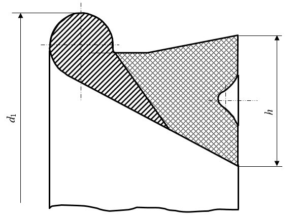
d 1 -габаритный диаметр кольца ; h - ширина уплотнительной части
Рисунок 6.1 -Уплотнительное резиновое кольцо типа ВРС
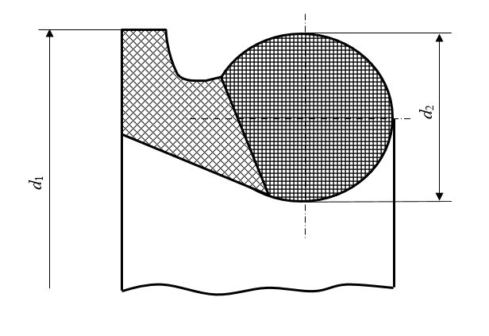
d1 - габаритный диаметр кольца; d2 - диаметр уплотнительной части
Рисунок 6.2 - Уплотнительное резиновое кольцо типа TYTON
Рисунок 6.3 - Раструбная труба под соединение типа RJ
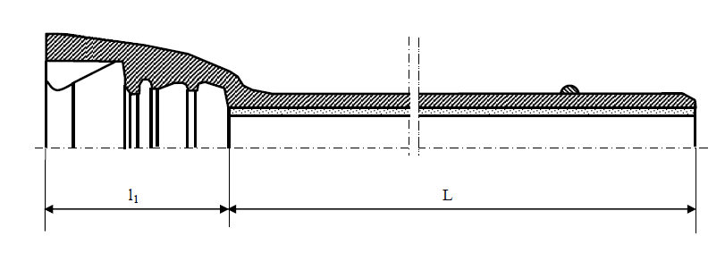
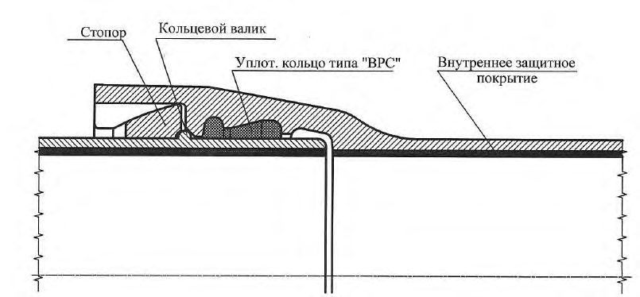
1 - стопор; 2 - кольцевой валик; 3а - уплотнительное кольцо типа BPC; 3б - уплотнительное кольцо типа TYTON; 4 - внутреннее защитное покрытие
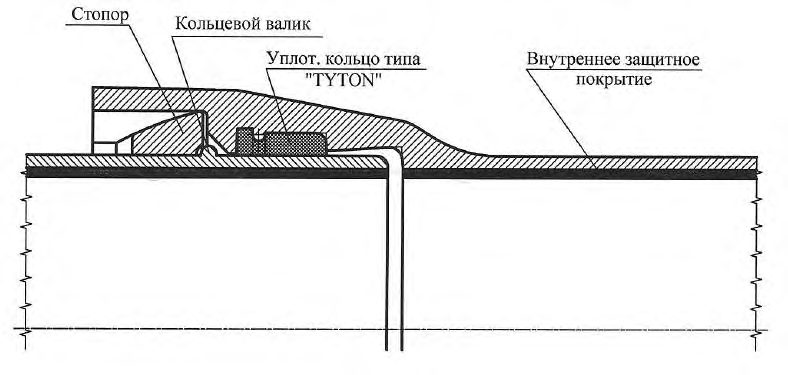
Рисунок 6.4 Раструбно-замковые соединения типа RJ с уплотнительным кольцом типа ВРС ( а ) и с уплотнительным кольцом типа TYTON ( б )
Рисунок 6.5 - Допустимый угол поворота осевых линий труб в соединении типа RJ ( а ) и искривление участка трубопровода за счет поворотов на стыках ( б )
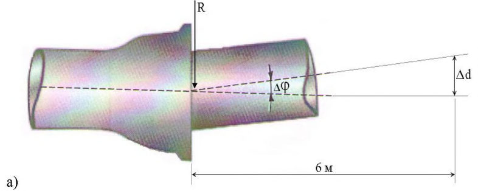
Таблица 6.4 Характеристики соединения типа RJ при изгибе
| Диаметр труб | Продольное осевое смещение труб Δ d , мм | Допустимый угол отклонения (максимальный) Δφ, град | Радиус изгиба трубопровода (минимальный) R , м |
|---|---|---|---|
| DN 80 | 14,0 | 5 | 69 |
| DN 100 | 14,0 | 5 | 69 |
| DN 125 | 13,5 | 5 | 69 |
| DN 150 | 13,5 | 5 | 69 |
| DN 200 | 17,5 | 4 | 86 |
| DN 250 | 19,5 | 4 | 86 |
| DN 300 | 21,0 | 4 | 86 |
| DN 400 | 21,0 | 3 | 115 |
| DN 500 | 19,0 | 3 | 115 |
К выбирается из ряда целых чисел в соответствии с ГОСТ Р 57430.
- временное сопротивление σв, МПа (кгс/мм² ) …………… 420 (42);
- предел текучести σт, МПа (кгс/мм² ) ………………………. 300 (30);
- относительное удлинение δ, % …………………………….. 10,0;
- ударная вязкость, кгс·м/см² ……………………………… 3,0.
Твердость металла труб согласно ГОСТ Р 57430 не должна превышать 230 НВ.
Таблица 6.5 Химический состав металла труб и соединительных деталей
| Химический состав металла труб (массовая доля элементов),% | Химический состав металла труб (массовая доля элементов),% | Химический состав металла труб (массовая доля элементов),% | Химический состав металла труб (массовая доля элементов),% | Химический состав металла труб (массовая доля элементов),% | Химический состав металла труб (массовая доля элементов),% |
|---|---|---|---|---|---|
| С | Si | Мn | Mg | S | Р |
| 3,3-3,9 | 1,9-2,9 | До 0,4 | 0,025-0,05 | Не более | Не более |
| 3,3-3,9 | 1,9-2,9 | 0,025-0,05 | 0,015 | 0,1 |
Таблица 6.6 Заводское испытательное гидравлическое давление труб из ВЧШГ
| DN , мм | Максимальное допустимое рабочее давление трубопровода, МПа, не более | Заводское испытательное гидравлическое давление, МПа, не менее |
|---|---|---|
| От 80 до 200 включ. | 6,4 | 9,6 |
| 250 | 5,6 | 8,4 |
| 300 | 5,4 | 8,1 |
| 350 | 5,0 | 7,5 |
| От 400 до 500 включ. | 4,0 | 6,0 |
Примечание - Значения заводского испытательного гидравлического давления указаны для максимального допустимого рабочего давления трубопровода.
Время выдержки заводского испытательного гидравлического давления с одновременным видеоконтролем должно составлять от 25 до 30 с.
Раструбно-замковое соединение труб должно выдерживать заводское испытательное гидравлическое давление не менее заводского испытательного гидравлического давления труб соответствующего диаметра.
- грунтовка на основе синтетической смолы;
- эпоксидная композиция по ГОСТ Р 57430;
- полиуретан по ГОСТ Р 57430;
- клейкие полимерные ленты по ГОСТ Р 57430;
- полиэтиленовый рукав.
Нанесение дополнительных покрытий на трубы возможно без цинковой основы. Трубы могут поставляться без внешних защитных покрытий. Тип наружного покрытия определяется проектом.
- цементно-песчаное покрытие из глиноземистого цемента по ГОСТ 969;
СП 483.1325800.2020
- химически стойкие к газу, нефти и пластовым водам эпоксидные композиции или полиуретановые материалы по ГОСТ Р 57430.
- знака предприятия-изготовителя;
- номинального диаметра DN;
- номера ковша;
- года и даты изготовления;
- обозначения материала - чугуна с шаровидной формой графита (GGG) по ГОСТ Р 57340.
Дополнительная маркировка (ссылка на стандарт, обозначение класса) наносится несмываемой краской на внешней поверхности трубы.
6.4Стопоры и уплотнительные кольца для соединений типа RJ
6.5Соединительные детали для соединений типа RJ
- при необходимости использования нестандартных соединительных деталей;
- переходе трубопровода с чугуна на сталь;
- выполнении ремонтных работ на трубопроводе.
- с раструбной частью с одной стороны и гладким концом - с другой;
- с фланцем с одной стороны и гладким концом - с другой;
- с раструбными частями с двух или трех (для тройников) сторон;
- с гладким концом со всех сторон.
Таблица 6.7 Наименования и обозначения литых соединительных деталей из ВЧШГ
| Наименование | Обозначение | Обозначение |
|---|---|---|
| на схемах | в документах | |
| Тройник раструбный | ТР | |
| Колено раструбное | УР | |
| Колено раструб - гладкий конец | УРГ | |
| Отвод раструбный | ОР | |
| Отвод раструб - гладкий конец | ОРГ | |
| Патрубок раструб - гладкий конец | ПРГ | |
| Патрубок фланец - раструб | ПФР | |
| Патрубок фланец - гладкий конец | ПФГ | |
| Двойной раструб компенсационный | ДРК |
СП 483.1325800.2020
| Наименование | Обозначение | Обозначение |
|---|---|---|
| на схемах | в документах | |
| Муфта надвижная | МН |
Примечание - Колено - отвод, соответствующий углу поворота оси на 90°.
- временное сопротивление σв, МПа (кгс/мм² ) …………… 420 (42);
- предел текучести σт, МПа (кгс/мм² ) ………………………. 300 (30);
- относительное удлинение δ, % …………………………….. 5,0;
- ударная вязкость, кгс·м/см² ……………………………… 3,0.
Твердость металла на наружной поверхности изделий согласно ГОСТ Р 57430 не должна превышать 250 НВ.
- с раструбной частью с одной стороны и гладким концом - с другой;
- с фланцем с одной стороны и гладким концом - с другой;
- с раструбными частями с двух или трех (для тройников) сторон;
- с раструбной частью, фланцем и гладким концом (для тройников).
Таблица 6.8 Наименования и обозначения сварных соединительных деталей из ВЧШГ
| Наименование | Обозначение | Обозначение |
|---|---|---|
| в схемах | в документе | |
| Тройник раструб - гладкий конец | ТРГ | |
| Тройник раструб - фланец - гладкий конец | ТРФГ |
СП 483.1325800.2020
| Наименование | Обозначение | Обозначение |
|---|---|---|
| в схемах | в документе | |
| Тройник раструбный | ТР | |
| Тройник раструб - фланец | ТРФ | |
| Колено раструб - гладкий конец | УРГ | |
| Колено раструбное | УР | |
| Отвод раструбный | ОР | |
| Отвод раструб - гладкий конец | ОРГ | |
| Патрубок фланец - гладкий конец | ПФГ | |
| Патрубок фланец - раструб | ПФР | |
| Примечание - Колено - отвод, соответствующий углу поворота оси на 90°. | Примечание - Колено - отвод, соответствующий углу поворота оси на 90°. | Примечание - Колено - отвод, соответствующий углу поворота оси на 90°. |
- временное сопротивление σ в, МПа (кгс/мм² ), не менее …… 400 (40);
- твердость в околошовной зоне, НВ, не более ……………… 230;
- угол загиба α, не менее …………………………………….. 18°.
СП 483.1325800.2020 Таблица 6.9 -Заводское испытательное гидравлическое давление соединительных деталей из ВШЧГ
| DN , мм | Максимальное допустимое рабочее давление трубопровода, МПа, не более | Заводское испытательное гидравлическое давление литых деталей, МПа, не менее | Заводское испытательное гидравлическое давление сварных деталей, МПа, не менее |
|---|---|---|---|
| От 80 до 200 включ. | 6,4 | 9,6 | 8,0 |
| 250 | 5,6 | 8,4 | 7,0 |
| 300 | 5,4 | 8,1 | 6,75 |
| 350 | 5,0 | 7,5 | 6,25 |
| От 400 до 500 включ. | 4,0 | 6,0 | 5,0 |
Примечание - Значения заводского испытательного гидравлического давления указаны для максимального допустимого рабочего давления трубопровода.
Время выдержки под испытательным давлением литых деталей из ВЧШГ составляет от 25 до 30 с. Соединительная часть считается выдержавшей испытание при отсутствии падения давления, видимых протечек и отпотевания.
Время выдержки под испытательным давлением сварных деталей, выполненных из заготовок труб по ГОСТ Р 57430, составляет от 10 до 15 мин. Соединительная часть считается выдержавшей испытание при отсутствии видимых протечек и отпотевания.
Литые и сварные детали соединительных частей типа RJ должны выдерживать заводское испытательное гидравлическое давление не менее заводского испытательного гидравлического давления соединительной детали в соответствии с таблицей 6.9.
СП 483.1325800.2020
- для DN 80-200 - в пределах допуска наружного диаметра;
- для DN 250-500 - не более 1 % наружного диаметра.
- товарного знака предприятия-изготовителя;
- номинального диаметра DN ;
- условного обозначения соединительной детали;
- года выпуска (допускается указывать две последние цифры);
- обозначения материала соединительной детали - чугуна с шаровидной формой графита по ГОСТ Р 57430;
- номинального давления PN для фланцев, МПа.
Обозначение номинального давления РN для фланцев допускается выполнять штамповкой, дополнительная маркировка (ссылка на стандарт, обозначение класса) наносится несмываемой краской.
- номинального диаметра трубы или соединительной части, для которых он предназначен ( DN , допускается нанесение только цифрового обозначения);
- конструктивной особенности - левый (Л) или правый (П).
6.6Стальные трубы и соединительные детали
6.7Запорно-регулирующая арматура
6.8Закрепление трубопроводов против всплытия
СП 483.1325800.2020 утяжеляющие навесные или кольцевые одиночные грузы, балластирующие грузы с использованием грунта и анкерные устройства по техническим условиям, утвержденным в установленном порядке.
1 - полукольцо; 2 - гайка; 3 - шпилька; 4 - шайба; 5 - строповочная петля
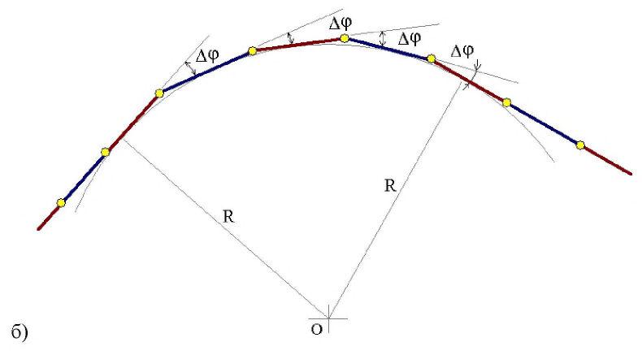
Рисунок 6.6 - Железобетонный сборный кольцевой утяжелитель
1 - чугунный полугруз; 2 - шайба; 3 - гайка; 4 - болт; B - ширина; d - диаметр отверстия; H - высота; R - наружный диаметр; r 1 -диаметр паза; r 2 - внутренний диаметр; L - длина Рисунок 6.7 - Чугунный кольцевой утяжелитель
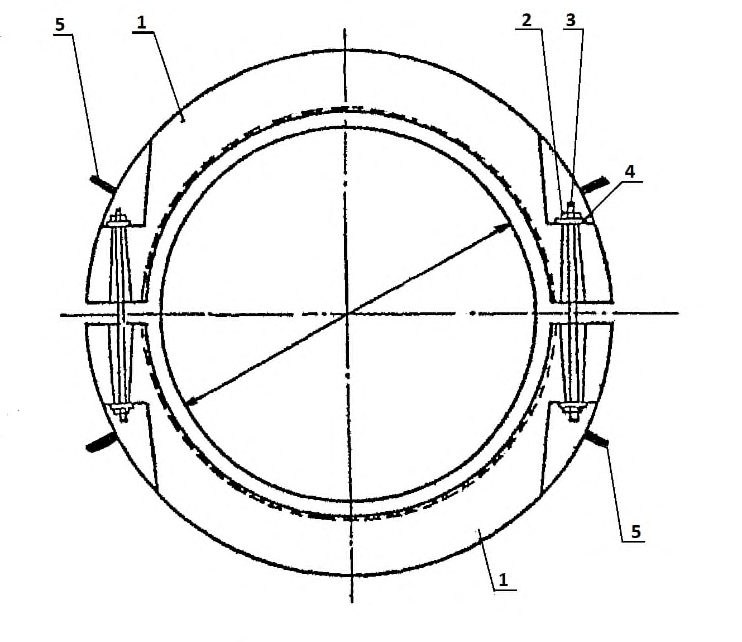
1 - железобетонный блок; 2 - верхний мягкий соединительный пояс (МСП); 3 - нижний МСП; 4 - балластируемый трубопровод; D тр - диаметр трубы Рисунок 6.8 - Железобетонный утяжелитель охватывающего типа
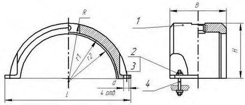
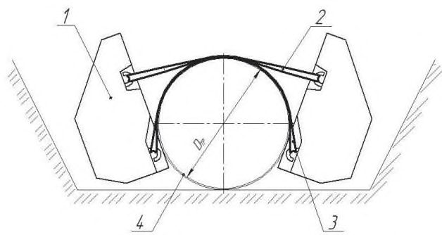
b - размер в плане; d тр - диаметр трубопровода
Рисунок 6.9 - Контейнерный текстильный бескаркасный утяжелитель
6.9Противокоррозионные покрытия трубопроводов
Целесообразность применения конкретного типа и конструкции защитного покрытия определяется в зависимости от удельного электрического сопротивления грунта, как основного параметра, определяющего коррозионную агрессивность.
Таблица 6.10 Наружные защитные покрытия труб из ВЧШГ
| Условия нанесения покрытия | Материал и конструкция наружного защитного покрытия | Толщина покрытия, мм | Максимальная температура эксплуатации, °С |
|---|---|---|---|
| Заводские | Металлический цинк массой ≥ 130 г/м² с отделочным покрытием на основе синтетических смол (полимерных материалов) | ≥ 0,07 | 95 |
| Заводские | Металлический цинк массой ≥ 200 г/м² с отделочным покрытием на основе эпоксидных красок | 0,110 | 95 |
| Базовые | Сплав цинка с алюминием массой ≥ 400 г/м² с отделочным покрытием на основе эпоксидных красок | 0,110 | 95 |
| Базовые | На основе полиуретановых смол | 1,5 | 95 |
| Базовые, трассовые | Экструдированный полиэтилен | 1,8-2,0 | 60 |
| Базовые, трассовые | Ленточная (пленочная) изоляция | По ГОСТ Р 57430 | По ГОСТ Р 57430 |
| Базовые, трассовые | Мастика изоляционная битумная, битумно-полимерная | 1,0 | 40 |
| Трассовые | На основе термоусаживающихся материалов (лент) | 1,2 | 95 |
| Трассовые | Полиэтиленовый рукав | 0,2 | 95 |
Примечания
- 1 Под максимальной температурой эксплуатации понимается максимальная температура транспортируемой среды.
- 2 Допускается разброс толщины покрытия в пределах 20 %.
- 3 При наличии покрытий заводского нанесения не требуется нанесение дополнительного покрытия в трассовых условиях.
- а) ниже уровня грунтовых вод:
- при электрическом сопротивлении грунтов более 25 Ом·м - цинковое покрытие с завершающим покрытием на основе синтетических смол (полимеров);
- при электрическом сопротивлении грунтов более 15 Ом·м - цинковое покрытие с завершающим покрытием на основе синтетических смол (полимеров) плюс полиэтиленовый рукав или цинковое покрытие с завершающим эпоксидным покрытием;
- при электрическом сопротивлении грунтов более 5 Ом·м - сплав цинка с алюминием с завершающим эпоксидным покрытием;
- при электрическом сопротивлении грунтов менее 5 Ом·м - армированные покрытия (экструдированный полиэтилен, полиуретан, клейкие ленты); б) выше уровня грунтовых вод:
- при электрическом сопротивлении грунтов более 15 Ом·м - цинковое покрытие с завершающим покрытием на основе синтетических смол (полимеров);
- при электрическом сопротивлении грунтов более 10 Ом·м - цинковое покрытие с завершающим покрытием на основе синтетических смол (полимеров) плюс полиэтиленовый рукав или цинковое покрытие с завершающим эпоксидным покрытием;
- при электрическом сопротивлении грунтов более 5 Ом·м - сплав цинка с алюминием с завершающим эпоксидным покрытием;
- при электрическом сопротивлении грунтов менее 5 Ом·м - армированные покрытия (экструдированный полиэтилен, полиуретан, клейкие ленты).
Таблица 6.11 Типы внутренних защитных покрытий труб из ВЧШГ
| Условия нанесения покрытия | Тип защитного покрытия | Коли- чество слоев | Суммарная толщина покрытия, мм | Степень агрессивности транспортируемой среды |
|---|---|---|---|---|
| Заводские | Цементно-песчаное из гли- ноземистого цемента по ГОСТ 969 | - | 3-5 | Неагрессивная Слабоагрессивная Сильноагрессивная |
| Заводские, базовые | Полиуретановые материалы по ГОСТ 9.602 | - | 1-2 | Неагрессивная Слабоагрессивная Сильноагрессивная |
| Заводские, базовые | Лакокрасочные покрытия на основе двухкомпонентных эпоксидных, модифициро- ванных эпоксидных и фенольных материалов, содержащих растворитель | 2-5 | Не менее 0,3 | Неагрессивная Слабоагрессивная Сильноагрессивная |
Окончание таблицы 6.11
| Условия нанесения покрытия | Тип защитного покрытия | Количе- ство слоев | Суммарная толщина покрытия, мм | Степень агрессивности транспортируемой среды |
|---|---|---|---|---|
| Заводские Базовые | Лакокрасочные покрытия на основе двухкомпонентных эпоксидных, модифициро- ванных эпоксидных матери- алов: - с высоким (> 70 %) содержанием сухого остатка; - не содержащих | 1-2 1 | 0,3-0,5 | Неагрессивная Слабоагрессивная Среднеагрессивная |
| Заводские Базовые | растворитель Порошковые покрытия на основе полимерных эпоксидных и модифици- рованных эпоксидных материалов, наносимых по жидкой адгезионной грунтовке (праймеру) | 1 (праймер) 1 (порошок) | 0,3-0,5 | Неагрессивная Слабоагрессивная Среднеагрессивная Сильноагрессивная |
| Заводские | Стеклоэмалевые покрытия: - безгрунтовое | 1 | Не менее 0,3 | Неагрессивная Слабоагрессивная Среднеагрессивная |
| Базовые | - покровное | 2 | Не менее 0,4 | Неагрессивная Слабоагрессивная Среднеагрессивная Сильноагрессивная |
| Примечание - Для сильноагрессивных сред применяются покрытия только на основе | Примечание - Для сильноагрессивных сред применяются покрытия только на основе | Примечание - Для сильноагрессивных сред применяются покрытия только на основе | Примечание - Для сильноагрессивных сред применяются покрытия только на основе | Примечание - Для сильноагрессивных сред применяются покрытия только на основе |
6.10Тепловая изоляция
Материал и толщина теплоизоляционного слоя определяются теплотехническим расчетом обеспечения необходимой температуры трубопровода при транспортировании жидких сред. Расчет проводится с учетом следующих параметров:
- характеристика транспортируемого продукта;
- метод прокладки трубопроводов;
- климатические условия в районе строительства объекта;
- технологический режим трубопровода;
- возможные остановки работы трубопровода;
- наличие путевого обогрева и его характеристики;
- свойства теплоизоляционного материала;
- другие требования.
7Требования к проектированию промысловых трубопроводов
- безопасную и надежную эксплуатацию трубопровода из ВЧШГ в пределах нормативного срока службы;
- ведение технологий промыслового сбора и транспорта продукции скважин в соответствии с проектными параметрами и нормативными документами в данной области;
- возможность контроля технического состояния трубопроводов в процессе строительства и эксплуатации;
- производство монтажных и ремонтных работ с применением передовых технических средств и современных технологических процессов;
- защиту трубопроводов от коррозии, вторичных проявлений молнии, статического электричества;
- предотвращение образования ледяных, гидратных и других пробок.
Гидравлический расчет трубопроводов, транспортирующих ГЖС, рекомендуется проводить по методике, принятой в нефтегазодобывающей компании, с учетом свойств продуктов. Одна из методик гидравлического расчета приведена в приложении Б.
СП 483.1325800.2020
При расчете следует учитывать требования СП 284.1325800, принимая соответствующие расчетные коэффициенты для трубопроводов из ВЧШГ.
8Обеспечение необходимого уровня надежности и безопасности
- назначением категории I для трубопроводов и их участков в независимости от назначения;
- определением коэффициентов надежности, характеризующих назначение, условия работы трубопроводов, применяемые материалы и действующие нагрузки;
- выбором безопасных расстояний от иных зданий и сооружений (не относящихся к трубопроводу);
- расчетами на прочность и устойчивость;
- конструктивно-технологическими решениями при проектировании;
- технологическими решениями при обслуживании и ремонте.
- коэффициент надежности по назначению γ n = 1,00;
- коэффициент надежности по условиям работы γ c = 0,60;
- коэффициент надежности по материалу γ m = 1,55;
- коэффициент надежности по нагрузке γ f устанавливается в соответствии с таблицей 8.1.
Таблица 8.1 Значения коэффициента надежности по нагрузке γ f
| Нагрузки и воздействия | Нагрузки и воздействия | Способ прокладки трубопроводов | Способ прокладки трубопроводов | Коэффициент надежности по нагрузке |
|---|---|---|---|---|
| Вид нагрузки | Характеристика нагрузки | Подземный | Надземный | γ f |
| Постоянные | Собственный вес трубопро- вода и обустройств | + | + | 1,10 (0,95) |
| Постоянные | Вес изоляции | + | + | 1,20 |
| Постоянные | Давление (вес) грунта (засыпки, насыпи) | + | - | 1,20 (0,80) |
| Постоянные | Гидростатическое давление воды | + | - | 1,00 |
| Временные длительные | Внутреннее давление транс- портируемой жидкой среды | + | + | 1,15 |
| Временные длительные | Вес транспортируемой жид- кой среды | + | + | 1,00 (0,95) |
| Временные длительные | Неравномерные деформации грунта, не сопровождаю- щиеся изменением его структуры (осадки, пучения и др.) | + | + | 1,50 |
| Кратко- временные | Снеговая нагрузка | - | + | 1,40 |
| Кратко- временные | Гололедная нагрузка | - | + | 1,30 |
| Кратко- временные | Ветровая нагрузка | - | + | 1,20 |
| Кратко- временные | Нагрузка, вызываемая морозным растрескиванием грунта | + | - | 1,20 |
| Кратко- временные | Нагрузки и воздействия, возникающие при пропуске очистных устройств | + | + | 1,20 |
| Кратко- временные | Нагрузки и воздействия, возникающие при испыта- ниях трубопровода | + | + | 1,00 |
СП 483.1325800.2020
Окончание таблицы 8.1
| Нагрузки и воздействия | Нагрузки и воздействия | Способ прокладки трубопроводов | Способ прокладки трубопроводов | Коэффициент надежности по нагрузке |
|---|---|---|---|---|
| Вид нагрузки | Характеристика нагрузки | Подземный | Надземный | γ f |
| Особые | Сейсмические воздействия | + | + | 1,00 |
| Особые | Нарушения технологическо- го процесса, временные не- исправности или поломки оборудования | + | + | 1,00 |
| Особые | Неравномерные деформации грунта, сопровождающиеся изменением его структуры (селевые потоки и оползни; деформации земной повер- хности в районах горных выработок и карстовых рай- онах; деформации просадо- чных грунтов при замачи- вании или многолетнемерз- лых при оттаивании и др.) | + | + | 1,00 |
| Особые | Воздействия, вызываемые развитием солифлюкцион- ных и термокарстовых про- цессов | + | - | 1,05 |
Примечания
- 1 Знак «+» означает, что нагрузки и воздействия следует учитывать, знак «-» - не учитывать.
- 2 Значения коэффициентов надежности по нагрузке, указанные в скобках, должны приниматься в тех случаях, когда уменьшение нагрузки ухудшает условия работы трубопровода.
- 3 Когда по условиям испытания или эксплуатации в трубопроводах, транспортирующих жидкие среды, возможно попадание воздуха или опорожнение их, необходимо учитывать изменение нагрузки от веса среды.
Расстояния от оси подземных трубопроводов до зданий, сооружений и инженерных сетей принимаются в зависимости от класса и диаметра трубопровода, транспортируемого продукта, назначения объектов и степени обеспечения их безопасности, но не менее значений, приведенных в СП 284.1325800.2016 (таблица 7).
Расстояния между параллельными трубопроводами принимаются из условий обеспечения сохранности всех действующих трубопроводов при строительстве нового трубопровода, безопасности выполнения работ, надежности их в процессе эксплуатации, но не менее значений, приведенных в СП 284.1325800.2016 (раздел 8).
СП 483.1325800.2020
При прокладке промысловых трубопроводов параллельно магистральным нефте- и газопроводам расстояния между ними принимаются в соответствии с требованиями СП 36.13330.
- силовые нагружения -внутреннее давление среды, собственный вес трубопровода, обустройств и транспортируемой среды, давление (вес) грунта, гидростатическое давление воды, снеговая, ветровая и гололедная нагрузки, нагрузки, возникающие при испытании и пропуске очистных устройств;
- деформационные нагружения -воздействия неравномерных деформаций грунта (морозное растрескивание, селевые потоки и оползни, деформации земной поверхности в районах горных выработок и карстовых районах, просадки, пучение, термокарстовые процессы), сейсмические воздействия.
При отсутствии нагрузок и воздействий в числе приведенных в таблице 8.1 их необходимо принимать в соответствии с СП 284.1325800.2016 (таблица 6).
9Основные требования к трассам трубопроводов
Количество трубопроводов из ВЧШГ, укладываемых в одну траншею или на общих опорах, определяется проектом, исходя из условий надежности и безопасности эксплуатации трубопроводов и удобства выполнения строительно-монтажных и ремонтных работ.
10Конструктивные требования к трубопроводам
10.1Общие требования
При агрессивности среды, вызывающей внутреннюю коррозию со скоростью 0,2 мм в год и выше, следует применять трубы с внутренним защитным покрытием.
Целесообразность применения средств борьбы с наружной коррозией путем использования антикоррозионных изоляционных материалов, средств ЭХЗ в каждом конкретном случае должна быть обоснована в проектной документации.
Места установки узлов пуска и приема очистных и диагностических устройств должны быть ограждены, иметь освещение, к ним должен быть обеспечен подъезд автотранспорта.
В отдельных случаях при соответствующем обосновании допускается не предусматривать устройств пуска и приема очистных и диагностических устройств (например, при незначительной протяженности трубопровода и др.).
10.2Размещение запорной и другой арматуры
- в начале каждого ответвления на расстоянии, допускающем установку монтажного узла, его ремонт и безопасную эксплуатацию;
- на входе и выходе трубопроводов из головных сооружений на расстоянии от границ территории площадок не менее:
- диаметром менее 500 до 300 мм включительно - 300 м,
- диаметром менее 300 мм - 100 м;
СП 483.1325800.2020
- при наличии в пределах этих расстояний устройств для приема и запуска очистных и диагностических устройств дополнительная установка запорной арматуры необязательна;
- на обоих концах перехода трубопровода через водные преграды в зависимости от рельефа трассы с каждой стороны перехода в целях исключения поступления транспортируемого продукта в водоем (река, озеро, канал, искусственный водоем), установка запорной арматуры должна быть на отметках выше ГВВ 10 %-ной обеспеченности;
- на обоих концах участков трубопроводов, проходящих на отметках выше населенных пунктов, зданий и сооружений, в том числе железных дорог, на расстоянии, устанавливаемом проектом в зависимости от рельефа местности и необходимости обеспечения безопасности объектов;
- при переходе водной преграды шириной по зеркалу воды в межень более 10 м и глубиной более 1,5 м;
- на обоих берегах болот типа III протяженностью более 500 м включительно.
10.3Подземная прокладка трубопроводов
Таблица 10.1 -Минимальное заглубление трубопроводов до верхней образующей при траншейном способе прокладки
СП 483.1325800.2020
| Условия прохождения трассы | Заглубление, м |
|---|---|
| На непахотных землях вне постоянных проездов | 0,8 |
| На пахотных и орошаемых землях | 1,0 |
| В скальных грунтах и болотистой местности при отсутствии проезда автотранспорта и сельскохозяйственных машин | 0,6 |
| При пересечении оросительных и осушительных каналов от предельной глубины профиля очистки дна канала | 1,1 |
| При пересечении автомобильных дорог: - от верха покрытия дороги до верхней образующей защитного футляра - дна кювета, водоотводной канавы или дренажа до верхней образующей защитного футляра (при размещении дорожного полотна на нулевых отметках или в выемках) | 1,4 0,5 |
- для пресной воды - согласно СП 31.13330;
- пластовых и сточных вод - в зависимости от минерализации (солености) и температуры воды, почвенных и климатических условий [14].
Допускается уменьшить глубину прокладки трубопроводов на основании теплотехнических расчетов, применения дополнительных мероприятий (например, теплоизоляция).
При балластировке трубопроводов железобетонными и чугунными утяжелителями ширину траншеи следует назначать из условия обеспечения
СП 483.1325800.2020 расстояния между низом и стенкой траншеи не менее 0,2 м. Кроме того, ширина траншеи по дну при балластировке трубопровода должна быть не менее 2,2 DN .
Такое же расстояние должно быть между трубопроводами, укладываемыми в одной траншее.
При применении в скальных и мерзлых грунтах взрывного способа рыхления подсыпка из мягких грунтов должна быть толщиной не менее 20 см над выступающими частями основания под трубопроводы. Применяемый грунт не должен содержать мерзлые комья, щебень, гравий размером более 5 см в поперечнике.
Изоляционные покрытия в этих условиях должны быть защищены от повреждения путем присыпки трубопровода мягким грунтом толщиной слоя 20 см или применением при засыпке защитных материалов и конструкций.
Если проектом не предусмотрено применение изоляционного защитного наружного покрытия, то допускаются укладка трубопровода в траншею без подготовки дна траншеи и засыпка трубопровода без предварительной присыпки мягким грунтом.
10.4Наземная (в насыпи) прокладка трубопроводов
Первый слой на 25-30 см выше естественных отметок поверхности земли отсыпают самосвалами, разгружающими материал отсыпки на берегу болота, затем бульдозерами его сдвигают в сторону наращивания насыпи вдоль трассы.
После отсыпки первого слоя на полную длину насыпи сооружают второй слой до проектной отметки низа трубы с последующим уплотнением.
Третий слой до проектной отметки насыпают после полной осадки насыпи.
Обваловку трубопровода проводят минеральным грунтом насыпи (с присыпкой мягким или мелкогранулированным грунтом) или торфяным грунтом с последующей обсыпкой минеральным грунтом.
СП 483.1325800.2020
- по верху насыпи - не менее 1,5 DN ;
- высотой над трубопроводом - 0,8 м;
- с откосами - не менее углов естественного откоса грунта, но не менее 1:1,25.
Количество и параметры водопропускных конструкций и сооружений определяются расчетом с учетом рельефа местности, площади водосбора и интенсивности стока поверхностных вод.
10.5Надземная прокладка трубопровода
СП 483.1325800.2020 тепловых расширений в пределах рабочих температур трубопровода.
При использовании других технологий соединения (например, фланцевые) необходимо предусмотреть устройство компенсатора или обосновать возможность его исключения.
Высота прокладки надземного трубопровода от поверхности земли до низа трубопровода принимается не менее 0,5 м; в местах свободного прохода людей - 2,5 м; на путях миграции крупных животных - 3,0 м; при пересечении автомобильных дорог - в соответствии с требованиями СП 18.13330.
- при пересечении оврагов и балок - не менее 0,5 м до уровня ГВВ 5 %-ной обеспеченности;
- при пересечении несудоходных, несплавных рек и больших оврагов, где возможен ледоход, - не менее 0,5 м до уровня воды 1 %-ной обеспеченности и наивысшего горизонта ледохода;
- при пересечении судоходных и сплавных рек -не менее значения, установленного нормами проектирования подмостовых габаритов на судоходных реках и основными требованиями к расположению мостов.
- до подошвы откоса насыпи - не менее 5 м;
- до бровки откоса выемки - не менее 3 м;
- до крайнего рельса железной дороги - не менее 10 м.
Данное требование распространяется для основной подземной прокладки трубопровода в местах перехода на надземную прокладку, на переходах через препятствия, для исключения возможности перехода людей по трубопроводу через препятствие.
10.6Прокладка трубопроводов в многолетнемерзлых, пучинистых и просадочных грунтах
СП 483.1325800.2020
10.7Прокладка трубопроводов в сейсмоактивных районах
Конструкции опор должны обеспечивать возможность перемещений трубопроводов, возникающих во время землетрясения
Допускается подземная прокладка трубопровода в зоне активных тектонических разломов. Необходимо соблюдать следующие параметры траншеи: откосы - не менее 1:2, должны быть выполнены подсыпка и присыпка толщиной не менее 0,3 м крупнозернистым песком, торфом и т. д. на всей протяженности длины участка перехода трубопровода через разлом.
Длина участка перехода трубопровода через зону активного тектонического разлома принимается равной ширине разлома плюс 100 м в каждую сторону от границ разлома.
СП 483.1325800.2020
11Переходы трубопроводов через естественные и искусственные преграды
11.1Общие требования
11.2Переходы трубопроводов через водные преграды и болота
Трубопроводы с жидкими сероводородсодержащими средами при переходе через водные преграды в русловой части рек и в границах отметок зеркала озер должны прокладываться в виде воздушного перехода в защитном футляре, равнопрочном рабочему трубопроводу.
- для многониточных переходов - участок, ограниченный запорной арматурой, установленной на берегах;
- для однониточных переходов - участок, ограниченный ГВВ не ниже отметок 10 %ной обеспеченности.
СП 483.1325800.2020 предусматривать перпендикулярным к динамической оси потока, избегая участков, сложенных скальными грунтами.
При соответствующем технико-экономическом обосновании допускается располагать переходы трубопроводов через реки и каналы выше по течению от указанных объектов на расстояниях, приведенных в СП 284.1325800.2016 (таблица 7). Должны разрабатываться дополнительные мероприятия, обеспечивающие надежность работы и пожарную безопасность подводных переходов.
Проектная отметка верха забалластированного трубопровода при проектировании подводных переходов должна назначаться на 0,5 м ниже прогнозируемого предельного профиля размыва русла рек, определяемого на основании инженерных изысканий с учетом возможных деформаций русла в течение 25 лет после окончания строительства перехода, но не менее 1,0 м от естественных отметок дна водоема.
При пересечении водных преград, дно которых сложено скальными породами, заглубление трубопровода следует принимать не менее 0,5 м, считая от верха забалластированного трубопровода до дна водоема.
При сооружении переходов «труба в трубе» и прокладке защитного кожуха сооружение резервной нитки не требуется.
При параллельной прокладке двух трубопроводов через преграду методом ГНБ расстояние в плане между осями этих трубопроводов должно быть не менее 10 м.
Минимальные расстояния между осями трубопроводов, заглубляемых в дно водоема с зеркалом воды в межень шириной свыше 25 м, должны быть не менее 30 м.
Минимальное расстояние между осями параллельных трубопроводов на участках подводных переходов трубопроводов, заглубляемых в дно водоема с зеркалом воды в межень шириной до 25 м, а также прокладываемыми на пойменных участках подводного перехода, следует принимать такими же, как для линейной части трубопровода.
Если результаты расчета подтверждают возможность всплытия трубопровода, то следует предусматривать:
- на русловом участке перехода - кольцевые грузы, конструкция которых должна обеспечивать надежное их крепление к трубопроводу для укладки трубопровода способом протаскивания по дну;
СП 483.1325800.2020
- на пойменных участках - одиночные грузы или закрепление трубопроводов анкерными устройствами.
Крутизну откосов подводных траншей для укладки трубопроводов следует назначать в зависимости от свойств грунта, аналогично строительству стальных трубопроводов, в соответствии с требованиями СП 86.13330.
Ширина укрепляемой полосы берега должна определяться проектом в зависимости от геологических и гидрологических условий, но не менее ширины раскрытия траншеи в урезе с запасом по 10 м в каждую сторону от оси.
При соответствующем обосновании в качестве исключения допускается укладка трубопроводов на поверхности болота в теле насыпи (наземная прокладка) или на опорах (надземная прокладка). При этом должны быть обеспечены прочность трубопровода, общая устойчивость его в продольном направлении и против всплытия, а также защита от теплового воздействия в случае разрыва одной из ниток. Расчет продольного усилия приведен в СП 66.13330.
11.3Переходы трубопроводов через железные и автомобильные дороги
- открытым способом, при котором трубопровод укладывается в траншею, устроенную в насыпи дороги с перекрытием движения транспорта и устройством объезда для движения транспорта;
- закрытым способом, без перекрытия движения транспорта, для укладки футляра (кожуха) через дороги применяют методы бестраншейной проходки.
Открытый способ используется там, где возможно временное прекращение движения транспорта или устройство временных объездов, то есть на дорогах с низкой интенсивностью движения.
Закрытый способ (бестраншейная проходка) применяется без ограничений, независимо от категории дорог, интенсивности движения транспорта, категории грунтов и диаметра трубопроводов.
При закрытом способе прокладки кожухов (футляров) применяются технологии прокола или ГНБ. В полученный канал протаскивается готовая плеть.
СП 483.1325800.2020 обосновании в выемках дорог.
Прокладка трубопровода через тело насыпи не допускается.
Концы футляра должны выводиться на расстояние:
- при прокладке трубопровода через железные дороги от осей крайних путей - 50 м, но не менее 5 м от подошвы откоса насыпи и 3 м от бровки откоса выемки, от крайнего водоотводного сооружения земляного полотна (кювета, нагорной канавы, резерва) - 3 м;
- при прокладке трубопровода через автомобильные дороги - от бровки земляного полотна - 25 м, но не менее 2 м от подошвы насыпи.
Концы футляров, устанавливаемые на участках переходов трубопроводов через автомобильные дороги категорий III, III-п, IV-п, IV и V, должны выводиться на 5 м от бровки земляного полотна.
СП 483.1325800.2020
В последнем случае кабель связи или крепится к футляру трубопровода с наружной стороны, или помещается в защитном футляре.
20 - до стрелок и крестовин железнодорожного пути и мест присоединения отсасывающих кабелей к рельсам электрифицированных дорог;
30 - до труб, тоннелей и других искусственных сооружений на железных дорогах.
12Защита трубопроводов от коррозии
12.1Общие требования
Если трубопровод целиком смонтирован с применением труб из ВЧШГ, то для его защиты от коррозии достаточно использовать изоляционное покрытие нормального типа независимо от условий прокладки и эксплуатации.
Если трубопровод из ВЧШГ имеет стальные элементы или участки, то в зависимости от конкретных условий прокладки и эксплуатации средства защиты от подземной и атмосферной коррозии должны соответствовать требованиям 6.9, ГОСТ Р 51164 и ГОСТ 9.602.
Противокоррозионная защита независимо от условий прокладки и эксплуатации трубопроводов, а также материалов, из которых трубопровод смонтирован, должна обеспечивать их безотказную работу в течение всего срока эксплуатации трубопровода.
12.2Защита трубопроводов от почвенной коррозии
ГОСТ Р 51164.
12.3Защита надземных трубопроводов от атмосферной коррозии
12.4Электрохимическая защита трубопроводов от подземной коррозии
СП 483.1325800.2020 изоляционное защитное покрытие, то, как правило, применение ЭХЗ не требуется.
- если грунты обладают удельным электрическим сопротивлением менее 0,5 Ом·м;
- если существует опасное влияние блуждающих постоянных и переменных токов;
- при наличии достаточной электрической проводимости трубопровода в продольном направлении.
12.5Тепловая изоляция
- для обеспечения заданной температуры транспортируемого продукта в соответствии с нормативными документами при транспортировании его в зимних условиях (высокопарафинистая нефть, обводненная нефть, вода и другие жидкие среды);
- исключения пучения или осадки грунтов;
- обеспечения сохранности окружающей среды.
Разрешается выполнять теплоизоляцию надземных трубопроводов из горючих материалов при условии устройства противопожарных перемычек из негорючих материалов. Для подземных трубопроводов выбор материала теплоизоляции не нормируется.
При строительстве надземных трубопроводов в негорючей оболочке допускается противопожарные вставки не предусматривать.
Тепловая защита труб, элементов и узлов трубопровода в местах расположения опор и участков для измерений и контроля поверхности трубопроводов может выполняться как с применением сборных и съемно-разъемных теплоизоляционных конструкций, так и нанесением теплоизоляционного покрытия в трассовых условиях.
При прокладке подземных участков трубопроводов в районах распространения многолетнемерзлых грунтов допускается применение сборных теплоизоляционных конструкций.
12.6Требования к внутреннему защитному покрытию труб и соединительных деталей
СП 483.1325800.2020
13Подготовка к строительству трубопроводов
13.1Общие требования
При организации строительства в целях обеспечения требуемого качества должны строго соблюдаться технологии производства работ, предусмотренные рабочей документацией и проектом производства работ.
Организационно-техническая подготовка строительства трубопроводов должна соответствовать требованиям настоящего раздела и СП 284.1325800.2016 (раздел 15).
13.2Транспортирование и хранение труб и соединительных деталей
СП 483.1325800.2020 труб должны предусматриваться меры, исключающие механическое повреждение труб и наружного защитного покрытия.
13.3Организация входного контроля
- внешний осмотр всей партии труб, соединительных деталей, узлов трубопроводов, арматуры (100 %);
- инструментальный контроль 5 % партии выборочно (но не менее 5 шт.). Если количество труб, соединительных деталей, узлов трубопроводов, арматуры в партии меньше 5 шт., то проверяют все.
13.4Входной контроль труб и соединительных деталей из ВЧШГ
- номинальные размеры труб (условный проход, класс толщины стенки, общая длина в метрах);
- наименование предприятия-изготовителя труб;
- обозначение стандарта или другого нормативного документа, по которому изготовлены трубы;
- год изготовления труб;
- номер партии и входящие в нее номера плавок и номера труб;
- результаты механических испытаний металла труб, входящих в данную партию;
- значение давления заводского гидравлического испытания;
- химический состав металла;
- виды внешнего и внутреннего покрытия;
- тип, материал и количество уплотнительных колец.
- наличие маркировки и соответствие ее имеющимся документам о качестве или паспортам;
- отсутствие недопустимых вмятин, задиров, механических повреждений, металлургических дефектов и коррозии в соответствии с ГОСТ Р 57430;
- отсутствие на торцах труб забоин и вмятин;
- отсутствие видимых механических повреждений на внутреннем и внешнем защитных покрытиях.
- длина;
- наружный диаметр и овальность;
- внутренний диаметр;
- кривизна;
- толщина стенки;
- кольцевой валик на гладком конце трубы;
- размеры поверхностных дефектов.
- они соответствуют требованиям нормативных документов заводаизготовителя, имеют заводскую маркировку и документы на поставку, подтверждающие соответствие требованиям нормативных документов, по которым они изготовлены;
- отсутствуют дефекты недопустимых форм и размеров;
- на защитных покрытиях отсутствуют повреждения.
Трубы, имеющие по результатам входного контроля дефекты, превышающие допустимые, отбраковываются и возвращаются поставщику с предъявлением рекламации.
Таблица 13.1 Поверхностные дефекты уплотнительных колец
| Показатель внешнего вида | Допустимый размер, мм | Допустимый размер, мм |
|---|---|---|
| на уплотнительной поверхности | на остальной поверхности | |
| Трещина, расслоение и механическое повреждение | Не допускается | Не допускается |
| Искажение формы сечения (смещение по месту разъема пресс- форм) | Допускается в пределах допуска на размер | Допускается в пределах допуска на размер |
| Включение, возвышение, углубление, отпечаток на поверхности | Допускаются не более: - глубиной (высотой) - 0,5; - диаметром - 3,0 | Допускаются не более: - глубиной (высотой) - 1,5; - диаметром - 5,0 |
| Выпрессовка | Не допускается | Не допускается |
| Недооформленность | Не допускается | Допускаются не более: - глубиной - 1,0; - диаметром - 2,5 |
| Втянутая кромка | Допускается глубиной не более 0,5 на 1/3 длины окружности | Допускается глубиной не более 2,0 на 1/3 длины окружности |
| Пузырь | Не допускается | Допускаются не более: |
СП 483.1325800.2020
| - высотой - 2,0; - диаметром - 3,0 | |
|---|---|
| Разнотон, разноцвет | Допускается, в том числе в месте стыка резин |
| Следы от стыковки заго- товок | Допускается |
13.5Подготовительные работы
- разбивку и закрепление пикетажа, детальную геодезическую разбивку горизонтальных и вертикальных углов поворота, разметку строительной полосы, выноску пикетов за ее пределы;
- расчистку строительной полосы от леса и кустарника;
- снятие плодородного слоя земли;
- планировку строительной полосы, уборку валунов;
- осушение строительной полосы, ее промораживание или защиту от промерзания в зависимости от грунтовых условий;
- строительство временных дорог и технологических проездов;
- устройство защитных ограждений, обеспечивающих безопасность производства работ.
14Монтаж трубопроводов. Общие положения
15Монтаж трубопроводов по технологии RJ
15.1Монтаж трубопровода
- наружная поверхность гладкого конца трубы очищается от посторонних предметов и загрязнений с помощью щетки и шпателя;
- наружная поверхность гладкого конца трубы до наплавленного валика (особенно тщательно - фаска) покрывается смазкой (техническим вазелином или аналогичным покрытием), поставляемой предприятием - изготовителем трубной продукции;
- внутренняя поверхность раструба трубы (особенно тщательно -паз для уплотнительного кольца) очищается от посторонних предметов и загрязнений с помощью щетки и скребка;
- в кольцевой паз раструба вкладывается уплотнительное кольцо с проверкой правильности размещения его гребня (рисунок 15.2);
- внутренняя поверхность уплотнительного кольца покрывается смазкой, следует избегать стекания смазки под наружную поверхность уплотнительного кольца;
- монтируемая труба подается к ранее уложенной трубе, центрируется по конусной поверхности уплотнительного кольца и с помощью монтажного приспособления или ломика (при малом диаметре труб) вводится в раструб. а а - очистка и смазка наружной поверхности гладкого конца трубы; б - очистка раструба; в - установка уплотнительного кольца в раструб; г - смазка внутренней поверхности уплотнительного кольца; д - стыковка труб и установка правого стопора; е - установка левого стопора с фиксацией стопорной проволокой; ж - смонтированное соединение
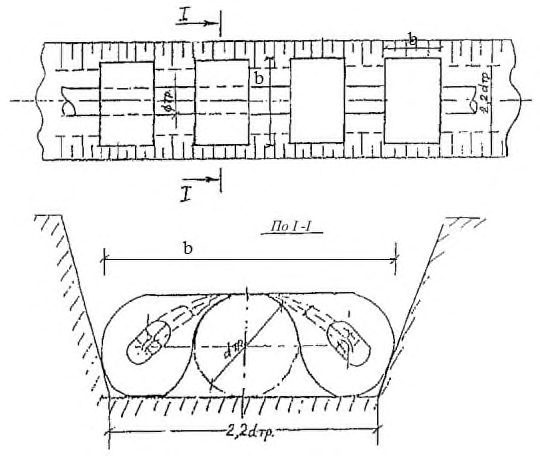
Рисунок 15.1 - Порядок монтажа труб с соединением типа RJ
Рисунок 15.2 - Укладка уплотнительного кольца
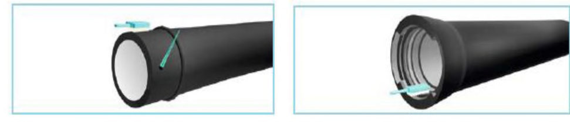
Демонтаж проводят с помощью двух замковых штанг (рисунок 15.3, д ).
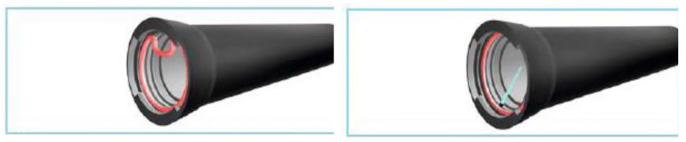
а лом и деревянный брусок; б петля и вильчатая штанга; в - петля и тросовая тяга; г экскаватор и деревянный брусок; д две замковые штанги
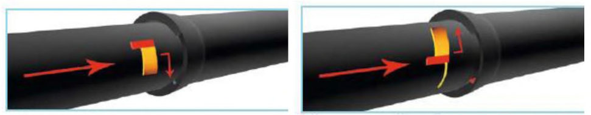
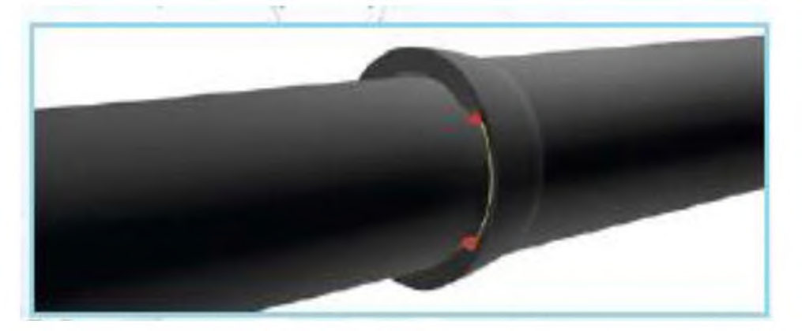
Рисунок 15.3
- Монтаж труб с соединением типа RJ
- вставить правый стопор в выемку раструба и провернуть его вправо до упора;
- вставить левый стопор в выемку раструба и провернуть его влево до упора;
- стопорную проволоку загнуть внутрь выемки раструба.
Для облегчения установки стопоров допускается проводить их монтаж без снятия усилия от монтажного приспособления.
В случае повторного соединения труб используют новое уплотнительное кольцо.
После укорачивания трубы на гладком конце восстанавливают валик методом наплавки электродуговой сваркой с соблюдением требований приложения А. Технология наплавки валика приведена на рисунке 15.4.
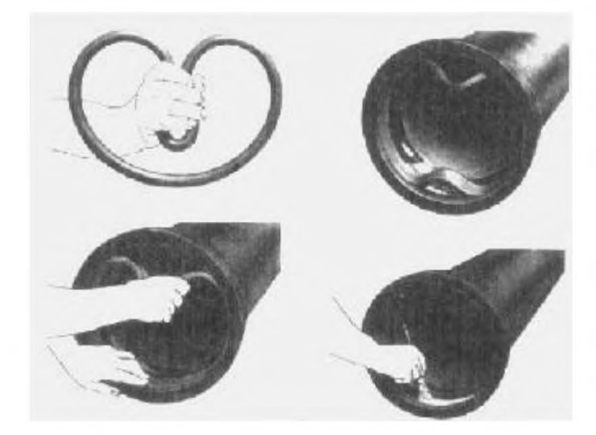
Примечание - Сварку желательно выполнять между отметками А и В, придерживаясь этого рабочего участка путем вращения трубы.
Рисунок 15.4 - Технология наплавки валика
- электрический сварочный аппарат постоянного тока, дающий ток не менее 160 А;
- электрическая шлифовальная машинка;
- медное направляющее кольцо для позиционирования шва шириной от 25 до 35 мм и толщиной 5 мм.
При отрицательных низких температурах окружающего воздуха, сварочные работы проводят в закрытом отапливаемом помещении (ремонтная база).
- отмечают место наплавки валика на гладком конце трубы с помощью медного кольца;
- тщательно зачищают участок шириной 25 мм для наплавки валика. Зачистка не должна снижать толщину стенки трубы на значение, превышающее минусовой допуск;
- устанавливают и зажимают медное кольцо непосредственно за местом будущего валика. После того как кольцо будет установлено и зажато болтами, его необходимо слегка обстучать молотком для обеспечения плотного прилегания к трубе;
- наплавляют валик по краю медного кольца в один проход покрытыми электродами диаметром 3-4 мм. Наплавка выполняется в направлении снизу вверх преимущественно в нижнем положении (на верхней части поверхности трубы). Это обеспечивается периодическим вращением трубы в процессе наплавки;
- после окончания наплавки зачищают валик (буртик) от шлака и проводят восстановление внешнего защитного покрытия.
15.2Укорачивание трубы из высокопрочного чугуна с шаровидным графитом
Рисунок 15.5 - Маркировка для калиброванных труб
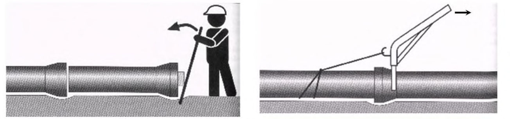
Рисунок 15.6 - Резка трубы из ВЧШГ
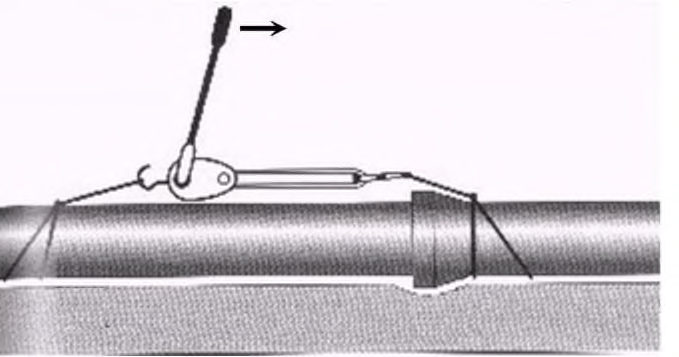
Перед тем как резать трубу, необходимо измерить ее внешний диаметр на месте реза, чтобы убедиться, что он соответствует размерам гладкого конца.
После отрезания необходимо с помощью шлифовальной машинки снять фаску и подготовить к стыковке гладкий конец отрезанной трубы.
15.3Восстановление формы трубы
- лебедка со стальным тросом;
- седло поддержки с направляющим шкивом для веревки;
- пластина основания с двумя направляющими шкивами.
После восстановления формы проводят сборку трубопровода, не удаляя оборудование, чтобы избежать влияния упругой деформации трубы. б
Рисунок 15.7 - Восстановление окружности с помощью лебедки ( а ) и домкрата ( б )
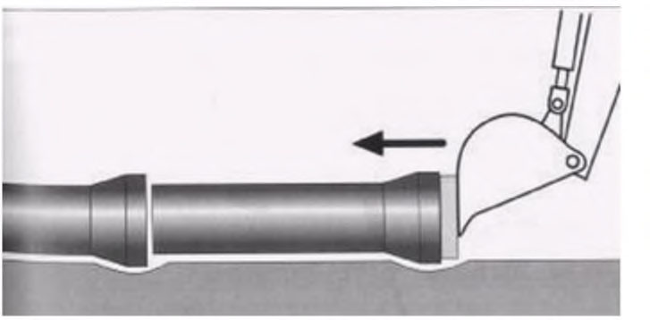
- гидравлический домкрат;
- брусок или регулируемая поддержка;
- две покрытые резиной пластины основания соответствующего размера.
Перед сборкой трубопровода оборудование необходимо удалить.
15.4Ремонт внутреннего покрытия
- участок меньше, чем 0,1 м² ;
- длина меньше, чем четверть длины окружности трубы;
- отсутствует локальная деформация трубы.
В противном случае необходимо отрезать поврежденный участок трубы.
Для проведения ремонта внешнего цементно-песчаного покрытия применяют песчано-цементный раствор согласно таблице 15.1.
СП 483.1325800.2020
Таблица 15.1 Состав для ремонта внутреннего цементно-песчаного покрытия
| Компоненты | ГОСТ | Соотношение компонентов по массе | Масса компонентов на один замес, кг |
|---|---|---|---|
| Цемент глиноземистый | ГОСТ 969 | 1,0 | 1,0 |
| Песок мелкозернистый для строительных работ | ГОСТ 8736 | 1,0 | 1,0 |
| Вода питьевая | - | 0,3-0,5 | 0,3-0,5 |
Примечание - Мелкозернистый песок получают при просеивании через сито с ячейками размером 0,20 мм.
Место дефекта смачивают тонким слоем жидкого стекла флейцевой кистью.
Раствор наносят в трубу на место дефекта с помощью резиновой перчатки, уплотняют, заглаживают и затем затирают флейцевой кистью. После затирки место дефекта покрывают тонким слоем жидкого стекла.
Воду добавляют в цемент. Раствор вручную перемешивают до получения однородной консистенции, что позволяет его ровно укладывать на ремонтируемую поверхность. Наличие комков в растворе не допускается.
Место дефекта смачивают тонким слоем жидкого стекла. Ремонтный раствор наносят в трубу на место дефекта с помощью резиновой перчатки, уплотняют, заглаживают и затирают флейцевой кистью.
15.5Ремонт наружного защитного покрытия
Наружное защитное покрытие после восстановления должно быть сухим, ровным, без сорности и посторонних включений.
- для нанесения покрытия проводят подготовку поверхности трубы. Отслоения (вздутия), подтеки и другие дефекты покрытия должны быть удалены любым способом, обеспечивающим чистоту поверхности от загрязнения и остатков покрытия в соответствии с требованиями нормативных документов, технической документации и технических условий предприятия-изготовителя;
- исправление проводят нанесением слоя покрытия вручную кистью или краскопультом;
- слой покрытия наносят перекрывающимися параллельными полосами с перекрытием в 1/3 полосы. Для уменьшения разнотолщинности слой покрытия наносят полосами, расположенными перпендикулярно к полосам предыдущего слоя.
15.6Ремонт дефектных участков трубопровода
Демонтаж и ремонт участков трубопроводов с применением фланцевых соединений проводят с соблюдением правил безопасности, требования к которым приведены в [24].
- вырезают дефектный участок трубы. Края трубы обрабатывают и наносят антикоррозионную защиту;
- ослабляют гайки на шпильках, снимая усилие на резиновые уплотнители, устанавливают ремонтные части на левый и правый конец ремонтируемого участка трубопровода;
- отрезают новую трубу необходимой длины и устанавливают ее соосно с ремонтируемой трубой;
- перемещают компенсационный двойной раструб так, чтобы стыки труб были посредине (между резиновыми уплотнителями) и затягивают гайки на шпильках.
Процесс ремонта участка трубопровода с помощью компенсационного двойного раструба приведен на рисунке 15.8.
- вырезают дефектный участок трубы. Края трубы обрабатывают и наносят антикоррозионную защиту;
- извлекают из раструба оставшийся правый кусок трубы. Смазывают ее поверхность смазкой для лучшего перемещения муфты по поверхности и устанавливают на него надвижную муфту с уплотнительными кольцами;
- участок трубы с надвижной муфтой устанавливают в раструб трубы с правой стороны трубопровода. Надвижную муфту передвигают влево.
Процесс ремонта участка трубопровода с помощью надвижной муфты приведен на рисунке 15.9.
Рисунок 15.8 -Ремонт участка трубопровода с помощью компенсационного двойного раструба
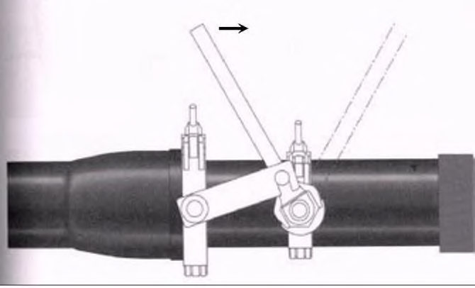
Рисунок 15.9 - Ремонт участка трубопровода с помощью надвижной муфты
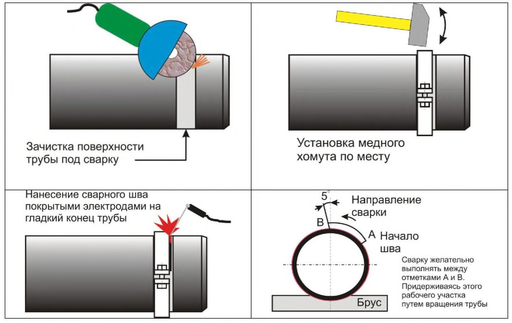
Установка свертной муфты на трубопровод допускается как временная мера для предотвращения растекания жидкости до начала основных ремонтных работ.
Рисунок 15.10 - Ремонт участка трубопровода с помощью свертной муфты 16 Контроль качества монтажа трубопроводов
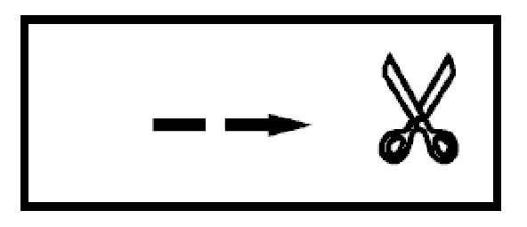
- 16.1 Для обеспечения требуемого качества монтажа трубопроводов из ВЧШГ проводят следующий контроль:
- проверку квалификации персонала;
- входной контроль качества труб, элементов трубопроводов, конструкций и материалов;
- технический осмотр строительных техники и оборудования (гидрофицированной установки, крана-трубоукладчика, трактора-буксировщика, строп, траверс и т. д.);
- систематический операционный контроль качества сборки и монтажа;
- 100 %-ный визуальный контроль соединений, измерительный контроль геометрических параметров;
- испытания собранных стыков в составе трубопровода на прочность и герметичность.
- 16.2 Технология монтажа трубопроводов с соединениями типа RJ не
СП 483.1325800.2020 предполагает использования сложного оборудования. Контроль качества монтажа осуществляется путем проверки положения резинового кольца и стопоров.
17Производственная аттестация технологий и операторов
Аттестацию необходимо повторять в случае инцидентов и аварий, связанных с разрушением труб и соединений, а также при выявлении течи при испытаниях.
По результатам производственной аттестации и испытаний смонтированного трубопровода допуски сопрягаемых поверхностей и технологические режимы должны быть скорректированы.
- при использовании труб с соединением типа RJ - представитель строительной организации, ответственный за производство работ по монтажу труб;
- при использовании сварочной технологии по чугуну -представитель строительной организации, ответственный за производство сварных работ на трубопроводах из ВЧШГ.
Членами комиссий должны быть непосредственные производители работ (начальник участка, производственной базы, мастер).
Производственная аттестация проводится с использованием серийного оборудования и материалов, разрешенных к применению труб, соединительных деталей и узлов трубопроводов.
- проводят входной контроль труб, соединительных деталей и узлов трубопроводов, стопоров, уплотняющих колец и других материалов;
- выполняют сборку плети, состоящей из нескольких труб и соединительных деталей. Количество стыков RJ в плети должно быть не менее трех. Концевые элементы плети должны быть заглушены и иметь штуцеры для подвода жидкости и контроля давления;
- проводят визуальный и измерительный контроль смонтированных соединений;
- подают в плеть воду, поднимают давление до значения испытательного давления по проекту, выдерживают 10 мин и снижают давление до нуля;
- повторяют последнюю операцию 10 раз (циклические испытания);
- осматривают соединения после испытаний.
В случае разрушения труб и соединений, выявления течи или деформаций при испытании проводятся повторные испытания с участием представителей предприятия изготовителя труб и соединительных деталей.
- схему испытанной плети и типоразмеры труб и соединительных деталей;
- режим испытаний;
- результаты испытаний и осмотра.
18Земляные работы
18.1Общие положения
18.2Разработка траншей
При укладке нескольких труб в одной траншее такое же расстояние должно быть
СП 483.1325800.2020 между параллельными трубопроводами.
- разработку траншей на участках со спокойным рельефом местности, на отлогих возвышенностях, на участках с плотными, нескальными и мерзлыми грунтами целесообразно вести экскаваторами непрерывного действия;
- разработку траншей на участках с выраженной холмистой местностью (или сильно пересеченной), прерывающейся естественными преградами, сложенных мягкими грунтами с включением валунов, повышенной влажности грунтов, обводненных грунтов, под многониточные трубопроводы целесообразно вести одноковшовыми экскаваторами.
Если проектом не предусмотрено применение изоляционного защитного наружного покрытия, то допускается укладка трубопровода в траншею без подготовки дна траншеи.
18.3Засыпка трубопровода
СП 483.1325800.2020 осуществляется в два этапа - частичная засыпка до предварительного испытания участка и окончательная засыпка.
- проверить проектное положение трубопровода и его плотное прилегание к дну траншеи;
- проверить качество и, при необходимости, отремонтировать защитное наружное покрытие;
- провести предусмотренные проектом работы по предохранению защитного наружного покрытия от механических повреждений;
- получить письменное разрешение на засыпку уложенного трубопровода;
- выдать наряд-задание на производство работ.
Рисунок 18.1 - Состояние трубопровода после частичной засыпки
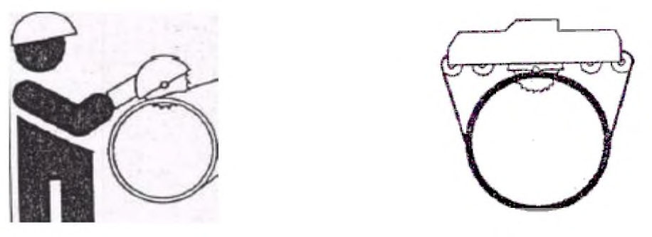
- сохранность труб и защитного наружного покрытия;
- плотное прилегание трубопровода ко дну траншеи;
- проектное положение трубопровода в горизонтальной плоскости.
СП 483.1325800.2020
На рекультивируемых землях после засыпки трубопровода минеральным грунтом проводят его уплотнение, плодородный слой грунта над трубопроводом планируют, при этом грунтовый валик над трубопроводом не делают.
18.4Рекультивация земель
- площадь проведения технической и биологической рекультивации;
- объем снимаемого плодородного слоя почвы;
- место расположения отвала плодородного слоя почвы;
- способы погрузки и вывозки лишнего грунта.
СП 483.1325800.2020 в теплое время года, а работы по его возвращению - только в теплое время года (безморозный период).
19Укладка трубопровода в траншею
19.1Укладка участков трубопровода
Возможен вариант, когда длинномерную плеть, оснащенную поплавками, сплавляют по обводненной траншее или водоему. Затем укладку сплавленной плети трубопровода проводят последовательной отстроповкой поплавков.
19.2Балластировка участков трубопровода
- конкретных инженерно-геологических условий участков трассы;
- вида и характеристики грунтов;
- рельефа местности;
- метода прокладки трубопровода;
- сезона производства работ.
СП 483.1325800.2020 монтаже железобетонных и чугунных кольцевых утяжелителей необходимо применять средства для футеровки трубопроводов.
Футеровку трубы выполняют в месте, где будет крепиться кольцевой утяжелитель.
Трубу кранами-трубоукладчиками перемещают к нижнему полукольцу, поднимают краном-трубоукладчиком верхнее полукольцо и укладывают его на трубу, закрепляют полукольца между собой с помощью болтовых соединений.
После закрепления кольцевых утяжелителей на трубе происходит монтаж трубопровода в плеть.
До закрепления установленных утяжелителей на трубе проверяют значение зазора между футеровочными рейками пояса крепления и полукольцами. В местах, где зазоры составляют более 5 мм, под внутреннюю поверхность полукольца устанавливаются дополнительные рейки соответствующих размеров.
Монтажные операции по установке кольцевых утяжелителей осуществляются с помощью кранов-трубоукладчиков, входящих в состав бригады, занятой подготовкой к протаскиванию и самим процессом протаскивания плети трубопровода.
Монтаж утяжелителей на уложенный в траншею трубопровод рекомендуется выполнять автомобильными кранами с длиной стрелы 10 м или кранамитрубоукладчиками. Для монтажа утяжелителей данного типа применяют траверсы.
- сначала заполняют емкости грунтом, при этом емкость бункерного устройства на 1/3 также должна быть заполнена грунтом;
- отсоединяют грузовые элементы, в результате емкости зависают на рукавах и оставшийся в емкости бункера грунт ссыпается в емкости утяжелителя;
- заполнение грунтом продолжают, сопровождая процесс трамбованием грунта, и заканчивают после заполнения грунтом рукавов;
- размыкают бандажные элементы, снимают рукава емкостей с насадок емкости бункера;
- бункер переставляют на свободное место, освобождая утяжелитель;
- грунт в емкостях распределяют вручную равномерно по площади сечения, рукава емкостей заправляют каждый внутрь между одной из стенок емкости и грунтом;
- загруженные контейнеры складируют на ровной площадке на поддоне или настиле.
- рукава емкостей одевают на насадки бункера и закрепляют бандажными элементами;
- грузовые элементы контейнера привязывают к металлоконструкциям бункера обрезками упаковочного шнура (тесьмы) с возможностью развязывания узлов под нагрузкой.
- использования только минерального грунта без примесей торфа и снега;
- применения комбинированных методов балластировки с навесными железобетонными утяжелителями охватывающего типа или анкерными устройствами.
19.3Изоляция участков трубопровода
Нанесение внутренней изоляции трубопроводов в трассовых условиях (кроме изоляции стыков) не допускается.
20Монтаж и укладка надземных трубопроводов
- продольная надвижка заранее заготовленных плетей на опоры;
- подъем с поверхности строительной полосы на опоры отдельных труб или заранее заготовленных секций с последующим монтажом их между собой.
На сваях должны быть написаны несмываемой краской марка и дата изготовления сваи.
При монтаже кабеля путевого обогрева трубопровода необходимо исключить прямой контакт кабеля и раструбно-замкового соединения труб типа RJ и минимизировать прямое температурное воздействие на соединение типа RJ от системы электроподогрева.
21Подготовка трубопровода к эксплуатации
21.1Общие требования
Подготовка трубопровода к приемке в эксплуатацию включает следующие работы:
- очистка полости и испытание трубопровода;
- монтаж и подключение средств ЭХЗ;
- приемка трубопровода в эксплуатацию.
21.2Очистка полости и испытание трубопровода
Таблица 21.1 Давление воздуха в ресивере для продувки
| DN , мм | Давление в ресивере, МПа (кгс/см² ), не менее | Давление в ресивере, МПа (кгс/см² ), не менее |
|---|---|---|
| DN , мм | для трубопроводов, | для трубопроводов, не |
| DN , мм | очищенных протаскиванием | очищенных протаскиванием |
СП 483.1325800.2020
| очистных устройств | очистных устройств | |
|---|---|---|
| До 250 включ. | 1 (10) | 2 (20) |
| От 300 » 400 | 0,6 (6) | 1,2 (12) |
| » 500 включ. | 0,5 (5) | 1 (10) |
Радиус опасных зон при очистке и испытании трубопроводов воздухом представлен в таблице 21.2.
Таблица 21.2 Опасные зоны при очистке и испытании трубопроводов воздухом
| DN , мм | Радиус опасной зоны в обе стороны от оси трубопровода при очистке полости, м | Радиус опасной зоны в направлении вылета ерша или поршня при очистке полости, м | Радиус опасной зоны в обе стороны от трубопровода при испытании, м |
|---|---|---|---|
| До 300 включ. | 40 | 600 | 100 |
| От 300 до 500 включ. | 60 | 800 | 150 |
- вести наблюдение за закрепленными за ними участками трубопровода;
- не допускать нахождения людей и движения транспортных средств в опасной зоне и на дорогах, закрытых для движения при испытании трубопровода;
- немедленно оповещать руководителя работ обо всех обстоятельствах, препятствующих проведению продувки и испытания или создающих угрозу для людей, животных, сооружений и транспортных средств, находящихся вблизи трубопровода.
Таблица 21.3 Этапы гидравлического испытания
| Наименование участков трубопроводов. | Параметры гидравлического испытания на прочность | Параметры гидравлического испытания на прочность |
|---|---|---|
| Этапы испытания на прочность | Давление, МПа | Продолжитель- ность, ч |
| Переходы через естественные и искусственные преграды, выполненные методом ГНБ | Переходы через естественные и искусственные преграды, выполненные методом ГНБ | Переходы через естественные и искусственные преграды, выполненные методом ГНБ |
| Первый этап - после сборки на площадке перехода целиком или отдельными плетями | 1,5 Р раб | 6 |
| Второй этап - после укладки перехода | 1,5 Р раб | 12 |
| Третий этап - одновременно с прилегающими участками трубопровода, после засыпки | 1,25 Р раб | 12 |
| Переходы через естественные и искусственные преграды, выполненные методом протаскивания трубопровода по дну траншеи | Переходы через естественные и искусственные преграды, выполненные методом протаскивания трубопровода по дну траншеи | Переходы через естественные и искусственные преграды, выполненные методом протаскивания трубопровода по дну траншеи |
| Первый этап - после укладки в проектное положение и частичной присыпки или закрепления раструбных соединений | 1,5 Р раб | 12 |
| Второй этап - одновременно с прилегающими участками трубопровода, после засыпки | 1,25 Р раб | 12 |
| Трубопроводы на полках в горной местности | Трубопроводы на полках в горной местности | Трубопроводы на полках в горной местности |
| Первый этап - после укладки в проектное положение и частичной присыпки или закрепления раструбных соединений | 1,5 Р раб | 12 |
| Второй этап - одновременно с прилегающими участками трубопровода, после засыпки | 1,25 Р раб | 12 |
| Пересечения с подземными и надземными коммуникациями в пределах 100 м по обе стороны пересекаемой коммуникации | Пересечения с подземными и надземными коммуникациями в пределах 100 м по обе стороны пересекаемой коммуникации | Пересечения с подземными и надземными коммуникациями в пределах 100 м по обе стороны пересекаемой коммуникации |
| Первый этап - после укладки в проектное положение и частичной присыпки или закрепления раструбных соединений | 1,5 Р раб | 12 |
| Второй этап - одновременно с прилегающими участками трубопровода, после засыпки | 1,25 Р раб | 12 |
| Трубопроводы, прокладываемые параллельно рекам, каналам, озерам, другим водоемам и водотокам, имеющим рыбохозяйственное значение, а также выше населенных пунктов и промышленных предприятий на расстоянии от них до 300 м | Трубопроводы, прокладываемые параллельно рекам, каналам, озерам, другим водоемам и водотокам, имеющим рыбохозяйственное значение, а также выше населенных пунктов и промышленных предприятий на расстоянии от них до 300 м | Трубопроводы, прокладываемые параллельно рекам, каналам, озерам, другим водоемам и водотокам, имеющим рыбохозяйственное значение, а также выше населенных пунктов и промышленных предприятий на расстоянии от них до 300 м |
| Первый этап - после укладки в проектное положение и частичной присыпки или закрепления раструбных соединений | 1,5 Р раб | 12 |
Окончание таблицы 21.3
| Наименование участков трубопроводов. Этапы испытания на прочность | Параметры гидравлического испытания на прочность | Параметры гидравлического испытания на прочность |
|---|---|---|
| Наименование участков трубопроводов. Этапы испытания на прочность | Давление, МПа | Продолжитель- ность, ч |
| Второй этап - одновременно с прилегающими участками трубопровода, после засыпки | 1,25 Р раб | 12 |
| Трубопроводы на участках подхода к НС, НПС в пределах 250 м от ограждения | Трубопроводы на участках подхода к НС, НПС в пределах 250 м от ограждения | Трубопроводы на участках подхода к НС, НПС в пределах 250 м от ограждения |
| Первый этап - после укладки в проектное положение и частичной присыпки или закрепления раструбных соединений | 1,5 Р раб | 12 |
| Второй этап - одновременно с прилегающими участками трубопровода, после засыпки | 1,25 Р раб | 12 |
| Участки трубопроводов, примыкающие к площадкам скважин на расстоянии 150 м от ограждения | Участки трубопроводов, примыкающие к площадкам скважин на расстоянии 150 м от ограждения | Участки трубопроводов, примыкающие к площадкам скважин на расстоянии 150 м от ограждения |
| Первый этап - после укладки в проектное положение и частичной присыпки или закрепления раструбных соединений | 1,5 Р раб | 12 |
| Второй этап - одновременно с прилегающими участками трубопровода, после засыпки | 1,25 Р раб | 12 |
| Трубопроводы на длине 250 м от линейной запорной арматуры и гребенок подводных переходов | Трубопроводы на длине 250 м от линейной запорной арматуры и гребенок подводных переходов | Трубопроводы на длине 250 м от линейной запорной арматуры и гребенок подводных переходов |
| Первый этап - после укладки в проектное положение и частичной присыпки или закрепления раструбных соединений | 1,5 Р раб | 12 |
| Второй этап - одновременно с прилегающими участками трубопровода, после засыпки | 1,25 Р раб | 12 |
| Трубопроводы ввода - вывода, транзитные трубопроводы | Трубопроводы ввода - вывода, транзитные трубопроводы | Трубопроводы ввода - вывода, транзитные трубопроводы |
| Первый этап - после укладки в проектное положение и частичной присыпки или закрепления раструбных соединений | 1,5 Р раб | 12 |
| Второй этап - одновременно с прилегающими участками трубопровода, после засыпки | 1,25 Р раб | 12 |
| Трубопроводы обвязки куста скважин | Трубопроводы обвязки куста скважин | Трубопроводы обвязки куста скважин |
| Первый этап - после укладки в проектное положение и частичной присыпки или закрепления раструбных соединений | 1,5 Р раб | 12 |
| Второй этап - одновременно с прилегающими участками трубопровода, после засыпки | 1,25 Р раб | 12 |
| Трубопроводы, собранные на опорах | Трубопроводы, собранные на опорах | Трубопроводы, собранные на опорах |
| Первый этап - после крепления на опорах или закрепления раструбных соединений | 1,5 Р раб | 12 |
| Второй этап - одновременно с прилегающими участками трубопровода, после полного монтажа трубопровода | 1,25 Р раб | 12 |
| Трубопроводы, собранные в траншеи | Трубопроводы, собранные в траншеи | Трубопроводы, собранные в траншеи |
| В один этап одновременно со всем трубопроводом, после засыпки | 1,25 Р раб | 12 |
Таблица 21.4 Опасные зоны при гидравлических испытаниях трубопроводов
| Давление испытания 8,25 МПа. Радиус опасной зоны, м | Давление испытания 8,25 МПа. Радиус опасной зоны, м | Давление испытания свыше 8,25 МПа. Радиус опасной зоны, м | Давление испытания свыше 8,25 МПа. Радиус опасной зоны, м | |
|---|---|---|---|---|
| DN , мм | в обе стороны от оси трубопровода | в направлении отрыва заглушки от торца трубопровода | в обе стороны от оси трубопровода | в направлении отрыва заглушки от торца трубопровода |
| От 100 до 300 включ. | 75 | 600 | 100 | 900 |
| Свыше 300 до 500 включ. | 75 | 800 | 100 | 1200 |
СП 483.1325800.2020
- закрепления трубопровода на опорах;
- заделки стыков (противокоррозионная и теплоизоляция);
- установки арматуры и приборов;
- удаления персонала и вывоза техники из опасной зоны на расстояния, равные установленным от надземного трубопровода до строений;
- обеспечения постоянной или временной связи.
- визуальным;
- акустическим;
- по запаху;
- по падению давления на испытуемом участке.
Таблица 21.5 Заводское испытательное гидравлическое давление труб
| DN , мм | Максимальное допустимое рабочее давление трубопровода, МПа, не более | Заводское испытательное гидравлическое давление, МПа, не менее |
|---|---|---|
| От 80 до 200 включ. | 6,4 | 9,6 |
| 250 | 5,6 | 8,4 |
| 300 | 5,4 | 8,1 |
| 350 | 5,0 | 7,5 |
| От 400 до 500 включ. | 4,0 | 6,0 |
21.3Монтаж средств электрохимической защиты
Монтаж токоотвода от труб ВЧШГ необходимо выполнять в виде стальных хомутов из полосовой стали шириной 40 мм.
- поверхность чугунной трубы обрабатывают шлифовальной машинкой до металлического блеска по всей окружности на ширину от 50 до 60 мм;
- очищают до металлического блеска внутреннюю поверхность стального хомута;
- на очищенную поверхность трубы шпателем наносят универсальную высокоэлектропроводную смазку толщиной слоя от 2 до 3 мм и шириной от 60 до 70 мм;
- устанавливают хомут и затягивают его до контакта с поверхностью трубы. Допускается постукивать молотком для обеспечения плотного контакта;
- поверхность хомута и трубы по обе стороны от хомута на расстоянии не менее
50 мм защищают изоляцией усиленного типа по ГОСТ 9.602.
21.4Приемка трубопроводов в эксплуатацию
- комплект рабочих чертежей на строительство предъявляемого к приемке объекта с надписями, сделанными лицами, ответственными за производство строительно-монтажных работ, о соответствии выполненных работ этим чертежам или внесенным в них проектной организацией изменениям;
- документы о качестве предприятий-изготовителей (их копии, извлечения из них, заверенные лицом, ответственным за строительство объекта) на трубы, материалы и детали;
- акт разбивки и передачи трассы (площадки) для трубопроводов;
- протоколы проверки качества сварных стыков (для стальных участков и элементов трубопроводов);
- копии аттестационных документов исполнителей;
- журнал сварки с указанием температуры окружающего воздуха на момент производства сварочных работ (для стальных участков и элементов трубопроводов);
- акты освидетельствования скрытых работ (приложение Ж);
- акты испытаний трубопроводов на прочность и герметичность;
- журнал учета работ (по требованию заказчика);
- другие необходимые документы.
Если приемочной комиссии предъявляются для приемки одновременно несколько трубопроводов, то техническая документация может быть оформлена, как для одного объекта, с оформлением актов освидетельствования скрытых работ для каждого трубопровода.
К паспорту должна быть приложена исполнительная схема трубопровода.
22Эксплуатация промысловых трубопроводов
22.1Общие требования
Эксплуатация, техническое обслуживание трубопровода, ремонт в процессе его эксплуатации должны осуществляться в соответствии с требованиями, изложенными в ГОСТ 18322, СП 284.1325800, с учетом свойств и особенностей труб из ВЧШГ и соединений (технологии ремонта, ЭХЗ, повышенные требования к сварочным работам) с раструбно-замковым соединением типа RJ.
В соответствии с требованиями ГОСТ 18322 эксплуатация трубопровода включает следующие работы:
- техническое обслуживание -комплекс операций по поддержанию работоспособности или исправности трубопровода при использовании по назначению;
- ремонт -комплекс операций по восстановлению исправности или работоспособности трубопровода, восстановления ресурса трубопровода и (или) его составных частей;
- капитальный ремонт - ремонт, выполняемый для восстановления исправности, полного или близкого к полному восстановлению ресурса трубопровода заменой или восстановлением любых его частей, включая базовые;
- средний ремонт - ремонт, выполняемый для восстановления исправности и частичного восстановления ресурса трубопровода заменой или восстановлением составных частей ограниченной номенклатуры и контролем технического состояния составных частей, выполняемым в объеме, установленном нормативными документами и технической документацией;
- текущий ремонт - ремонт, выполняемый для обеспечения или восстановления работоспособности трубопровода и состоящий в замене и (или) восстановлении отдельных частей.
При эксплуатации трубопроводов применяют техническое обслуживание с периодическим контролем. Контроль технического состояния выполняется с периодичностью и в объемах, установленных в нормативных документах или технической документации, или эксплуатационной документации.
У персонала, обслуживающего трубопроводы из ВЧШГ, должны быть в наличии схемы трубопроводов с указанием материала и диаметра труб, расположения арматуры и соединений типа RJ, паспорт трубопроводов, а также настоящий свод правил.
22.2Обозначение трасс промысловых трубопроводов на местности
- наименование трубопровода с указанием знака «ВЧШГ»;
- местоположение оси трубопровода от основания знака;
- привязка знака к трассе (км);
- размеры охранной зоны трубопровода;
- телефоны и адрес организации, эксплуатирующей данный участок трубопровода.
- на пересечениях с автомобильными дорогами категорий I, II, III;
- переходах через крупные овраги при ширине более 50 м;
- переходах через каналы;
- переходах через реки с шириной зеркала воды в межень более 10 м.
22.3Охранные зоны трубопроводов
22.4Уход за трассой трубопроводов
Выполнение данных видов работ проводится в установленном порядке в соответствии с требованиями действующих нормативных документов, технической документации и внутренних документов эксплуатирующей организации.
СП 483.1325800.2020 свода правил.
Фактическая глубина заложения трубопровода должна контролироваться:
- визуально (наличие оголений, размывов) - два раза в год (весной, осенью);
- трассоискателем или шурфованием - один раз в 5 лет.
Для защиты от размыва траншеи и оголения трубопровода необходимо предусматривать водостоки, крепление размываемых берегов водных преград.
Растущие овраги и промоины, расположенные в охранной зоне, которые при своем развитии могут достичь трубопровода, должны укрепляться.
22.5Техническое обслуживание трубопроводов
Виды работ, выполняемых при техническом обслуживании трубопровода, приведены в таблице 22.1.
Сроки выполнения работ по техническому обслуживанию определяются графиком, составленным в соответствии с требованиями действующих нормативных документов, технической документации и внутренних документов эксплуатирующей организации и утвержденным техническим руководителем эксплуатирующей организации.
Таблица 22.1 Основные работы при техническом обслуживании трубопровода
из ВЧШГ
| Объект | Наименование работ | Сроки выполнения |
|---|---|---|
| Охранная зона трубопровода | Патрулирование трассы | Согласно графику |
| Охранная зона трубопровода | Отвод ливневых и паводковых вод в целях предупреждения размыва трассы трубопро- вода | По мере необходимости |
| Охранная зона трубопровода | Расчистка трассы трубопровода от древесно- кустарниковой растительности и сорной травы | По мере необходимости |
| Трубопровод | Диагностирование | Согласно графику |
| Трубопровод | Осмотр надземных участков трубопровода, узлов арматуры, манометров, камер пуска и приема и других сооружений | При патрулировании |
| Трубопровод | Устранение незначительных размывов, оголений трубопровода | В течение недели с момента обнаружения |
| Узлы задвижек | Осмотр, устранение недостатков, очистка от грязи | При патрулировании |
| Узлы задвижек | Окраска, скос сорной растительности, уборка сухостоя | По мере необходимости |
| Узлы задвижек | Подтяжка и набивка сальников | При необходимости |
| Камерызапускаи приема средств очистки и диагностики | Осмотр, устранение выявленных недостатков | Один раз в квартал, дополнительно перед проведением очистки |
| Камерызапускаи приема средств очистки и диагностики | Окраска, скос сорной растительности, уборка сухостоя | По мере необходимости |
| Подводные переходы | Проверка состояния берегоукрепления и водоотводных сооружений, исправление незначительных дефектов; обследование подводного участка (кроме переходов, построенных методом ГНБ): наличие, величина и координаты оголений, провисов трубопроводов; состояние балластировки и изоляции на размытых участках трубопроводов | Один раз в год, дополнительно после аномальных паводков |
| Переходы через железные и автомобильные дороги | Осмотр, выявление просадки грунта и проверка целостности дорожного полотна | Два или четыре раза в год в зависимости от категории дороги |
| Воздушные переходы | Осмотр, исправление незначительных дефектов | При патрулировании |
| Линейные ко- лодцы, ограждения и фундаменты под запорную арматуру | Осмотр, очистка колодцев и ограждений от мусора, грязи, снега, растительности | При патрулировании |
| Средства ЭХЗ | Осмотр элементов ЭХЗ, измерение защитного потенциала на контрольных выводах КИП | Один раз в месяц |
| Опознавательные знаки | Осмотр и исправление повреждений | При патрулировании |
22.6Диагностика трубопроводов
Первое диагностирование вновь введенных в эксплуатацию трубопроводов проводят через год после начала эксплуатации.
По результатам диагностирования определяются:
- техническое состояние трубопровода, в том числе дефектные участки, характер дефектов, их размеры, причины появления; динамика развития дефектов, состояние изоляционного покрытия, состояние системы ЭХЗ;
- возможность и условия дальнейшей эксплуатации трубопровода, в том числе допустимые параметры эксплуатации трубопровода; компенсирующие мероприятия по торможению развития дефектов и ликвидации опасных из них, восстановлению системы ЭХЗ;
- остаточный ресурс трубопровода.
- проверяется состояние подъездных дорог к камерам запуска и приема средств очистки и диагностики;
- проверяется исправность камер запуска и приема средств очистки и диагностики;
- проверяется отсутствие жидкости в дренажных емкостях;
- проверяется отсутствие утечек в трубопроводе-обвязке камер запуска и приема средств очистки и диагностики;
- проверяется работоспособность линейной арматуры, обеспечивается ее полное открытие во время движения ВИС;
- проверяется наличие устойчивой связи с диспетчерской службой;
- определяются действия при возникновении внештатных ситуаций.
Трубопровод может быть подвергнут внутритрубной инспекции, если минимальное проходное сечение трубопровода по результатам пропуска снаряда-калибра соответствует техническим требованиям на ВИС (как правило, не менее 85 %).
- свидетельства об аттестации лаборатории на проведение данного вида работ;
- документа о подтверждении соответствия применяемого ВИС стандартам безопасности или свидетельства о взрывозащищенности электрооборудования на применяемые приборы;
- разрешения Федеральной службы по экологическому, технологическому и атомному надзору на применение ВИС в нефтяной и газовой промышленности;
- паспорта ВИС;
- протокола сдачи экзаменов по работе с комплексом ВИС лицами, участвующими в обследовании.
22.7Периодическая и преддиагностическая очистка трубопроводов
Механические способы очистки:
- повышение скорости движения перекачиваемой жидкости;
- гидропневматический;
- пропуск гелевых скребков;
- пропуск механических очистных устройств.
Применение металлических щеток при наличии внутреннего покрытия не допускается.
- организацию работ по пропуску очистных устройств;
- технологию пуска и приема очистных устройств;
- методы и средства контроля за прохождением очистных устройств;
- действия при возможных остановках очистных устройств;
- требования безопасности и противопожарные мероприятия;
- способы утилизации вынесенных при очистке загрязнений.
- документ, подтверждающий соответствие нормативным документам на очистные устройства;
- разрешение Федеральной службы по экологическому, технологическому и атомному надзору на применение;
- заключение о взрывобезопасности;
- паспорт;
- руководство по эксплуатации.
- состояния подъездных дорог к камерам запуска и приема;
- исправности и готовности камер запуска и приема;
- отсутствия жидкости в дренажных емкостях;
- исправности линейных задвижек (обеспечивается их полное открытие во время движения очистного устройства);
- исправности манометров на линейной части трубопровода;
- нахождения сигнализаторов в рабочем положении;
- состояния очистного устройства и наличия документов к нему.
Лупинги, резервные нитки и перемычки между параллельными трубопроводами должны быть отключены от очищаемого трубопровода.
После извлечения поролонового поршня из камеры приема проводится анализ его состояния, по результатам которого принимается решение о возможности пропуска основного очистного устройства.
Пропуск очистных устройств проводится при скоростях потока не ниже 0,3 м/с (более 1 км/ч).
Переключение технологических линий при запуске, пропуске и приеме очистных устройств выполняется персоналом только по указанию руководителя работ.
- проведение любых ремонтно-строительных работ в охранной зоне трубопровода;
- присутствие на площадках запуска и приема очистных устройств, задвижек трубопровода лиц, не участвующих в проведении очистных работ;
- переезд трассы трубопровода транспортом и механизмами.
В качестве теплоносителя применяют нефть, воду или водный раствор химических реагентов (при комбинированном методе).
22.8Испытания трубопроводов в процессе эксплуатации
- после капитального ремонта с применением новых труб;
- после реконструкции;
- в случаях, когда трубопроводы не могут быть подвергнуты другим видам диагностических обследований.
Выкидные линии скважин и водоводы высокого давления испытывают в течение 6 ч.
Нефтесборные коллекторы, внутрипромысловые напорные нефтепроводы, нефтепроводы товарной нефти, водоводы низкого давления испытывают в течение 12 ч.
22.9Защита трубопроводов от коррозии. Коррозионный мониторинг
- технологических методов;
СП 483.1325800.2020
- химических методов;
- ЭХЗ;
- защитных покрытий.
- поддержание в системе нефтесборных трубопроводов гидродинамического режима движения продукции скважин, препятствующего выпадению свободной воды из нефтяного потока, путем подбора оптимальных диаметров нефтесборных коллекторов;
- сброс избыточного количества свободной воды на кустах скважин для ее утилизации путем закачки в пласт;
- очистка трубопроводов от механических примесей (в том числе продуктов коррозии).
- совместный сбор продукции скважин, содержащей и не содержащей сероводород (если не проводится нейтрализация сероводорода);
- смешивание пластовой воды, содержащей сероводород, с водой, содержащей ионы железа (если не проводится нейтрализация сероводорода), кроме тех случаев, когда их совместная подготовка предусмотрена проектом;
- смешивание пластовых вод, содержащих сероводород, и сточных вод, содержащих кислород.
- контроль состава и степени агрессивности транспортируемой среды, изучение причин и механизмов коррозии;
- обоснование методов защиты трубопроводов от коррозии;
- контроль эффективности проводимых мероприятий по защите от коррозии.
- гравиметрическим;
- электросопротивления;
- линейной поляризации.
Кроме того, в трубопровод устанавливаются наземные и подземные вставки (контрольные катушки) не менее 1 шт. на один трубопровод с интервалом не более 5 км. При извлечении контрольной катушки определяют:
- наличие отложений на стенке вставки;
- наличие эрозионного и коррозионного износов на внутренней поверхности трубы.
По результатам сравнения скоростей коррозии проводят корректировку дозировки ингибитора.
23Ремонт трубопроводов и арматуры
23.1Общие требования
Для своевременного ремонта трубопроводов эксплуатирующая организация должна иметь определенный запас труб и изделий (аварийный запас). Аварийный запас включает:
- трубы в количестве 1 % протяженности трубопроводов, но не менее двух труб;
- отводы, тройники, концевые элементы -не менее 10 % их количества, установленного в трубопроводах, но не менее одного фитинга каждого вида или конструкции;
- свертная муфта, изготовленная согласно ГОСТ Р 57430, - 1 шт. на 1 км трубопровода;
- компенсационный двойной раструб, изготовленный согласно ГОСТ Р 57430, 1 шт. на 1 км трубопровода;
- патрубок фланец - раструб, изготовленный согласно ГОСТ Р 57430, - 2 шт. на
1 км трубопровода;
- надвижная муфта, изготовленная согласно ГОСТ Р 57430, - 2 шт. на 1 км трубопровода;
- патрубок раструб - гладкий конец с переходом на сталь, изготовленный согласно ГОСТ Р 57430, - 2 шт. на 1 км трубопровода;
- электроды для сварки чугуна на никелевой или железоникелевой основе.
Аварийный запас постоянно обновляется из новых поступлений, а хранившиеся трубы и изделия передаются на монтаж трубопровода.
Ремонт участков трубопроводов по характеру выполняемых работ подразделяется на текущий, капитальный и аварийный.
Текущий ремонт осуществляется в процессе эксплуатации трубопровода и заключается в своевременно проводимых работах по предупреждению преждевременного износа линейной части и сооружений трубопровода, по устранению мелких повреждений и неисправностей.
Капитальный ремонт проводится при достижении предельных значений износа линейной части и сооружений трубопровода и связан с полной разборкой, восстановлением или заменой изношенных, неисправных элементов трубопровода.
Аварийный ремонт проводят в целях ликвидации отказов, вызванных нарушением герметичности трубопровода, его закупоркой либо неисправностью запорно-регулирующей арматуры.
Объемы ремонтных работ на трубопроводах и сроки их выполнения определяются по результатам осмотров, диагностических обследований, по прогнозируемым режимам транспортировки, установленным рабочим давлениям в соответствии с местными условиями и требованиями безопасности.
Руководитель ремонтных работ несет ответственность за организацию работ и обеспечение необходимым оборудованием, механизмами, инструментом, приспособлениями, КИПиА, материалами, транспортными средствами, двусторонней связью, средствами индивидуальной и коллективной защиты, противопожарными и спасательными средствами, знаками безопасности и плакатами, а также средствами оказания доврачебной помощи.
СП 483.1325800.2020
Работы, связанные с возможным выделением взрывоопасных веществ в количестве, способном создать взрывоопасную концентрацию, необходимо выполнять с применением специального оборудования, инструмента, КИПиА во взрывозащищенном исполнении, соответствующем категории и группе взрывоопасной смеси, а также инструмента и приспособлений, не дающих искр.
На используемые для выполнения ремонтных работ материалы и изделия должны быть документы (паспорта, документы, подтверждающие соответствие нормативным документам), удостоверяющие их качество и соответствие условиям применения.
23.2Текущий ремонт
23.2.3 Текущий ремонт подразделяется:
- на профилактический, объем и сроки выполнения которого планируются заранее;
- непредвиденный, направленный на устранение выявленных в процессе эксплуатации неисправностей и выполняемый в срочном порядке.
Таблица 23.1 Виды работ, выполняемых при текущем ремонте трубопровода
| Объект | Наименование работ |
|---|---|
| На всех объектах | Все виды работ по техническому обслуживанию (см. 22.5) |
| Охранная зона трубопровода | Очистка от древесной и кустарниковой поросли. Устройство и очистка водоотводных канав. Ликвидация мелких повреждений земляного покрова над трубопроводом |
| Объект | Наименование работ |
|---|---|
| Линейная часть трубопровода | Замена дефектных участков трубопровода. Исправление противокоррозионной изоляции в местах выхода трубопровода из земли. Ремонт изоляции после шурфовых обследований. Устранение размывов, оголений трубопровода. Проверка фланцевых соединений, крепежа, уплотнительных колец. Очистка внутренней полости трубопровода от АСПО, механических примесей, водных скоплений. Окраска надземных участков трубопроводов |
| Узлы задвижек | Устранение мелких повреждений, набивка сальников, смазка, покраска |
| Камеры запуска и приема средств очистки и диагностики | Замена уплотняющего элемента концевого затвора, опорожнение дренажной емкости, покраска |
| Средства ЭХЗ | Текущий ремонт согласно внутреннему документу, принятому в эксплуатирующей организации |
| Подводные переходы | Засыпка оголенных участков, ремонт берегоукрепления, ремонт указательных знаков |
| Переходы через железные и автомобильные дороги | Ремонт полотна дороги, уплотнений на концах защитного кожуха |
| Воздушные переходы | Ремонт водоотводных сооружений, ликвидация размывов. Нивелировка трубопровода, проверка опор, траверс. Окраска трубопроводов |
| Линейные колодцы, ограждения и фундаменты запорной арматуры | Ремонт колодцев, ограждений и фундаментов запорной арматуры |
| Опознавательные знаки | Ремонт или замена столбиков и указателей, покраска и восстановление надписей |
23.3Капитальный ремонт
Участок трубопровода, подлежащий ремонту, должен быть отсечен задвижками и заглушками от других участков трубопровода, перемычек и лупингов, аппаратов и оборудования.
- подготовительные;
- погрузочно-разгрузочные;
- транспортные;
- земляные;
- сборочно-монтажные (на участках из ВЧШГ) и сварочно-монтажные (на стальных элементах трубопровода);
- изоляционные и укладочные;
- контроль качества выполненных работ.
Таблица 23.2 -Виды работ, выполняемых при капитальном ремонте трубопровода
| Объект | Наименование работ |
|---|---|
| На всех объектах | Все виды работы по текущему ремонту |
| Линейная часть трубопровода | Вскрытие траншей подземных трубопроводов, осмотр и частичная замена изоляции. Ремонт или замена дефектных участков. Замена фланцевых соединений, кронштейнов, опор и хомутов с последующим креплением к ним трубопроводов. Продувка или промывка, испытание трубопровода на прочность и герметичность |
| Узлы задвижек | Замена дефектных деталей и испытание. Электрификация задвижек |
| Подводные переходы | Берегоукрепительные и дноукрепительные работы |
| Переходы через железные и автомобильные дороги | Замена защитных кожухов |
| Линейные колодцы, ограждения и фундаменты узлов запорной арматуры | Ремонт колодцев, ограждений и фундаментов запорной арматуры |
| Средства ЭХЗ | Требования к выполнению объемов работ по капитальному ремонту приведены в [22] или другой документации, принятой в организации. |
23.3.5 При проведении подготовительных работ необходимо:
- определить положение трубопровода с помощью трассоискателя;
- результаты измерения глубины нанести на вешки, которые следует забить по оси трубопровода через каждые 50 м на прямолинейных участках, а на участках с малой глубиной залегания или сильно пересеченным микрорельефом - через 25 м;
- провести планировку полосы ремонтируемого трубопровода бульдозером.
При проведении вскрышных работ ось параллельного трубопровода должна быть отмечена вешками, а при подходе к пересечению трубопроводов механизированная выемка грунта должна быть прекращена на расстоянии не менее 1 м до оси пересекаемого трубопровода. Ремонтные работы должны выполняться в присутствии представителя эксплуатирующей организации параллельной или пересекаемой коммуникации.
24Строительство участков трубопроводов на переходах
24.1Переходы через дороги участков трубопроводов
В зависимости от интенсивности движения, категории дорог, параметров трубопровода, грунтовых условий и требований технических условий эксплуатирующих организаций укладка участков трубопроводов может осуществляться следующими способами:
- открытым (траншейным), при котором защитный футляр укладывается в траншею, устроенную в насыпи дороги, с временным перекрытием движения транспорта или без перекрытия движения с устройством объезда; затем рабочая трубная плеть протаскивается через защитный футляр, укладка защитного футляра может проводиться совместно с трубной плетью с бермы траншеи;
- закрытым, без перекрытия движения транспорта; при этом для укладки защитного футляра через дороги применяются методы бестраншейной проходки.
При наличии неустойчивых грунтов необходимо по мере разработки траншеи ее стенки крепить досками или инвентарными щитами.
24.2Подводные переходы участков трубопроводов
- открытым способом - с укладкой участков трубопроводов в подводные и береговые траншеи;
- закрытым способом - с протаскиванием трубопроводов в наклонные скважины, выполненные методом ГНБ.
- передача-приемка створов подводных переходов;
- установка и сохранение опорной геодезической сети на весь период строительства переходов;
- установка временных водомерных постов;
- строительство временных сооружений производственного, бытового и хозяйственного назначения;
- строительство подъездных путей и причальных сооружений к переходам с созданием служб по их поддержанию в рабочем состоянии;
- промеры глубин водоема и определение соответствия фактического профиля дна проектному;
- обследование дна реки (водоема) в границах проектной ширины подводной траншеи (поверху) для выявления случайных препятствий, удаление их в случае обнаружения.
Разработка и засыпка траншей на береговых участках должна выполняться
СП 483.1325800.2020 сухопутной землеройной строительной техникой в соответствии с предварительной разбивкой и обозначением вешками границ срезки грунта и расположения отвалов в строгом соответствии с проектом производства работ.
Установка кольцевых балластирующих грузов на раструбно-замковое соединение типа RJ не допускается.
24.3Переходы участков трубопроводов методом горизонтального направленного бурения
- бурение пилотной скважины по заданной проектом траектории;
- последовательное расширение скважины;
- протаскивание участка трубопровода.
Трасса проектируемого участка трубопровода бестраншейной прокладки методом ГНБ может быть криволинейного очертания как в плане, так и в профиле в пределах допустимого радиуса изгиба буровых штанг.
Минимальная глубина заложения труб из ВЧШГ из условия прочности трубопровода ограничена минимальным расстоянием от поверхности земли до шелыги прокладываемого трубопровода в устойчивых грунтах не менее двух диаметров трубопровода, в неустойчивых грунтах - не менее трех диаметров трубопровода, но в любом случае должна быть не менее глубины промерзания грунтов и соответствовать требованиям действующих нормативных документов и технической документации. Максимальная глубина заложения трубопровода, уложенного методом ГНБ, должна быть не более 20 м в нижней точки.
Радиусы кривизны трассы (скважины) должны быть не менее значений, указанных в таблице 24.1 (с учетом данных таблицы 6.4).
Таблица 24.1 Параметры трубопроводов с соединениями типа RJ при протаскивании в скважину
| DN ,мм | Максимально допустимый угол поворота оси труб в соединении, градус | Максимальное тяговое усилие, кН | Минимальнодопустимый радиус закругления трубопровода при длинетруб6м,м |
|---|---|---|---|
| 80 | 5 | 70 | 69 |
| 100 | 5 | 87 | 69 |
| 125 | 5 | 100 | 69 |
| 150 | 5 | 136 | 69 |
| 200 | 4 | 201 | 86 |
| 250 | 4 | 270 | 86 |
| 300 | 4 | 340 | 86 |
| 350 | 3 | 430 | 115 |
| 400 | 3 | 510 | 115 |
| 500 | 3 | 670 | 115 |
- внешние нагрузки от действия грунта, собственный вес трубы с продуктом перекачки;
- внутреннее давление жидкой среды;
- осевые нагрузки при протаскивании участка трубопровода в скважину.
- 1) среднее давление грунта, которое определяется по формуле
где h ср - глубина трубопровода по оси, м; γ гр - удельный вес грунта в естественном состоянии, Н/м³ ;
- 2) поперечное давление грунта сверху q гр, которое определяется с учетом возможного образования свода обрушения в следующем порядке:
- определяют глубину трубопровода по оси h ср и внутренний угол трения грунта φтр;
- вычисляют величину поперечного давления грунта сверху по формуле
- выполняют расчеты:
- определяют поперечное давление грунта как меньшее из двух величин:
Допустимые осевые нагрузки трубопроводов с соединениями типа RJ при осевом нагружении Q o с приведены в таблице 24.2.
При этом коэффициенты запаса прочности, равные отношению Q o с/ Q м, находятся в пределах 2,0-3,5 ( Q м - усилие протаскивания, развиваемое машинами ГНБ).
Таблица 24.2 Допустимые осевые нагрузки трубопроводов с соединениями типа RJ
| DN ,мм | 80 | 100 | 125 | 150 | 200 | 250 | 300 | 350 | 400 | 500 |
|---|---|---|---|---|---|---|---|---|---|---|
| Q o с ,кН | 240 | 260 | 300 | 380 | 580 | 720 | 860 | 940 | 1020 | 1180 |
- проводится контроль исправности и работоспособности локационной системы;
- датчики бурильной головки выбираются в соответствии с проектной глубиной бурения и необходимой точностью прокладки трубопровода;
- подготовляются место стоянки буровой установки с укладкой матов заземления и место приема выхода бурильной головки в заданной проектом точке на поверхности с устройством соответствующих приямков;
- разрабатываются проекты производства работ, технологические карты и инструкции по применению комплекта бурового оборудования;
- после завершения работ по прокладке трубопровода строительная площадка освобождается от временных сооружений и благоустраивается в соответствии с проектом.
Сборка труб с раструбными соединениями типа RJ проводят в соответствии с требованиями раздела 15.
Таблица 24.3 Диаметры пилотных скважин
| DN ,мм | 80 | 100 | 125 | 150 | 200 | 250 | 300 | 400 | 500 |
|---|---|---|---|---|---|---|---|---|---|
| DM ,мм | 210 | 230 | 270 | 300 | 380 | 450 | 520 | 670 | 800 |
Расстояние между стартовым и приемным котлованами составляет от 300 до 400 м.
В зависимости от расчетного диаметра и длины участка бестраншейной прокладки выбирают модель установки ГНБ и ее рабочие характеристики.
К переднему концу плети (гладкому концу первой трубы) крепится приспособление для протаскивания труб с воспринимающим тяговое усилие вертлюгом и риммером. Вертлюг вращается с буровой нитью и риммером и в то же время не передает вращательное движение на трубопровод. Таким образом, буровая установка затягивает в скважину плеть протягиваемого трубопровода по проектной траектории.
Допустимые тяговые усилия протяжки плети труб указаны в таблице 24.1 в зависимости от диаметра труб.
Рисунок 24.1 - Приспособление для протаскивания трубопровода в скважину
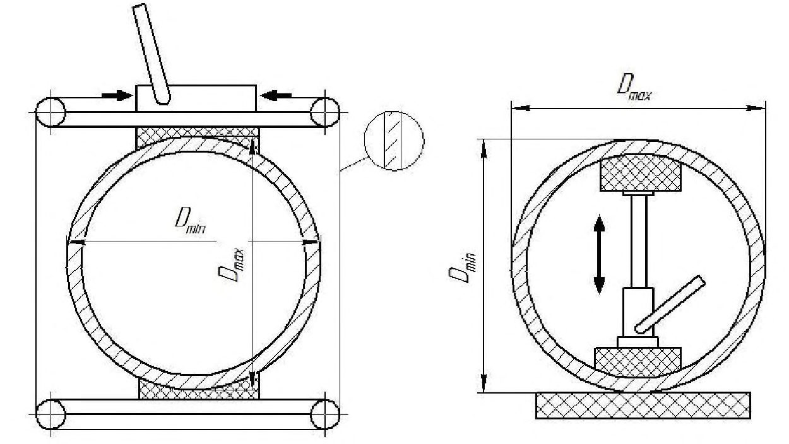
- смазка образующейся скважины для уменьшения трения между буровой головкой и стенкой скважины;
- укрепление скважины в рыхлой или мягкой почве за счет создания фильтра с низкой водопроницаемостью и положительного гидравлического давления на стенки скважины, предотвращение обвалов;
- предотвращение образования пластовых жидкостей (например, грунтовых вод) и попадания их в скважину;
- удаление отходов бурения;
- увлажнение режущей головки во время бурения;
- охлаждение инструмента бурения скважин.
25Консервация промысловых трубопроводов
- технологическую схему трубопровода;
- данные о диаметрах и толщинах стенок;
- продольный профиль трассы;
- данные об аварийности из-за внутренней коррозии;
- планируемый срок консервации;
- оценку необходимой защитной способности химических реагентов;
- результаты выбора эффективных химических реагентов на основании лабораторных испытаний с указанием основных физико-химических свойств этих реагентов, нормативных документов или технических условий на них;
- расчет необходимого количества реагентов и технологию их применения;
- инструкцию по техническому обслуживанию законсервированных трубопроводов;
- порядок расконсервации и ввода в эксплуатацию;
- раздел по технике безопасности и охране окружающей среды при выполнении работ по консервации.
СП 483.1325800.2020 трубопроводов и, в случае неблагоприятных результатов, спроектировать и установить средства ЭХЗ.
Для предотвращения утечек консерванта трубопровод должен быть отсечен от остальной системы трубопроводов концевыми заглушками. Часть консерванта, определяемая расчетом, должна быть удалена из трубопровода перед установкой концевых заглушек для предотвращения разрушения его частей за счет термического расширения консерванта при изменении его температуры. Арматура, установленная на трубопроводе, должна быть приоткрыта на 1/4-1/2 оборота штурвала для обеспечения выравнивания давления в различных частях трубопровода путем перетока жидкости при ее неравномерном нагревании в трубопроводе.
При изменении назначения и режима эксплуатации трубопровода определяют новые условия его испытания и приемки в эксплуатацию.
26Отбраковка и демонтаж участков трубопроводов
где δотб - толщина стенки трубы (или детали трубопровода), при которой она должна быть изъята из эксплуатации, м; n - коэффициент перегрузки по рабочему давлению, равный 1,2;
Р - рабочее давление транспортируемой жидкой среды в трубопроводе, МПа; α - коэффициент несущей способности; α = 1 для труб, конических переходов, эллиптических заглушек; α = 1,3 для гладких и сварных отводов при отношении радиуса изгиба трубы ρ к наружному диаметру D н, равном 1; α = 1,15 при ρ / D н =1,5; α = 1,0 при ρ / D н = 2,0 и более;
D н - наружный диаметр трубы или детали трубопровода, м;
R 1 -расчетное сопротивление материала труб и деталей, МПа, определяемое по формуле
здесь 𝑅1 н - нормативное сопротивление, равное наименьшему значению временного сопротивления разрыву материала труб, принимаемое по стандартам или техническим условиям на соответствующие виды труб, МПа (для труб из ВЧШГ 𝑅1 н = 420 МПа); m 1 -коэффициент условий работы материала труб при разрыве, равный 0,8; m 2 коэффициент условий работы трубопровода, который принимают в зависимости от транспортируемой среды: для токсичных, горючих, взрывоопасных и сжиженных газов - 0,6; для инертных газов (азот, воздух и т. п.) или токсичных, взрывоопасных и горючих жидкостей - 0,75; для инертных жидкостей - 0,9; k 1 -коэффициент однородности материала труб, для труб из ВЧШГ принимают k 1 = 0,6.
Рассчитанная толщина стенки не может быть меньше указанной в таблице 26.1.
СП 483.1325800.2020
Таблица 26.1 Отбраковочные значения толщины стенки труб из ВЧШГ
| DN ,мм | 80 | 100 | 125 | 200 | 250 | 300 | 350 | 400 | 500 |
|---|---|---|---|---|---|---|---|---|---|
| Наименьшая допустимая толщина стенки трубопровода,мм | 2,0 | 2,0 | 2,5 | 2,5 | 3,0 | 3,0 | 3,5 | 4,0 | 4,0 |
- в результате коррозии или эрозии за время работы трубопровода до очередной ревизии произойдет его разгерметизация (свищ, трещина);
- во время ревизии обнаружены дефекты в стенке трубопровода, наличие которых по условиям прочности требует замены элемента трубопровода;
- механические свойства материала изменились и не удовлетворяют требованиям проекта;
- на соединениях труб и деталей обнаружены неисправимые дефекты.
- уплотнительные элементы арматуры износились настолько, что не обеспечивают ведения технологического процесса, и отремонтировать или заменить их невозможно;
- толщина стенки корпуса арматуры достигла значений, равных или меньших, чем указаны в таблице 26.2.
Таблица 26.2 Отбраковочные значения толщины стенки корпуса арматуры
| DN ,мм | 80 | 100-200 | 250-400 | 500 |
|---|---|---|---|---|
| Наименьшая допустимая толщина стенки, мм(при Р раб ≤10МПа) | 3 | 4,5 | 6 | 7 |
- мероприятия по освобождению выведенных из эксплуатации участков трубопровода от нефти и нефтесодержащих компонентов, жидких перекачиваемых сред;
- порядок и методы производства демонтажа линейной части трубопровода по отдельным видам работ;
- транспортная схема и схема расположения площадок складирования труб;
- работы по рекультивации;
- мероприятия по охране труда, технике безопасности, пожарной безопасности;
- природоохранные мероприятия.
- обследовать трассу и определить на местности условия производства работ и места подъезда к трассе;
- уточнить разбивку трасс демонтируемого трубопровода, ЛЭП, линий связи и мест расположения подземных и наземных сооружений и коммуникаций, пересекаемых трассой демонтируемого трубопровода;
- убедиться, что демонтируемый участок трубопровода отсечен от остальной трубопроводной сети;
- восстановить и закрепить указатели оси трубопровода;
- расчистить полосу над демонтируемым трубопроводом;
- подготовить временные приобъектные площадки под складирование и погрузку извлеченного, порезанного на секции трубопровода.
- установить на поверхности земли знаки на пересечениях трубопровода с существующими подземными и надземными коммуникациями;
- обозначить углы поворота трассы вешками или привязать ее к постоянным объектам на местности.
Вешки устанавливаются на прямолинейных участках трубопроводов на расстоянии 50 м друг от друга строго по оси трубопровода, а на участках с малой глубиной залегания или сильно пересеченным микрорельефом - через 25 м.
После демонтажа трубопроводов запрещается оставлять выступающие над поверхностью земли трубы, незасыпанные выемки грунта.
В случае вынужденно оставленных торчащих труб и незасыпанных выемок грунта должны быть установлены предупредительные знаки (сигнальные фонари и т. д.).
27Определение остаточного ресурса участков трубопроводов
- продолжение эксплуатации с установленными параметрами;
- продолжение эксплуатации с ограничением эксплуатационных параметров;
- ремонт или реконструкция;
- использование трубопровода по иному назначению;
- вывод из эксплуатации.
- коррозия металла труб на наружной и внутренней поверхности, общее и локальное утонение стенки;
- старение герметизирующих элементов (резиновых колец, состава герметика);
- старение металла труб и соединительных деталей;
- повышение местных напряжений по разным причинам (появление и развитие дефектов, появление концентраторов напряжений при ремонтных работах, грунтовые изменения, гидроудары, термические воздействия);
- зарождение и развитие трещин (усталость, малоцикловое разрушение, стресскоррозия);
- снижение пропускной способности трубопровода из-за накопления твердых отложений;
- общее повышение аварийности по комплексу причин.
Объем работ по диагностированию каждого конкретного трубопровода определяют специалисты и должностные лица заказчика, при необходимости - с привлечением лаборатории, допущенной к проведению данного вида работ в порядке, установленном действующим законодательством Российской Федерации.
- минимальная допустимая остаточная толщина стенки с учетом коррозии;
- максимальная допустимая вероятность разгерметизации соединений;
- предельные характеристики металла труб и соединительных деталей;
- допустимое максимальное местное напряжение;
- предельные размеры трещин с учетом рабочих нагрузок;
- допустимое снижение пропускной способности участка трубопровода;
- допустимый уровень аварийности (количество отказов за год).
28Требования промышленной безопасности при эксплуатации промысловых трубопроводов
Требования промышленной безопасности при эксплуатации промысловых трубопроводов из ВЧШГ аналогичны требованиям к стальным промысловым трубопроводам и определяются положениями [3].
29Охрана труда и техника безопасности
30Охрана окружающей среды
На этапе эксплуатации трубопровода в эксплуатирующей организации должны назначаться лица, ответственные за природоохранную деятельность и, при необходимости, создаваться соответствующие профильные подразделения.
- знать экологическую опасность объектов трубопроводов с учетом транспортируемых продуктов и особенностей трубопроводов;
- организовывать экологический контроль соблюдения законодательства по охране окружающей среды на объектах трубопроводов;
- организовывать разработку проектов: предельно допустимых выбросов в атмосферу загрязняющих веществ; нормативов образования отходов и лимитов размещения; предельно допустимых сбросов в водные среды;
- не допускать сверхлимитных выбросов, сбросов и образования отходов производства;
- регулярно проверять исправность технических средств экологического контроля;
- принимать меры по укомплектованию техническими средствами и материалами для ликвидации нефтяных загрязнений;
- принимать незамедлительные меры к устранению обнаруженных нарушений природоохранного законодательства.
СП 483.1325800.2020 местными экологическими организациями органов исполнительной власти мероприятия по охране окружающей среды, предусматривающие сокращение выбросов в атмосферу, сбросов сточных вод, образования отходов производства, рекультивацию нарушенных и загрязненных земель.
- своевременно проводить работы по диагностике трубопроводов;
- организовывать плановый текущий и капитальный ремонт в целях предупреждения возможных аварий.
- разработку и согласование с местными природоохранными и другими заинтересованными органами мероприятий по ликвидации последствий аварии;
- организацию сбора разлитой нефти;
- организацию производственного экологического контроля состояния нарушенных компонентов окружающей природной среды;
- определение компенсационных выплат за ущерб, нанесенный окружающей природной среде вследствие аварии;
- организацию работ по восстановлению (рекультивации) земельных угодий.
- уборка строительного мусора, удаление из пределов строительной полосы всех временных устройств;
- засыпка траншеи трубопровода грунтом с отсыпкой валика, обеспечивающего создание ровной поверхности после уплотнения грунта;
- распределение оставшегося грунта по рекультивируемой площади равномерным слоем или транспортирование его в специально отведенные места, указанные в проекте;
- оформление откосов кавальеров, насыпей, выемок, засыпка или выравнивание рытвин и ям;
- мероприятия по предотвращению эрозионных процессов;
- покрытие рекультивируемой площади плодородным слоем почвы.
СП 483.1325800.2020
СП 483.1325800.2020 проектом.
Не разрешается использование плодородного слоя грунта на подсыпки, присыпки и другие цели, отличные от рекультивации земель.
При производстве работ следует сохранять температурный и влажностный режим многолетнемерзлых грунтов, в грунтах с высокой льдистостью не допускается ведение земляных работ методами, использующими термическое воздействие на грунты.
Запрещается производство взрывных и земляных работ при устройстве подводных траншей на переходах трубопровода через реки в период нереста и нагула рыбы.
31Нормативные документы и техническая документация
- проектной, рабочей и исполнительной документацией;
- национальными стандартами, сводами правил, нормативными документами по безопасности труда, нормами и правилами пожарной безопасности, нормами и правилами по охране труда, технической документацией, техническими условиями и другими документами, принятыми в установленном порядке;
- внутренними регламентами организации на эксплуатацию трубопроводов;
- оперативной документацией.
Регламент на систему трубопроводов, транспортирующих жидкие среды, должен включать следующие обязательные разделы:
- техническая характеристика транспортируемой продукции, вспомогательных материалов;
- техническая характеристика отходов и выбросов;
- технология транспорта продукции;
- физико-химические и теплофизические свойства транспортируемых веществ;
- условия технической эксплуатации трубопроводов (контроль основных параметров работы и надежности трубопроводов, поддержание и регулирование параметров; предупреждение и ликвидация осложнений - замораживание, отложения парафина, песка, окислов железа, коррозия; сроки проведения ремонтов; ликвидация аварий);
- пуск, остановка трубопроводов;
- обеспечение промышленной безопасности (в объеме требований норм в области промышленной безопасности).
СП 483.1325800.2020
СП 483.1325800.2020
- схема трубопровода с указанием вида труб (стальные, чугунные), диаметра и толщины стенки (или класса по толщине стенки), проектной и отбраковочной толщины элементов трубопровода, мест установки арматуры, фланцев, заглушек и других деталей, установленных на трубопроводе, мест спускных, продувочных и дренажных устройств, сварных стыков;
- акты периодических наружных осмотров;
- акты испытаний трубопроводов на прочность и герметичность;
- акты проведения диагностики трубопроводов;
- акты на ремонт и испытания арматуры;
- другие акты (при необходимости).
Паспорта ведутся на трубопроводы, находящиеся на балансе организации, включая находящиеся в консервации и выведенные из эксплуатации участки трубопроводов.
Паспорта должны содержать сведения о фактическом техническом состоянии объектов, техническом обслуживании, ремонтах, диагностических обследованиях, испытаниях, ликвидациях отказов.
В рамках паспорта также ведется журнал установки - снятия заглушек.
- копии актов отвода земельных участков под трассы трубопроводов и другие сооружения;
- планы, профили трасс обслуживаемых трубопроводов;
- схемы обслуживаемых участков трубопроводов с ситуационными планами местности (переходы через реки и овраги, вдольтрассовые дороги и надземные коммуникации, автомобильные и железные дороги, места хранения аварийного запаса труб, места расположения объектов и средств ЭХЗ, коммуникации технического коридора, рядом расположенные населенные пункты).
32Производство пусконаладочных работ
СП 483.1325800.2020
АПриложение А. Сварка труб из высокопрочного чугуна с шаровидным графитом для обустройства нефтяных и газовых месторождений
А.1Общие положения
Настоящее приложение определяет требования к ремонтной технологии сварки трубопроводов, транспортирующих продукты нефтяных месторождений при давлении до 6,4 МПа, с применением труб из ВЧШГ.
Настоящее приложение регламентирует требования технологии сварочных работ, предназначено для электросварщиков ручной дуговой сварки, руководителей сварочных работ и инженеров по сварке и содержит указания по выбору оборудования, сварочных материалов и способов резки, а также по подготовке и сборке изделий под сварку, технологии сварки и контролю.
Приложение разработано в соответствии с положениями ГОСТ 16037 и ГОСТ ISO 2531, рекомендуется использовать [15] и [18].
А.2Материалы
Ремонту с применением сварочной технологии подлежат трубы из ВЧШГ, обладающие следующими механическими свойствами:
- предел прочности σв ≥ 420 МПа;
- предел текучести σт ≥ 300 МПа;
- относительное удлинение δ ≥ 10 % и имеющие следующую структуру металла:
- основа - феррит;
- перлитная составляющая - не более 20 %;
- количество структурно свободного цементита - не более 5 %;
- наличие графита пластинчатой формы - не более 5 %.
Сварные швы должны обладать следующими механическими свойствами, определяемыми при испытании образцов:
- временное сопротивление σв, МПа (кгс/мм² ), не менее - 400 (40);
- твердость в околошовной зоне, НВ, не более - 230;
- угол загиба α - не менее 18°.
Для ремонтной сварки следует применять электроды на железоникелевой или никелевой основе.
А.3Требования к квалификации сварщиков
К сварке трубопроводов из ВЧШГ допускаются сварщики, получившие подготовку по сварке ВЧШГ.
Независимо от наличия соответствующего удостоверения сварщики должны перед началом работы заварить одно КСС в условиях, соответствующих выполнению основной ремонтной работы. Качество КСС проверяется визуальным контролем и исследованием макрошлифов.
Из КСС должны быть вырезаны и исследованы не менее двух макрошлифов.
Результаты визуального контроля должны удовлетворять требованиям, изложенным в А.9. Результаты исследований макрошлифов считаются удовлетворительными, если обнаруженные дефекты не превышают размеров, указанных в таблице А.4.
А.4Сварочное оборудование
Для ручной дуговой сварки труб из ВЧШГ рекомендуется применять источники постоянного тока с крутопадающей характеристикой. В трассовых условиях рекомендуется применение инверторных сварочных источников питания, обеспечивающих сварочный ток не менее 160 А.
Для подогрева и термической обработки сварных соединений на монтаже рекомендуется применять воздушно-пропановые кольцевые горелки (рисунок А.1) или источники индукционного нагрева, обеспечивающие требуемые режимы термообработки. В случае выполнения локальных ремонтных работ на трубах из ВЧШГ для подогрева под сварку и для термообработки допускается применение кислородно-пропановых горелок при соблюдении тщательного температурного контроля режима термического цикла.
1 - корпус горелки ; 2 -центратор; 3 - замок; 4 - сопло; 5 - свариваемая труба; 6 - инжекторный узел
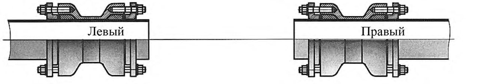
Рисунок А.1 -Устройство воздушно-пропановой кольцевой горелки
А.5Подготовка и сборка деталей под сварку
Резка труб, зачистка под сварку и снятие фасок должны проводиться механическим способом шлифовальной машинкой с абразивным армированным кругом.
Кромки стыкуемых деталей и прилегающие к ним поверхности (снаружи и внутри) перед сваркой должны зачищаться до металлического блеска для удаления грязи, масла и ржавчины на ширине не менее 10 мм от предполагаемой зоны сплавления сварного шва с основным металлом.
Прихватки, в случае необходимости их выполнения, должны свариваться на тех же режимах и по той же технологии, что и основной шов. При сварке основного шва прихватки должны быть полностью переплавлены. Если требуется сварить кольцевой шов, то размеры и расстояния между прихватками должны соответствовать значениям, приведенным на рисунке А.2. При подготовке свариваемых кромок и сборке не допускаются зазоры более 1,5 мм.
Для сварки стыкового соединения выполняется V-образная разделка кромок (60°).
Рисунок А.2 - Порядок выполнения прихваток при DN > 100
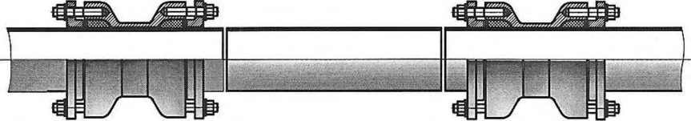
А.6Сварка
Сварку труб из ВЧШГ допускается проводить только в условиях надежной защиты от ветра и попадания на стык атмосферных осадков и грязи.
Перед сваркой необходимо просушить электроды согласно рекомендациям предприятия-изготовителя.
Сварка осуществляется на постоянном токе обратной полярности.
Режим сварки устанавливается в зависимости от пространственного положения и диаметра электрода в соответствии с таблицей А.1.
Таблица А.1 Рекомендуемые режимы сварки
| I св , А, при положении | I св , А, при положении | I св , А, при положении | |
|---|---|---|---|
| Диаметр электрода, мм | нижнем | вертикальном | потолочном |
| 2,4 (2,5) | 80 | 70 | 60 |
| 3,5 (3,25) | 120 | 100 | 80 |
| 4,0 | 140 | 120 | 110 |
Сварку труб DN 100 и DN 150 допускается осуществлять без предварительного подогрева, при сварке труб от DN 200 до DN 300 необходим предварительный подогрев до значения от 150 °С до 250 °С. Предварительный подогрев необходимо осуществлять кольцевыми газовыми горелками (см. рисунок А.1).
При температуре окружающего воздуха ниже 8 °С необходим предварительный подогрев до значения от 150 °С до 250 °С независимо от диаметра трубы.
Сварные швы накладываются не менее чем в два прохода. Цель выполнения первого прохода обеспечение проплавления корневой части сварного шва, последующих проходов - заполнение разделки для стыковых швов или наложение требуемого катета - для угловых.
Порядок наложения слоев при сварке кольцевых швов, как стыковых, так и угловых, показан на рисунке А.3.
1 - первый шов; 2 - второй шов; 3 - третий шов; 4 - четвертый шов; К , К 1 - катеты шва; S - толщина металла
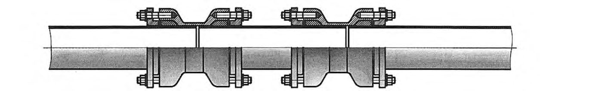
Рисунок А.3 Порядок наложения слоев при сварке кольцевых швов (стыковых и угловых) для труб диаметром до 219 мм ( а ) и более 219 мм ( б )
После сварки первого прохода необходимо полностью удалить шлаковую корку металлической щеткой.
Сварка должна осуществляться короткой дугой с минимальными колебаниями и отрывами электрода.
Вертикальные неповоротные стыки свариваются в направлении «снизу вверх». Наплавку слоя в потолочной части стыка следует начинать, отступая от 10 до 30 мм от нижней точки.
После окончания сварки для устранения структур отбела и закалки в околошовной зоне необходимо провести отжиг сварного шва и околошовной зоны в следующем режиме: нагрев до значения от 920 °С до 950 °С за время от 5 до 7 мин, выдержка при этой температуре от 1 до 2 мин, замедленное охлаждение под слоем теплоизоляционного материала. Температуру подогрева необходимо контролировать оптическим пирометром с диапазоном измеряемых температур от 50 °С до 1100 °С и с точностью ± 5 °С.
Все сварные соединения должны быть заклеймены сварщиками, выполнявшими сварку. Клеймо рекомендуется наносить несмываемой краской на расстоянии от 30 до 40 мм от сваренного стыка.
А.7Ремонт дефекта
Непосредственная заварка дефекта на трубе из ВЧШГ, бывшей в эксплуатации, не допускается.
Локальный дефект на трубе из ВЧШГ может быть устранен методом приварки накладки на дефектный участок. Накладка вырезается из трубы ВЧШГ соответствующего диаметра. Толщина накладки должна быть больше толщины ремонтируемого участка трубы не менее чем на 1 мм. Размер дефекта, устраняемого методом приварки накладки, должен перекрываться накладкой на 10 мм с каждой стороны. При этом размер накладки не должен превышать:
- по окружности - 1/3 длины окружности трубы;
- по ширине - 100 мм по оси трубы.
Форма и размеры приварной накладки приведены на рисунке А.4.
1 - труба из ВЧШГ; 2 - приварная накладка
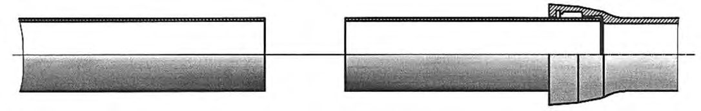
Рисунок А.4 - Форма и размеры приварной накладки
В случае ремонта трещины ее концы должны быть засверлены на всю глубину. Накладка должна плотно прилегать к поверхности трубы. Зазоры между ремонтируемой трубой и накладкой недопустимы.
Приварка накладки выполняется в строгом соответствии с требованиями разделов настоящего приложения к сварочным материалам, оборудованию, подготовке поверхности, сварке и термообработке. Приварку накладки допускается выполнять без предварительного подогрева и без термообработки в случае, если длина сварного шва по периметру накладки не превышает 200 мм. Катет сварного шва должен быть равен толщине накладки (рисунок А.5).
1 дефект в трубе; 2 - приварная накладка; К , К 1 - катеты шва; S - толщина металла трубы; S 1 - толщина металла приварной накладки
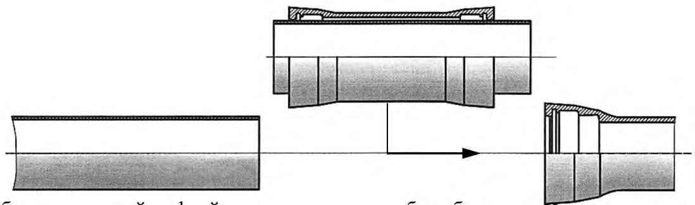
Рисунок А.5 - Конструкция нахлесточного сварного соединения при ремонте методом приварной накладки
А.8Приварка к трубе и соединительным деталям из высокопрочного чугуна с шаровидным графитом конструктивных деталей из стали
Стальные конструктивные детали или трубные отростки привариваются к трубопроводу из ВЧШГ в строгом соответствии с требованиями настоящей инструкции по сварочным материалам, подготовке поверхности, по сварке и термообработке. В качестве конструктивных элементов, привариваемых к трубопроводу из ВЧШГ, могут быть использованы низколегированные, низкоуглеродистые стали (Сталь 20, 09Г2С). Недопустима приварка в трассовых условиях к чугунной трубе углеродистых, высокоуглеродистых, хромистых и хромоникелевых сталей (нержавеющих сталей). В случае необходимости приварки к чугунной трубе патрубка или фланца из
СП 483.1325800.2020 нержавеющей стали эта работа может быть выполнена на предприятии - изготовителе соединительных деталей. В трассовых условиях допускается приварка к трубе из ВЧШГ стального патрубка с номинальным диаметром не более 80 мм. Если требуется врезка большего диаметра, сварочные работы следует проводить на предприятии изготовителе соединительных деталей. Требования к катету и протяженности сварного шва в случае приварки конструктивных элементов, воспринимающих значительные нагрузки (неподвижные опоры, упоры различного назначения), должны быть расчетными.
А.9Контроль качества сварки
Сварные соединения труб из ВЧШГ должны подвергаться систематическому контролю, который должен состоять из предварительного, пооперационного и окончательного.
К предварительному контролю относятся:
- проверка квалификации сварщиков;
- контроль качества сварочного материала;
- проверка оборудования для сварки.
В пооперационный контроль должна входить проверка:
- точности сборки под сварку;
- чистоты основного и присадочного материала;
- качества и количества прихваток;
- соблюдения требований данной технологии и режимов сварки.
Окончательный контроль качества сварных соединений включает:
- заварку КСС с последующей вырезкой и исследованиями макрошлифов;
- визуальный и измерительный контроль;
- гидравлическое испытание давлением 1,25 рабочего.
Визуальному контролю подвергаются 100 % сварных соединений. Визуальный осмотр следует проводить с применением лупы от 3 до 10-кратного увеличения.
Сварные соединения признаются неудовлетворительными, если будут выявлены следующие дефекты:
- трещины всех видов и направлений, расположенные в металле шва или околошовной зоне;
- несплавления, расположенные на поверхности сварного соединения;
- свищи, бугристость поверхности, незаваренные кратеры, прожоги;
- отклонения от требуемого значения катета;
- размеры и количество объемных включений и западаний между валиками превышают значения, приведенные в таблице А.2;
- размеры непровара, вогнутости и превышение проплава в корне шва стыковых соединений, выполненных без остающегося подкладного кольца, превышают значения, приведенные в таблице А.3;
- дефекты, выявленные на макрошлифах, вырезанных из КСС, превышают значения, приведенные в таблице А.4.
Стыки, не удовлетворяющие перечисленным требованиям, подлежат исправлению или удалению.
Таблица А.2 Размеры допустимых объемных дефектов
| Дефект | Максимально допустимый линейный размер дефекта, мм | Максимально допустимое число дефектов на любые 100 мм длины шва |
|---|---|---|
| Объемное включение округлой или удлиненной формы при номинальной толщине стенки свариваемых труб в стыковых соединениях или меньшем катете шва в угловых соединениях, мм: до 5,0 св. 5,0 » 7,5 » 7,5 » 10,0 | 0,8 0,8 1,0 1,2 | 2 3 4 4 |
| » 10,0 Западание (углубление) между валиками и чешуйчатое строение поверхности шва при номинальной толщине стенки свариваемых труб в стыковых соединениях или при меньшем катете шва в угловых соеди- нениях, мм: до 15,0 св. 15,0 | 1,5 2,0 | Не ограничивается То же |
Таблица А.3 Размеры допустимых дефектов типа непровара и проплава
| Дефект | Максимально допустимая высота (глубина),% номинальной толщины стенки | Максимально допустимая суммарная длина по периметру стыка |
|---|---|---|
| Вогнутость и непровар в корне шва Превышение проплава | 10 %, но не более 2 мм | 20 %периметра |
| 20 %, но не более 2 мм | То же |
Таблица А.4 Предельно допустимые дефекты на макрошлифах КСС
| Предельно допустимые размеры пор и включений, мм | Предельно допустимые размеры пор и включений, мм | Предельно допустимые размеры пор и включений, мм | Предельно допустимые размеры пор и включений, мм | Предельно допустимые размеры пор и включений, мм | Предельно допустимые размеры пор и включений, мм | Суммарная | |
|---|---|---|---|---|---|---|---|
| Номинальная | отдельных | отдельных | скоплений | скоплений | цепочек | цепочек | длина пор и |
| толщина стенки трубы, мм | Ширина (диаметр) | Длина | Ширина (диаметр) | Длина | Ширина (диаметр) | Длина | включений на любые 100 ммшва, мм |
| До 2,0 | 0,5 | 2,0 | 0,8 | 2,0 | 0,5 | 3,0 | 4,0 |
| Св. 2,0 » 3,0 | 0,6 | 2,5 | 1,0 | 2,5 | 0,6 | 4,0 | 6,0 |
| » 3,0 » 5,0 | 0,8 | 3,5 | 1,2 | 3,5 | 0,8 | 5,0 | 10,0 |
| » 5,0 » 8,0 | 1,2 | 4,0 | 2,0 | 4,0 | 1,2 | 6,0 | 15,0 |
| » 8,0 » 11,0 | 1,5 | 5,0 | 2,5 | 5,0 | 1,5 | 8,0 | 20,0 |
| » 11,0 » 14,0 | 2,0 | 5,0 | 3,0 | 5,0 | 2,0 | 8,0 | 20,0 |
| » 14,0 » 20,0 | 2,5 | 6,0 | 4,0 | 6,0 | 2,5 | 9,0 | 25,0 |
Рентгеновский контроль сварных соединений производят по технологическим картам предприятия-изготовителя.
БПриложение Б. Методика гидравлического расчета промысловых трубопроводов, транспортирующих обводненные газонефтяные смеси
- Б.1 Все расчеты проводятся в Международной системе единиц (СИ), если нет указаний на размерность отдельных параметров в ряде формул.
В настоящем приложении применены следующие индексы обозначений: «н», «в», «ж», «см» - нефть, вода, жидкость (нефть + вода), смесь (нефть + вода + газ) соответственно; «вх», «нх» - восходящие и нисходящие участки; «τ», « z » - потери давления на гидравлические сопротивления и статические (гравитационные) потери давления; р - рабочие условия (среднее давление); 0 - нормальные условия. Остальные обозначения см. в тексте настоящего приложения.
Б.2Исходные данные
Основные исходные данные для выполнения гидравлического расчета:
- план трассы трубопровода;
- профиль трассы трубопровода;
- внутренний диаметр трубопровода d ;
- вязкостно-температурная кривая нефти и жидкости (нефть + вода);
- изотерма растворимости газа в нефти;
- расход жидкости q ж;
- обводненность жидкости w ;
- плотности фаз ρ ;
- динамические вязкости фаз μ ;
- средняя температура трубопровода Т .
Б.3Обработка исходных данных
- Б.3.1 По профилю трассы трубопровода подсчитывают суммарные высоты и длины восходящих и нисходящих участков.
Принимают следующие обозначения:
L вх , L нх -суммарные длины всех восходящих и нисходящих участков соответственно;
Н вх , Н нх -суммарные высоты восходящих и нисходящих участков соответственно.
- Б.3.2 Плотность жидкой фазы определяют по формуле
- Б.3.3 При отсутствии вязкостно-температурной кривой динамическую вязкость нефти μн 𝑇 при температуре T можно определить по эмпирической формуле
где μн 𝑇 1 - вязкость нефти, МПа с, при известной температуре T 1 , о С;
- при 10 ≤ μн ≤ 1000 МПа с С = 100 (МПа с) -1 , а = 1,44 10 -3 о С -1 ;
- при μн > 1000 МПа с С = 10 (МПа с) -1 , а = 2,52 10 -3 о С -1 ;
- при μн < 10 МПа с С = 1000 (МПа с) -1 , а = 0,76 10 -3 о С -1 .
- Б.3.4 При отсутствии вязкостно-температурной кривой динамическую вязкость жидкой фазы можно оценить по формулам:
- обратная эмульсия
- прямая эмульсия
Б.3.5 Средняя температура трубопровода принимается как среднеарифметическая начальной Т 1 и конечной Т 2 температур:
- Б.3.6 Кинематическую вязкость жидкой фазы определяют по формуле
- Б.3.7 Задаются средним давлением в трубопроводе
где p 1 и p 2 - давления в начале и конце трубопровода соответственно.
- Б.3.8 При отсутствии кривой растворимости газа в нефти объем свободного газа в трубопроводе, приведенный к стандартным условиям, можно оценить по формуле
где Гф - газовый фактор нефти, м³ /м³ ; p - давление, кгс/см² ;
T - температура, о С.
- Б.3.9 Расход газовой фазы при рабочих условиях определяют по формуле
где p 0 , T 0 - давление и температура при нормальных условиях ( p 0 = 101325 Па;
- Б.3.10 Расход смеси в рабочих условиях определяют по формуле
- Б.3.11 Объемное расходное газосодержание определяют по формуле
- Б.3.12 Скорость смеси определяют по формуле
- Б.3.13 Число Фруда для смеси определяют по формуле
- Б.3.14 Плотность газовой фазы при рабочих условиях определяют по формуле
Б.4Расчет восходящих участков
- Б.4.1 Истинное газосодержание определяют по формулам:
- при Frсм ≤ 4 и μж >10 -3 Па с α вх = β(0,83 - 0,095lgμж )⌊1 - exp(-2,2√Frсм)⌋ , (Б.17) где μж измеряется в МПа с.
- Б.4.2 Истинную плотность смеси определяют по формуле
- Б.4.3 Статический перепад давления определяют по формуле
- Б.4.4 Истинную скорость газовой фазы определяют по формуле
- Б.4.5 Истинную скорость жидкой фазы определяют по формуле
- Б.4.6 Приведенный коэффициент гидравлического сопротивления определяют по формуле
- Б.4.7 Скорость жидкой фазы определяют по формуле
- Б.4.8 Число Рейнольдса для жидкой фазы определяют по формуле
- Б.4.9 Коэффициент гидравлического сопротивления определяют по формулам: - при Reж ≤ 2320
- Б.4.10 Потери давления на гидравлические сопротивления при движении жидкой фазы определяют по формуле
- при Reж ≤ 10 5
- Б.4.11 Перепад давления на гидравлические сопротивления определяют по формуле
- Б.4.12 Суммарный перепад давления определяют по формуле
Б.5Расчет нисходящего участка
- Б.5.1 В зависимости от полученных значений 𝑣см и β по таблице Б.1 определяют структуру потока.
При расслоенной структуре потока перепады практически можно не учитывать, то есть Δ𝑝см ≈ 0 .
При пробковой структуре потока расчет проводится по параметрам смеси по таблице Б.1.
Таблица Б.1 Границы существования структурных форм ГЖС на нисходящих участках нефтегазопроводов
| 𝑣 см , м/с | Значение β для структурной формы ГЖС | Значение β для структурной формы ГЖС |
|---|---|---|
| 𝑣 см , м/с | расслоенной | пробковой |
| 0,678 | 0-1 | - |
| 0,786 | 0,08-1 | 0-0,08 |
| 0,857 | 0,22-1 | 0-0,22 |
| 1,000 | 0,28-1 | 0-0,28 |
| 1,143 | 0,37-1 | 0-0,37 |
| 1,286 | 0,43-1 | 0-0,43 |
| 1,428 | 0,52-1 | 0,12-0,52 |
| 1,714 | 0,58-1 | 0,15-0,58 |
| 1,857 | 0,63-1 | 0,21-0,63 |
| 2,000 | 0,65-1 | 0,23-0,65 |
- Б.5.2 Коэффициент, учитывающий устойчивость газовых включений в смеси, определяют по формуле
где σжг = 26 ∙ 10 -3 н/м - поверхностное натяжение на границе «нефть - газ».
- Б.5.3 Относительную скорость газа при нисходящем пробковом течении определяют по формуле
- Б.5.4 Истинное объемное газосодержание определяют по формуле
- Б.5.5 Истинную плотность смеси определяют по формуле
- Б.5.6 Статические потери давления определяют по формуле
- Б.5.7 Расходную плотность смеси определяют по формуле
- Б.5.8 Приведенный коэффициент гидравлического сопротивления определяют по формуле
- Б.5.9 Число Рейнольдса смеси при β < 0,9 определяют по формуле
- Б.5.10 Коэффициент гидравлического сопротивления смеси определяют по формулам:
- при Reсм ≤ 2320
- при Reсм > 2320
- Б.5.11 Потери давления на гидравлические сопротивления определяют по формуле
- Б.5.12 Суммарный перепад давления на нисходящем участке определяют по формуле
Б.6Общий перепад давления
При одинаковых диаметрах и пробковых структурах потока на восходящем и нисходящем участках общий перепад давления будет равен
Б.7Погрешность расчета
Полученное в результате расчета среднее давление в трубопроводе составит:
Погрешность расчета определяют по формуле
Если условие δ ≤ 7 % не соблюдается, проводят пересчет Δ𝑝см для других исходных значений 𝑝 .
ВПриложение В. Расчет трубопроводов на прочность и устойчивость
В.1 Расчет трубопроводов на прочность и устойчивость включает определение толщины стенок труб и соединительных деталей, оценку прочности и устойчивости трубопровода и его элементов, оценку устойчивости положения (против всплытия), оценку усилия протаскивания при укладке трубопровода.
Прочность и устойчивость трубопровода должна быть обеспечена на стадиях сооружения, испытания и эксплуатации.
В расчетах приняты наиболее жесткие условия нагрузок на трубы, как для сооружений с равномерно распределенной массой и постоянной жесткостью.
В.2Нагрузки и воздействия
В.2.1 Расчетные нагрузки, воздействия и их возможные сочетания должны соответствовать требованиям СП 20.13330.
В.2.2 Нагрузки и воздействия, действующие на трубопроводы, различаются следующим образом:
- силовые - внутреннее давление среды, собственный вес трубопровода, обустройств и транспортируемой среды, давление (вес) грунта, гидростатическое давление воды; снеговая, ветровая и гололедная нагрузки; нагрузки, возникающие при испытании и пропуске очистных устройств;
- деформационные - температурные воздействия, воздействия неравномерных деформаций грунта (морозное растрескивание, селевые потоки и оползни, деформации земной поверхности в районах горных выработок и карстовых районах, просадки, пучение, термокарстовые процессы), сейсмические воздействия.
По длительности действия выделяют нагрузки: постоянные, временные длительные, кратковременные и особые. Методика расчета на каждую нагрузку приведена в СП 66.13330.
В.2.3 Коэффициенты надежности по нагрузке γ f следует принимать по таблице 8.1.
В.2.4 Нормативные нагрузки от собственного веса трубопровода, арматуры, обустройств, изоляции, от веса и давления грунта следует принимать в соответствии с требованиями СП 20.13330.
- В.2.5 Нормативное значение давления транспортируемой среды устанавливается проектом исходя из гидравлических расчетов.
- В.2.6 Нормативную нагрузку от веса транспортируемой среды на единицу длины трубопровода q пр, Н/м, определяют по формуле
где d - внутренний диаметр трубы, м;
пр - плотность жидкого продукта, кг/м³ ; g - ускорение свободного падения, g = 9,8 м/с 2 .
- В.2.7 Нормативную снеговую нагрузку на единицу длины горизонтальной проекции надземного трубопровода q сн, Н/м, определяют по формуле
где D - наружный диаметр трубы, м; t из - толщина изоляционного покрытия (или теплоизоляции), м; s сн - нормативная снеговая нагрузка, Н/м² , определяемая по СП 20.13330.
- В.2.8 Нормативную нагрузку от обледенения на единицу длины надземного трубопровода q лд, Н/м, определяют по формуле
где D - наружный диаметр трубы, м; t лд - толщина слоя льда, м;
лд - плотность гололеда, кг/м³ , определяется по СП 20.13330.
- В.2.9 Нормативную ветровую нагрузку на единицу длины надземного трубопровода q вет, Н/м, действующая перпендикулярно к его осевой вертикальной плоскости, определяют по формуле
где статическая w ст, Н/м² , и динамическая w дн, Н/м² , составляющие ветровой нагрузки определяются по СП 20.13330, при этом значение w дн необходимо определять, как для сооружения с равномерно распределенной массой и постоянной жесткостью.
- В.2.10 Нормативные значения нагрузок и воздействий, возникающих при транспортировании отдельных секций, при сооружении трубопровода, проведении испытании и пропуске очистных устройств устанавливаются проектом в зависимости от способов производства работ и методов проведения испытаний.
В.2.11 Сейсмические воздействия на надземные трубопроводы принимаются согласно СП 14.13330.
В.2.12 Нагрузки и воздействия, вызываемые резким нарушением процесса эксплуатации, временной неисправностью и поломкой оборудования, устанавливаются проектом в зависимости от особенностей режима эксплуатации.
В.2.13 Нагрузки и воздействия от неравномерной деформации грунта (осадок, пучения, селевых потоков, оползней, воздействий горных выработок, карстов, замачивания просадочных грунтов, оттаивания многолетнемерзлых грунтов и т. д.) определяются на основании анализа грунтовых условий и их возможного изменения в процессе эксплуатации трубопровода.
В.2.14 Нормативные нагрузки и коэффициенты надежности по нагрузке от подвижного состава железных и автомобильных дорог определяются по СП 35.13330.
В.3Определение толщин стенок труб и соединительных деталей
В.3.1 Расчетная толщина стенки труб и соединительных деталей определяется по формуле
где f - коэффициент надежности по нагрузке;
- коэффициент несущей способности труб и соединительных деталей; pn - рабочее (нормативное) давление транспортируемой среды, Па;
D - наружный диаметр трубы, м;
R - величина, зависящая от механических свойств металла трубы следующим образом:
- для трубопроводов, транспортирующих продукты, не содержащие сероводород:
- для трубопроводов, транспортирующих сероводородсодержащие продукты (с парциальным давлением менее 1 МПа):
здесь R в - нормативное значение временного сопротивления (для ВЧШГ R в = 420 МПа);
R т - нормативное значение предела текучести (для ВЧШГ R т = 300 МПа);
n -коэффициент надежности по назначению (для ВЧШГ n = 1,00 ) ;
m -коэффициент надежности по материалу (для ВЧШГ m = 1,55);
с -коэффициент надежности по условиям работы (для ВЧШГ с = 0,60);
s -коэффициент условий работы трубопроводов, транспортирующих сероводородсодержащие продукты.
- В.3.2 Значения коэффициентов условий работы трубопроводов, транспортирующих сероводородсодержащие продукты, s принимаются по таблице В.1.
- В.3.3 Значения коэффициентов несущей способности труб и соединительных деталей следует принимать:
- для труб, заглушек и переходов - 1;
- для тройниковых соединений и отводов а ξ + b ,
Таблица В.1 Значения коэффициентов условий работы трубопроводов, транспортирующих сероводородсодержащие продукты ( s )
| Категория трубопровода | Содержание сероводорода | Содержание сероводорода |
|---|---|---|
| и его участка | Среднее | Низкое |
| I | 0,4 | 0,5 |
| II | 0,5 | 0,6 |
| III | 0,6 | 0,65 |
| Примечание - Среднее и низкое содержание сероводорода - см. [19]. | Примечание - Среднее и низкое содержание сероводорода - см. [19]. | Примечание - Среднее и низкое содержание сероводорода - см. [19]. |
здесь 𝑑𝑒1 , 𝑑𝑒2 - наружные диаметры труб и соединительных деталей соответственно; где r - радиус кривизны отвода.
Значения коэффициентов а и b следует принимать: для тройниковых соединений - по таблице В.2, для отводов - по таблице В.3.
Таблица В.2 Значения коэффициентов а и b для тройниковых соединений
| | Сварные без усиливающих элементов | Сварные без усиливающих элементов | Бесшовные и штампосварные | Бесшовные и штампосварные |
|---|---|---|---|---|
| а | b | а | b | |
| От 0,00 до 0,15 | 0,00 | 1,00 | 0,22 | 1,00 |
| » 0,15 » 0,50 | 1,60 | 0,76 | 0,62 | 0,94 |
| » 0,50 » 1,00 | 0,10 | 1,51 | 0,40 | 1,05 |
Таблица В.3 Значения коэффициентов а и b для отводов
| | а | b |
|---|---|---|
| От 1,0 до 2,0 | -0 ,3 | 1,6 |
| Более 2,0 | 0,0 | 1,0 |
- В.3.4 При назначении номинальной толщины стенки труб и соединительных деталей следует учитывать не только постоянные, но и временные факторы (возможность коррозионных, сейсмических и других воздействий).
- В.3.5 Для обеспечения условий поперечной (местной) устойчивости толщину стенки труб принимают не менее D /140, но не менее 6,0 мм.
- В.3.6 Для подземных трубопроводов, имеющих отношение δ / D < 0,01, или укладываемых на глубину более 3 м или менее 0,8 м, требуется соблюдение условия
где q 1 - расчетное усилие в продольном сечении трубы единичной длины, Н/м;
М 1 - изгибающий момент в продольном сечении трубы единичной длины, Н м.
- В.3.7 Значения q 1 и М 1 определяются в соответствии с правилами строительной механики с учетом отпора грунта от совместного воздействия давления грунта, нагрузок над трубой от подвижного состава железнодорожного и автомобильного транспорта, возможного вакуума и гидростатического давления грунтовых вод.
В.4Проверка напряженного состояния и устойчивости подземных и наземных (в насыпи) трубопроводов
- В.4.1 Поверочный расчет трубопровода на прочность проводится после выбора его основных размеров с учетом всех расчетных нагрузок и воздействий для всех расчетных случаев, возникающих при сооружении, испытании и эксплуатации.
Расчетная схема трубопровода должна отражать действительные условия его работы, а метод расчета - учитывать возможность использования расчетных программ.
В качестве расчетной схемы трубопровода рассматриваются статически неопределимые стержневые системы переменной жесткости с учетом взаимодействия трубопровода с окружающей средой. При этом коэффициенты гибкости отводов и тройниковых соединений определяются по В.4.2 и В.4.3.
В.4.2 Коэффициент гибкости гнутых отводов kp определяется по таблице В.4. Таблица В.4 Коэффициент гибкости гнутых отводов
| Центральный угол отвода φ | Коэффициент гибкости отвода k p |
|---|---|
| От 0°до 45° | (𝑘 𝑝 ∗ -1) φ 45 +1 |
| От 45° до 90° | 𝑘 𝑝 ∗ |
| Примечание - 𝑘 𝑝 ∗ см. на рисунке В.1. | Примечание - 𝑘 𝑝 ∗ см. на рисунке В.1. |
Величину 𝑘𝑝 ∗ принимают по рисунку В.1 в зависимости от параметров отвода b и b , определяемых по формулам:
где r - радиус кривизны отвода, м;
E - модуль упругости материала отвода (для стали Е = 206 10 9 Па, для ВЧШГ Е = 150 10 9 Па).
- В.4.3 Коэффициент гибкости тройниковых соединений принимают равным единице.
- В.4.4 Арматура, расположенная на трубопроводе (краны, задвижки, обратные клапаны и т. д.), рассматривается в расчетной схеме как твердое недеформируемое тело.
- В.4.5 В каждом поперечном сечении трубопровода для номинальной толщины стенки трубы и соединительных деталей должны выполняться условия:
- при сжимающих фибровых продольных напряжениях от расчетных нагрузок: пр
- в точках поперечного сечения, где - растягивающее напряжение: пр
где σпр и σкц - продольные и кольцевые напряжения в сечении соответственно, Па.
Рисунок В.1 График для определения значений коэффициента * p k
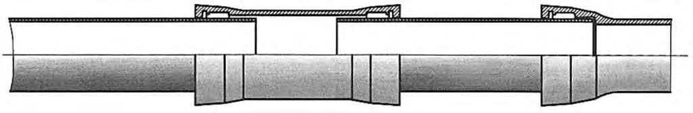
В.4.6 Значения принимаются: R
- при действии всех силовых нагрузок
- при совместном действии всех силовых и деформационных нагрузок (кроме сейсмических, пучения и морозобойного растрескивания):
- при совместном действии всех силовых и деформационных нагрузок, включая сейсмические воздействия, пучение и морозобойное растрескивание:
При оценке прочности соединительных деталей следует учитывать местные мембранные и изгибные напряжения, определенные от всех силовых и деформационных нагрузок. В этом случае принимают 𝑅 = 𝑅в .
Для трубопроводов, транспортирующих сероводородсодержащие продукты, принимается 𝑅 = 𝑅 , где R - то же, что в формуле (В.7).
- В.4.7 Коэффициент концентрации продольных напряжений принимается:
- для прямой трубы - 1;
- для отводов ms *;
- для магистральной части тройникового соединения
- для ответвления тройникового соединения 𝑚𝑠 = 𝑚𝑠 ∗ .
Здесь D 1 и D 2 - наружные диаметры магистральной части и ответвления тройникового узла.
Значение * для отводов принимают по рисунку В.2 в зависимости от параметров λ b и b , определяемых по формулам (В.9) и (В.10). s m
Значения * для магистральной части и ответвления тройникового соединения принимаются по рисунку В.2 в зависимости от параметров тройникового соединения, определяемых по формулам: s m
Примечание - При вычислении параметров и для магистральной части тройникового соединения используются первые индексы, параметров и для ответвления тройникового соединения - вторые индексы. 1 1 2 2
Рисунок В.2 - График для определения значений коэффициента * s m
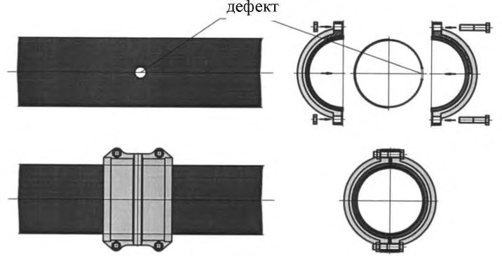
В.4.8 Проверку общей устойчивости трубопроводов в продольном направлении проводят по условию
где S -эквивалентное продольное осевое усилие, определяемое от расчетных нагрузок и воздействий с учетом продольных и поперечных перемещений трубопровода;
Ncr -продольное критическое усилие, определяемое с учетом принятого конструктивного решения трубопровода.
В.5Проверка напряженного состояния и устойчивости надземных трубопроводов
- В.5.1 Надземные трубопроводы проверяются на прочность, продольную
СП 483.1325800.2020 устойчивость и выносливость при колебаниях в ветровом потоке. Методика расчета для надземных трубопроводов, учитывающая раструб и гибкость соединений приведена в СП 66.13330.
В.5.2 Продольные усилия и изгибающие моменты в надземных трубопроводах определяются в соответствии с общими правилами строительной механики. При этом трубопровод рассматривается как статически неопределимая стержневая система переменной жесткости. Величины расчетных значений несущей способности труб при осевом нагружении приведены в таблице 7.5 СП 66.13330.2011. Коэффициенты гибкости отводов и тройниковых соединений определяются согласно В.4.2 и В.4.3.
Расчетная схема при определении продольных усилий и изгибающих моментов в надземных трубопроводах должна учитывать метод монтажа трубопровода.
В.5.3 Балочные системы надземных трубопроводов рассчитывают с учетом трения на опорах, при этом применяется меньшее или большее из возможных значений коэффициента трения в зависимости от того, что опаснее для данного расчетного случая.
В.5.4 В каждом поперечном сечении надземного трубопровода для номинальной толщины стенки трубы и соединительных деталей должны выполняться условия (В.11) и (В.12).
В.5.5 Значения коэффициентов концентрации напряжений для отводов и тройниковых соединений принимаются согласно В.4.7.
В.5.6 При скоростях ветра, вызывающих колебание трубопровода с частотой, равной частоте собственных колебаний, проводят поверочный расчет трубопроводов на резонанс.
В.5.7 Расчетные усилия и перемещения трубопровода при резонансе определяются как геометрическая сумма резонансных усилий и перемещений, а также усилий и перемещений от других видов нагрузок и воздействий, включая расчетную ветровую нагрузку, соответствующую критическому скоростному напору.
В.5.8 Методика расчета прочности трубопровода, не имеющего жесткого соединения от динамического воздействия ветра с учетом принятой конструкции, расстояние между опорами 6 м (каждая труба крепится у раструба к опоре), принята как жесткая конструкция и приведена в СП 16.13330.
В.5.9 Расчет оснований фундаментов и самих опор проводят по потере несущей способности (прочности и устойчивости положения) или непригодности к нормальной эксплуатации, связанной с разрушением их элементов или недопустимо большими деформациями опор, опорных частей, элементов пролетных строений или трубопровода.
В.5.10 Опоры (включая основания и фундаменты) и опорные части рассчитываются на передаваемые трубопроводом и вспомогательными конструкциями вертикальные и горизонтальные (продольные и поперечные) усилия и изгибающие моменты, определяемые от расчетных нагрузок и воздействий в наиболее невыгодных их сочетаниях с учетом возможных смещений опор и опорных частей в процессе эксплуатации.
В.5.11 При расчете опор учитывается глубина промерзания или оттаивания грунта, деформаций грунта (пучение и просадка), а также возможные изменения свойств грунта (в пределах восприятия нагрузок) в зависимости от времени года, температурного режима, осушения или обводнения участков, прилегающих к трассе, и других условий.
В.5.12 Нагрузки на опоры, возникающие от воздействия ветра и от изменений длины трубопроводов под влиянием внутреннего давления, определяются в зависимости от принятой системы прокладки трубопровода на опорах.
В.6Проверка прочности трубопроводов при сейсмических воздействиях
В.6.1 Напряжения от сейсмических воздействий в подземных трубопроводах и трубопроводах, прокладываемых в насыпи, определяются как результат воздействия сейсмической волны, направленной вдоль продольной оси трубопровода, по формуле
где m 0 - коэффициент защемления трубопровода в грунте; k o - коэффициент степени ответственности трубопровода; k п - коэффициент повторяемости землетрясений; а с - сейсмическое ускорение, м/с 2 ;
Е - модуль упругости материала трубопровода, Па;
Т 0 - преобладающий период сейсмических колебаний грунтового массива, с; с р - скорость распространения сейсмической волны, м/с.
Значения коэффициентов m 0 , k o и k п принимаются по таблицам В.5-В.7.
Значения величин сейсмического ускорения a c и скорости распространения продольной сейсмической волны с р принимаются по таблицам В.8 и В.5.
Значение величины преобладающего периода сейсмических колебаний грунтового массива T 0 определяется при изысканиях.
Таблица В.5 Значения коэффициентов защемления трубопровода в грунте m 0 и скоростей распространения продольной сейсмической волны с р
| Грунты | Коэффициент защемления трубопровода в грунте m 0 | Скорость распространения продольной сейсмической волны с р , м/с |
|---|---|---|
| Насыпные, рыхлые пески, супеси, суглинки, кроме водонасыщенных | 0,50 | 120 |
| Песчаные маловлажные | 0,50 | 150 |
| Песчаные средней влажности | 0,45 | 250 |
| Песчаные водонасыщенные | 0,45 | 350 |
| Супеси и суглинки | 0,60 | 300 |
| Глинистые влажные, пластичные | 0,35 | 500 |
| Глинистые, полутвердые и твердые | 0,70 | 2000 |
| Лесс и лессовидные | 0,50 | 400 |
| Торф | 0,20 | 100 |
| Низкотемпературные мерзлые (песчаные, глинистые, насыпные) | 1,00 | 2200 |
| Высокотемпературные мерзлые (песчаные, глинистые, насыпные) | 1,00 | 1500 |
| Гравий, щебень и галечник | См. примечание 2 | 1100 |
| Известняки, сланцы, песчаники (слабовыветренные и сильно- выветренные) | См. примечание 2 | 1500 |
| Скальные породы (монолиты) | См. примечание 2 | 2200 |
Примечания
1 В настоящей таблице приведены наименьшие значения с р, которые следует уточнять при изысканиях.
2 Значения коэффициентов защемления трубопровода принимают по грунту засыпки.
Таблица В.6 Значения коэффициентов степени ответственности трубопровода k o
| Характеристика трубопровода | k о |
|---|---|
| Нефте-, продуктопроводы класса I | 1,5 |
| Нефте-, продуктопроводы класса II | 1,2 |
| Нефте-, продуктопроводы класса III | 1,0 |
| Примечание - При сейсмичности 9 баллов и выше коэффициент k o дополнительно на коэффициент 1,5. | умножается |
Таблица В.7 Значения коэффициентов повторяемости землетрясений k п
| Повторяемость землетрясений один раз | В 100 лет | В 1 000 лет | В 10 000 лет |
|---|---|---|---|
| Коэффициент повторяемости k п | 1,15 | 1,0 | 0,9 |
Таблица В.8 Значения расчетных сейсмических ускорений а с
| Сила землетрясения, баллы | 7 | 8 | 9 | 10 |
|---|---|---|---|---|
| Сейсмическое ускорение, м/с 2 | 1,0 | 2,0 | 4,0 | 8,0 |
Расчет для трубопроводов, не имеющих жесткого соединения, проводится в соответствии с ГОСТ 30546.1 и [13].
- В.6.2 При совместном действии всех нагрузок силового и деформационного нагружения, включая сейсмическое воздействие, напряжение от которого определяется по формуле (В.18), величина в условиях (В.11), (В.12) должна удовлетворять условию 𝑅 ≤ 1,5𝑅 . R
- В.6.3 Расчет надземных трубопроводов на сейсмические воздействия проводят согласно требованиям СП 14.13330, с оценкой прочности по условиям (В.11), (В.12).
В.7Устойчивость положения трубопровода
- В.7.1 Устойчивость положения (против всплытия) трубопроводов, прокладываемых на обводненных участках трассы, следует проверять для отдельных (в зависимости от условий строительства) участков по условию
где Q акт - суммарная расчетная нагрузка на трубопровод, действующая вверх, включая упругий отпор при прокладке свободным изгибом, Н;
Q пас - суммарная расчетная нагрузка, действующая вниз (включая собственный вес), Н; k Н.В - коэффициент надежности устойчивости положения трубопровода против всплытия, принимаемый равным для участков перехода:
- через болота, поймы, водоемы при отсутствии течения, обводненные и заливаемые участки в пределах ГВВ 1 %-ной обеспеченности - 1,05;
- русловых, через реки шириной до 200 м по среднему меженному уровню, включая прибрежные участки в границах производства подводно-технических работ, - 1,10;
- через реки и водохранилища шириной свыше 200 м, а также горные реки 1,15;
- нефтепроводов и нефтепродуктопроводов, для которых возможно их опорожнение и замещение продукта воздухом, - 1,03.
В.7.2 Интенсивность балластировки (вес на воздухе 𝑞бал н , Н/м) при обеспечении устойчивости положения, в частном случае - при укладке трубопровода свободным изгибом при равномерной балластировке по длине, определяется по формуле
где n б - коэффициент надежности по нагрузке, принимаемый равным:
0,9 - для железобетонных грузов;
1,0 - для чугунных грузов; 𝑘Н.В - то же, что в формуле (В.21); q В - расчетная выталкивающая сила воды, действующая на трубопровод, Н/м; q изг - расчетная интенсивность нагрузки от упругого отпора при свободном изгибе трубопровода, Н/м, определяемая по формулам:
- для выпуклых кривых
- для вогнутых кривых
q тр - расчетная нагрузка от массы трубы, Н/м; q доп - расчетная нагрузка от веса продукта, Н/м, которая учитывается при расчете трубопроводов, если в процессе их эксплуатации невозможны опорожнение и замещение продукта воздухом; γб - нормативная объемная масса материала пригрузки, кг/м³ ; γВ - плотность воды, принимаемая по данным изыскания, кг/м³ .
В формулах (В.23), (В.24):
E 0 - модуль упругости, Па;
I - момент инерции сечения трубопровода на рассматриваемом участке, м 4 ; β - угол поворота оси трубопровода, рад; ρ - минимальный радиус упругого изгиба оси трубопровода, м.
В.7.3 Для трубопроводов, выполненных из труб с раструбным соединением типа RJ, расчетная интенсивность нагрузки от упругого отпора при свободном изгибе трубопровода при расчете интенсивности балластировки не учитывается. Соединение типа RJ не является жестким и позволяет отклоняться соединенным трубам на угол от 3° до 5°, в зависимости от диаметра труб, при сохранении полной герметичности стыка. Таким образом, трубопровод в траншее принимает проектное положение без возникновения упругого изгиба.
В.7.4 Вес грунта засыпки при расчете балластировки трубопроводов на русловых участках переходов через реки и водохранилища не учитывается. При проверке общей устойчивости трубопровода как сжатого стержня допускается учитывать вес грунта засыпки толщиной 1 м при обязательном соблюдении требований в части заглубления трубопровода в дно не менее 1 м.
В.7.5 Расчетную несущую способность анкерного устройства Банк, Н, определяют по формуле
где z количество анкеров в одном анкерном устройстве; 𝑚анк - коэффициент условий работы анкерного устройства:
- при z = 1 или при z ≥ 2 и D н / D анк ≥ 3 принимаемый равным 1,0;
- при z ≥ 2 и 1 ≤ D н / D анк ≤ 3 определяется по формуле
P анк -расчетная несущая способность анкера, Н, из условия несущей способности грунта основания, определяемая по формуле
здесь Фанк - несущая способность анкера, Н, определяемая расчетом или по результатам полевых испытаний; k н - коэффициент надежности анкера, принимаемый равным 1,4 (если несущая способность анкера определена расчетом) или 1,25 (если несущая способность анкера определена в ходе полевых испытаний статической нагрузкой);
D н - наружный диаметр трубопровода;
D анк - максимальный линейный размер габарита проекции одного анкера на горизонтальную плоскость, см.
В.8Определение несущей способности плети трубопровода при протаскивании
Расчет допустимой осевой нагрузки для трубопровода с соединениями типа RJ проводят по схеме среза приварного валика на гладком конце трубы при продольном перемещении стопоров. Величина расчетного сопротивления срезу σс р для труб от DN 80 до DN 500 принимается 240 МПа.
Допустимые осевые нагрузки трубопроводов с соединениями типа RJ при осевом нагружении 𝑄с о приведены в таблице В.9.
Коэффициенты запаса прочности, равные отношению 𝑄с о /𝑄м , находятся в пределах 2,0-3,5 ( Q м -усилие протяжки, развиваемое машинами ГНБ или другими механизмами протяжки).
Таблица В.9 Допустимые осевые нагрузки трубопроводов с соединениями типа RJ
| DN ,мм | 80 | 100 | 125 | 150 | 200 | 250 | 300 | 350 | 400 | 500 |
|---|---|---|---|---|---|---|---|---|---|---|
| Q o с ,кН | 240 | 260 | 300 | 380 | 580 | 720 | 860 | 940 | 1020 | 1180 |
Сила протаскивания с учетом коэффициента запаса прочности зависит от диаметра трубопровода и приведена в таблице 10.4 СП 66.13330.2011.
ГПриложение Г. Форма журнала учета результатов входного контроля
| Дата поступления | Наименование, марка, тип продукции, обозначение документа на ее поставку | Предприятие-поставщик | Номер партии, дата изготовления и номер сопроводительного документа | Количество продукции в партии | Количество проверенной продукции | Количество забракованной продукции | Количество некомплектной продукции | Вид испытания и дата сдачи образцов на испытание | Номер и дата протокола испытаний | Испытание, при котором выявлен брак | Номер и дата составления рекламации | Причина рекламации (пункт стандарта, технических условий) | Меры по удовлетворению рекламации и принятию штрафных санкций | Мероприятия предприятия-поставщика по закрытию рекламации |
ДПриложение Д. АКТ
очистки полости трубопровода
г.\_\_\_\_\_\_\_\_\_\_\_\_\_\_\_\_\_\_\_\_
«\_\_\_\_\_»\_\_\_\_\_\_\_\_\_\_\_\_\_\_\_\_\_ 20\_\_\_ г.
Составлен комиссией, назначенной приказом \_\_\_\_\_\_\_\_\_\_\_\_\_\_\_\_\_\_\_\_\_\_\_\_\_\_\_\_\_\_\_\_\_\_\_\_\_\_\_\_\_\_\_\_\_\_\_\_\_\_\_\_\_\_\_\_ \_\_\_\_\_\_\_\_\_\_\_\_\_\_\_\_\_\_\_\_\_\_\_\_\_\_\_\_\_\_\_\_\_\_\_\_\_\_\_\_\_\_\_\_\_\_\_\_\_\_\_\_\_\_\_\_\_\_\_\_\_\_\_\_\_\_\_\_\_\_\_\_\_\_\_\_\_\_\_\_\_\_\_\_\_\_\_\_\_\_\_\_\_\_\_\_\_\_ (наименование организации) от «\_\_\_\_\_» \_\_\_\_\_\_\_\_\_\_\_\_\_\_ 20\_\_\_ г. в составе:
Председатель комиссии: \_\_\_\_\_\_\_\_\_\_\_\_\_\_\_\_\_\_\_\_\_\_\_\_\_\_\_\_\_\_\_\_\_\_\_\_\_\_\_\_\_\_\_\_\_\_\_\_\_\_\_\_\_\_\_\_\_\_\_\_\_\_\_\_\_\_\_\_\_\_\_\_\_
(должность, фамилия, инициалы)
Члены комиссии: \_\_\_\_\_\_\_\_\_\_\_\_\_\_\_\_\_\_\_\_\_\_\_\_\_\_\_\_\_\_\_\_\_\_\_\_\_\_\_\_\_\_\_\_\_\_\_\_\_\_\_\_\_\_\_\_\_\_\_\_\_\_\_\_\_\_\_\_\_\_\_\_\_\_\_\_\_\_\_
\_\_\_\_\_\_\_\_\_\_\_\_\_\_\_\_\_\_\_\_\_\_\_\_\_\_\_\_\_\_\_\_\_\_\_\_\_\_\_\_\_\_\_\_\_\_\_\_\_\_\_\_\_\_\_\_\_\_\_\_\_\_\_\_\_\_\_\_\_\_\_\_\_\_\_\_\_\_\_
\_\_\_\_\_\_\_\_\_\_\_\_\_\_\_\_\_\_\_\_\_\_\_\_\_\_\_\_\_\_\_\_\_\_\_\_\_\_\_\_\_\_\_\_\_\_\_\_\_\_\_\_\_\_\_\_\_\_\_\_\_\_\_\_\_\_\_\_\_\_\_\_\_\_\_\_\_\_\_
\_\_\_\_\_\_\_\_\_\_\_\_\_\_\_\_\_\_\_\_\_\_\_\_\_\_\_\_\_\_\_\_\_\_\_\_\_\_\_\_\_\_\_\_\_\_\_\_\_\_\_\_\_\_\_\_\_\_\_\_\_\_\_\_\_\_\_\_\_\_\_\_\_\_\_\_\_\_\_
Произведена \_\_\_\_\_\_\_\_\_\_\_\_\_\_ кратная очистка полости \_\_\_\_\_\_\_\_\_\_\_\_\_\_\_\_\_\_\_\_\_\_\_\_\_\_ трубопровода, диаметром \_\_\_\_\_\_\_\_\_\_\_ мм на участке от км\_\_\_\_\_\_\_\_\_ ПК \_\_\_\_\_\_\_\_\_ до км \_\_\_\_\_\_\_\_\_ ПК \_\_\_\_\_\_\_\_\_ общей протяженностью \_\_\_\_\_\_\_\_\_\_\_\_\_\_\_\_\_\_ м.
Очистка выполнена в соответствии с требованиями свода правил, проекта, инструкции \_\_\_\_\_\_\_\_\_\_\_\_\_\_\_\_\_\_\_, согласованной и утвержденной «\_\_\_\_\_» \_\_\_\_\_\_\_\_\_\_\_\_\_\_\_\_\_ 20\_\_\_\_\_ г. в установленном порядке способом \_\_\_\_\_\_\_\_\_\_\_\_\_\_\_\_\_\_\_\_\_\_\_\_\_\_\_\_\_\_\_\_\_\_\_\_\_\_\_\_\_\_\_\_\_\_\_\_\_\_\_\_\_\_\_\_\_\_\_\_\_\_\_\_\_\_\_\_\_\_\_\_\_\_\_\_\_\_\_\_\_\_\_\_\_\_\_\_\_\_\_\_\_\_\_\_\_ (промывки, продувки, \_\_\_\_\_\_\_\_\_\_\_\_\_\_\_\_\_\_\_\_\_\_\_\_\_\_\_\_\_\_\_\_\_\_\_\_\_\_\_\_\_\_\_\_\_\_\_\_\_\_\_\_\_\_\_\_\_\_\_\_\_\_\_\_\_\_\_\_\_\_\_\_\_\_\_\_\_\_\_\_\_\_\_\_\_\_\_\_\_\_\_\_\_\_\_\_\_ вытеснения загрязнения в потоке жидкости, вид рабочей среды - \_\_\_\_\_\_\_\_\_\_\_\_\_\_\_\_\_\_\_\_\_\_\_\_\_\_\_\_\_\_\_\_\_\_\_\_\_\_\_\_\_\_\_\_\_\_\_\_\_\_\_\_\_\_\_\_\_\_\_\_\_\_\_\_\_\_\_\_\_\_\_\_\_\_\_\_\_\_\_\_\_\_\_\_\_\_\_\_\_\_\_\_\_\_\_\_\_ вода, воздух, газ и т. п.)
Очистка внутренней полости трубопровода производилась до \_\_\_\_\_\_\_\_\_\_\_\_\_\_\_\_\_\_\_\_\_\_\_\_\_\_\_\_\_\_\_\_\_\_\_\_\_\_\_\_\_
\_\_\_\_\_\_\_\_\_\_\_\_\_\_\_\_\_\_\_\_\_\_\_\_\_\_\_\_\_\_\_\_\_\_\_\_\_\_\_\_\_\_\_\_\_\_\_\_\_\_\_\_\_\_\_\_\_\_\_\_\_\_\_\_\_\_\_\_\_\_\_\_\_\_\_\_\_\_\_\_\_\_\_\_\_\_\_\_\_\_\_\_\_\_
Заключение комиссии: \_\_\_\_\_\_\_\_\_\_\_\_\_\_\_\_\_\_\_\_\_\_\_\_\_\_\_\_\_\_\_\_\_\_\_\_\_\_\_\_\_\_\_\_\_\_\_\_\_\_\_\_\_\_\_\_\_\_\_\_\_\_\_\_\_\_\_\_\_\_\_\_\_\_
(указать результаты приемки очистки
\_\_\_\_\_\_\_\_\_\_\_\_\_\_\_\_\_\_\_\_\_\_\_\_\_\_\_\_\_\_\_\_\_\_\_\_\_\_\_\_\_\_\_\_\_\_\_\_\_\_\_\_\_\_\_\_\_\_\_\_\_\_\_\_\_\_\_\_\_\_\_\_\_\_\_\_\_\_\_\_\_\_\_\_\_\_\_\_\_\_\_\_\_\_\_\_\_ полости трубопровода, какие последующие работы разрешается
\_\_\_\_\_\_\_\_\_\_\_\_\_\_\_\_\_\_\_\_\_\_\_\_\_\_\_\_\_\_\_\_\_\_\_\_\_\_\_\_\_\_\_\_\_\_\_\_\_\_\_\_\_\_\_\_\_\_\_\_\_\_\_\_\_\_\_\_\_\_\_\_\_\_\_\_\_\_\_\_\_\_\_\_\_\_\_\_\_\_\_\_\_\_\_\_\_ производить)
\_\_\_\_\_\_\_\_\_\_\_\_\_\_\_\_\_\_\_\_\_\_\_\_\_\_\_\_\_\_\_\_\_\_\_\_\_\_\_\_\_\_\_\_\_\_\_\_\_\_\_\_\_\_\_\_\_\_\_\_\_\_\_\_\_\_\_\_\_\_\_\_\_\_\_\_\_\_\_\_\_\_\_\_\_\_\_\_\_\_\_\_\_\_\_\_\_
Председатель комиссии \_\_\_\_\_\_\_\_\_\_\_\_\_\_\_\_\_\_\_\_\_\_\_\_\_\_ \_\_\_\_\_\_\_\_\_\_\_\_\_\_\_\_\_\_\_\_\_\_ \_\_\_\_\_\_\_\_\_\_\_\_\_\_
(фамилия, инициалы) (подпись) (дата)
Члены комиссии: \_\_\_\_\_\_\_\_\_\_\_\_\_\_\_\_\_\_\_\_\_\_\_\_\_\_ \_\_\_\_\_\_\_\_\_\_\_\_\_\_\_\_\_\_\_\_\_\_ \_\_\_\_\_\_\_\_\_\_\_\_\_\_
(фамилия, инициалы) (подпись) (дата)
\_\_\_\_\_\_\_\_\_\_\_\_\_\_\_\_\_\_\_\_\_\_\_\_\_\_ \_\_\_\_\_\_\_\_\_\_\_\_\_\_\_\_\_\_\_\_\_ \_\_\_\_\_\_\_\_\_\_\_\_\_\_
(фамилия, инициалы) (подпись) (дата)
\_\_\_\_\_\_\_\_\_\_\_\_\_\_\_\_\_\_\_\_\_\_\_\_\_\_ \_\_\_\_\_\_\_\_\_\_\_\_\_\_\_\_\_\_\_\_\_ \_\_\_\_\_\_\_\_\_\_\_\_\_\_
(фамилия, инициалы) (подпись) (дата)
\_\_\_\_\_\_\_\_\_\_\_\_\_\_\_\_\_\_\_\_\_\_\_\_\_\_ \_\_\_\_\_\_\_\_\_\_\_\_\_\_\_\_\_\_\_\_ \_\_\_\_\_\_\_\_\_\_\_\_\_\_\_
(фамилия, инициалы) (подпись)
(дата)
ЕПриложение Е. АКТ
испытания трубопровода
г.\_\_\_\_\_\_\_\_\_\_\_\_\_\_\_\_\_\_\_\_
«\_\_\_\_\_»\_\_\_\_\_\_\_\_\_\_\_\_\_\_\_\_\_ 20\_\_\_ г.
Проведено \_\_\_\_\_\_\_\_\_\_\_\_\_\_\_\_\_\_\_\_\_\_\_\_\_\_\_\_\_\_\_\_\_\_\_\_\_\_\_\_\_\_\_\_\_\_\_\_\_\_\_\_\_\_\_\_\_\_\_\_\_\_\_\_ испытание на прочность, (метод испытания) проверка на герметичность трубопровода \_\_\_\_\_\_\_\_\_\_\_\_\_\_\_\_\_\_\_\_\_\_\_\_\_\_\_\_\_\_\_\_\_\_\_\_\_\_\_\_\_\_\_\_\_\_\_\_\_\_\_\_\_\_\_\_\_\_\_\_\_\_\_ Составлен комиссией, назначенной приказом \_\_\_\_\_\_\_\_\_\_\_\_\_\_\_\_\_\_\_\_\_\_\_\_\_\_\_\_\_\_\_\_\_\_\_\_\_\_\_\_\_\_\_\_\_\_\_\_\_\_\_\_\_\_\_\_\_ (наименование организации) от «\_\_\_\_\_» \_\_\_\_\_\_\_\_\_\_\_\_\_\_ 20\_\_\_ г. в составе:
Председатель \_\_\_\_\_\_\_\_\_\_\_\_\_\_\_\_\_\_\_\_\_\_\_\_\_\_\_\_\_\_\_\_\_\_\_\_\_\_\_\_\_\_\_\_\_\_\_\_\_\_\_\_\_\_\_\_\_\_\_\_\_\_\_\_\_\_\_\_\_\_\_\_\_\_\_\_\_\_\_\_\_\_\_\_
(должность, фамилия, инициалы)
Члены комиссии: \_\_\_\_\_\_\_\_\_\_\_\_\_\_\_\_\_\_\_\_\_\_\_\_\_\_\_\_\_\_\_\_\_\_\_\_\_\_\_\_\_\_\_\_\_\_\_\_\_\_\_\_\_\_\_\_\_\_\_\_\_\_\_\_\_\_\_\_\_\_\_\_\_\_\_\_\_\_\_\_\_
\_\_\_\_\_\_\_\_\_\_\_\_\_\_\_\_\_\_\_\_\_\_\_\_\_\_\_\_\_\_\_\_\_\_\_\_\_\_\_\_\_\_\_\_\_\_\_\_\_\_\_\_\_\_\_\_\_\_\_\_\_\_\_\_\_\_\_\_\_\_\_\_\_\_\_\_\_\_\_\_\_
«\_\_\_\_\_» \_\_\_\_\_\_\_\_\_\_\_\_\_\_ 20\_\_\_ г. проведено \_\_\_\_\_\_\_\_\_\_\_\_\_\_\_\_\_\_\_\_\_\_\_\_\_\_\_\_\_\_\_\_\_\_\_\_\_\_\_\_\_\_\_\_\_\_\_\_\_\_\_\_\_\_\_\_\_\_\_\_
(метод испытания) испытание на прочность трубопровода на участке от км\_\_\_\_\_\_\_\_\_\_ ПК \_\_\_\_\_\_\_\_\_ до км \_\_\_\_\_\_\_\_ ПК \_\_\_\_\_\_\_\_\_\_\_ общей протяженностью \_\_\_\_\_\_\_\_\_\_\_\_ м, в соответствии с требованиями свода правил \_\_\_\_\_\_\_\_\_\_\_\_\_\_\_\_\_\_, проекта \_\_\_\_\_\_\_\_\_\_\_\_\_\_\_\_\_\_\_\_\_\_\_\_\_\_\_\_\_\_\_\_\_\_\_\_\_\_\_\_\_\_, специальной инструкции \_\_\_\_\_\_\_\_\_\_\_\_\_\_\_\_\_\_\_\_\_, согласованной и утвержденной «\_\_\_\_» \_\_\_\_\_\_\_ 20\_\_\_ г. в установленном порядке. Время выдержки под испытательным давлением составило \_\_\_\_\_\_\_ ч. В течение испытания давление измерялось техническими манометрами №\_\_\_\_\_\_\_\_\_\_ или дистанционными приборами №\_\_\_\_\_\_\_\_\_\_\_, или самопишущими манометрами №\_\_\_\_\_\_\_\_\_\_, опломбированными, имеющими паспорта, класс точности приборов \_\_\_\_\_ со шкалой
Испытание на прочность выполнено при давлении в нижней точке \_\_\_\_\_\_\_ МПа, в верхней точке\_\_\_\_\_\_\_ МПа. деления \_\_\_\_\_\_\_\_, проверенными госповерителем «\_\_\_» \_\_\_\_\_\_\_\_ 20\_\_\_г. Заключение комиссии: \_\_\_\_\_\_\_\_\_\_\_\_\_\_\_\_\_\_\_\_\_\_\_\_\_\_\_\_\_\_\_\_\_\_\_\_\_\_\_\_\_\_\_\_\_\_\_\_\_\_\_\_\_\_\_\_\_\_\_\_\_\_\_\_\_\_\_\_\_\_\_\_\_\_\_\_
(указать результат испытания)
После завершения испытания на прочность проведена проверка на герметичность давлением Р раб.макс \_\_\_\_МПа в течение \_\_\_\_\_ ч на участке от км \_\_\_\_\_\_\_\_ ПК \_\_\_\_\_\_\_\_до км \_\_\_\_\_\_ ПК \_\_\_\_\_\_\_ общей протяженностью \_\_\_\_\_\_\_\_\_\_\_ м, площадке \_\_\_\_\_\_\_\_\_\_\_\_\_ в соответствии с требованиями свода правил \_\_\_\_\_\_\_\_\_\_\_\_\_\_\_\_\_\_\_\_\_\_\_, проекта \_\_\_\_\_\_\_\_\_\_\_\_\_\_\_\_\_\_\_, специальной инструкции \_\_\_\_\_\_\_\_\_\_\_\_\_\_\_\_\_\_\_\_\_, согласованной и утвержденной «\_\_\_\_\_» \_\_\_\_\_\_\_\_\_\_\_ 20\_\_\_ г. в установленном порядке.
В ходе проверки на герметичность давление измерялось техническими манометрами №\_\_\_\_\_\_\_\_\_\_\_\_\_\_ или дистанционными приборами №\_\_\_\_\_\_\_\_\_\_\_\_\_, или самопишущими манометрами №\_\_\_\_\_\_\_\_\_\_\_\_\_\_, опломбированными, имеющими паспорта, класс точности приборов \_\_\_\_\_\_\_\_\_\_\_\_\_\_\_\_\_\_\_\_ со шкалой деления \_\_\_\_\_\_\_\_\_\_\_\_\_\_\_\_\_\_\_\_\_\_, проверенными госповерителем «\_\_\_\_\_» \_\_\_\_\_\_\_\_\_\_\_ 20\_\_\_ г.
Заключение комиссии: \_\_\_\_\_\_\_\_\_\_\_\_\_\_\_\_\_\_\_\_\_\_\_\_\_\_\_\_\_\_\_\_\_\_\_\_\_\_\_\_\_\_\_\_\_\_\_\_\_\_\_\_\_\_\_\_\_\_\_\_\_\_\_\_\_\_\_\_\_\_\_\_\_\_\_
(указать результат проверки на герметичность)
Удаление воды после испытания трубопровода на участке км/ПК \_\_\_\_\_\_\_\_\_\_\_\_\_\_\_ до км/ПК \_\_\_\_\_\_\_\_\_\_\_\_\_\_\_ общей протяженностью \_\_\_\_\_\_ м, площадке \_\_\_\_\_\_\_\_\_\_проведено в соответствии с требованиями свода правил \_\_\_\_\_\_\_\_\_\_\_\_\_\_\_\_\_\_\_\_\_\_, проекта \_\_\_\_\_\_\_\_\_\_\_\_\_\_\_\_\_\_\_\_\_, специальной инструкции \_\_\_\_\_\_\_\_\_\_\_\_\_\_\_\_\_\_\_\_\_\_\_\_\_, согласованной и утвержденной «\_\_\_\_\_» \_\_\_\_\_\_\_\_\_\_\_ 20\_\_\_ г. в установленном порядке. Удаление воды проводилось до \_\_\_\_\_\_\_\_\_\_\_\_\_\_\_\_\_\_\_\_\_\_\_\_\_\_\_\_\_\_\_\_\_\_\_\_\_\_\_\_\_\_\_\_\_\_\_\_\_\_\_\_\_\_\_\_\_\_\_\_\_\_\_\_\_\_\_\_
(выхода чистого воздуха, газа, прекращения выхода воды)
Заключение комиссии: \_\_\_\_\_\_\_\_\_\_\_\_\_\_\_\_\_\_\_\_\_\_\_\_\_\_\_\_\_\_\_\_\_\_\_\_\_\_\_\_\_\_\_\_\_\_\_\_\_\_\_\_\_\_\_\_\_\_\_\_\_\_\_\_\_\_\_\_\_\_\_\_\_\_\_
(какие последующие работы разрешается производить)
Председатель комиссии \_\_\_\_\_\_\_\_\_\_\_\_\_\_\_\_\_\_\_\_\_\_\_\_\_\_ \_\_\_\_\_\_\_\_\_\_\_\_\_\_\_\_\_\_\_\_\_\_ \_\_\_\_\_\_\_\_\_\_\_\_\_\_
(фамилия, инициалы) (подпись) (дата)
Члены комиссии: \_\_\_\_\_\_\_\_\_\_\_\_\_\_\_\_\_\_\_\_\_\_\_\_\_\_ \_\_\_\_\_\_\_\_\_\_\_\_\_\_\_\_\_\_\_\_\_\_ \_\_\_\_\_\_\_\_\_\_\_\_\_\_
(фамилия, инициалы) (подпись) (дата)
\_\_\_\_\_\_\_\_\_\_\_\_\_\_\_\_\_\_\_\_\_\_\_\_\_\_ \_\_\_\_\_\_\_\_\_\_\_\_\_\_\_\_\_\_\_\_\_ \_\_\_\_\_\_\_\_\_\_\_\_\_\_
(фамилия, инициалы) (подпись) (дата)
\_\_\_\_\_\_\_\_\_\_\_\_\_\_\_\_\_\_\_\_\_\_\_\_\_\_ \_\_\_\_\_\_\_\_\_\_\_\_\_\_\_\_\_\_\_\_\_ \_\_\_\_\_\_\_\_\_\_\_\_\_\_
(фамилия, инициалы) (подпись) (дата)
ЖПриложение Ж. АКТ
освидетельствования скрытых работ
Мы, нижеподписавшиеся: представитель заказчика \_\_\_\_\_\_\_\_\_\_\_\_\_\_\_\_\_\_\_\_\_\_\_\_\_\_\_\_\_\_\_\_\_\_\_\_\_\_\_\_\_\_\_\_\_\_\_\_\_\_\_\_\_\_\_\_\_\_\_\_\_\_\_\_\_\_\_\_\_\_\_\_\_\_\_\_\_\_\_ производитель изоляционных работ \_\_\_\_\_\_\_\_\_\_\_\_\_\_\_\_\_\_\_\_\_\_\_\_\_\_\_\_\_\_\_\_\_\_\_\_\_\_\_\_\_\_\_\_\_\_\_\_\_\_\_\_\_\_\_\_\_\_\_\_\_\_\_\_\_\_\_\_\_ производитель укладочных работ \_\_\_\_\_\_\_\_\_\_\_\_\_\_\_\_\_\_\_\_\_\_\_\_\_\_\_\_\_\_\_\_\_\_\_\_\_\_\_\_\_\_\_\_\_\_\_\_\_\_\_\_\_\_\_\_\_\_\_\_\_\_\_\_\_\_\_\_\_\_\_ производитель работ по балластировке \_\_\_\_\_\_\_\_\_\_\_\_\_\_\_\_\_\_\_\_\_\_\_\_\_\_\_\_\_\_\_\_\_\_\_\_\_\_\_\_\_\_\_\_\_\_\_\_\_\_\_\_\_\_\_\_\_\_\_\_\_\_\_\_\_\_ производитель работ по монтажу КИП \_\_\_\_\_\_\_\_\_\_\_\_\_\_\_\_\_\_\_\_\_\_\_\_\_\_\_\_\_\_\_\_\_\_\_\_\_\_\_\_\_\_\_\_\_\_\_\_\_\_\_\_\_\_\_\_\_\_\_\_\_\_\_\_\_\_ представитель службы контроля качества \_\_\_\_\_\_\_\_\_\_\_\_\_\_\_\_\_\_\_\_\_\_\_\_\_\_\_\_\_\_\_\_\_\_\_\_\_\_\_\_\_\_\_\_\_\_\_\_\_\_\_\_\_\_\_\_\_\_\_\_\_\_\_\_ составили настоящий акт о том, что на участке от км \_\_\_\_\_\_\_\_\_\_\_\_ ПК до км \_\_\_\_\_\_\_\_\_\_ ПК \_\_\_\_\_\_\_\_\_\_ трубопровода \_\_\_\_\_\_\_\_\_\_\_\_\_\_\_\_\_\_\_\_\_ общей протяженностью \_\_\_\_\_\_\_\_\_\_\_\_м выполнен комплекс работ по изоляции, укладке, балластировке (закреплению на проектных отметках) и монтажу соединительных проводов КИП. Изоляционное покрытие выполнено в соответствии с требованиями проекта и представляет собой \_\_\_\_\_\_\_\_\_\_\_\_\_\_\_\_\_\_\_\_\_\_\_\_\_\_\_\_\_\_\_\_\_\_\_\_\_\_\_\_\_\_\_\_\_\_\_\_\_\_\_\_\_типа изоляции толщиной \_\_\_\_\_\_\_\_\_\_ мм Проверка качества очистки и праймирования проводилась \_\_\_\_\_\_\_\_\_\_\_\_\_\_\_\_\_\_\_\_\_\_\_\_\_\_\_\_\_\_\_\_\_\_\_\_\_\_\_\_\_\_\_\_\_\_\_. (визуально, прибором) Адгезия изоляционного покрытия проверена \_\_\_\_\_\_\_\_\_\_\_\_\_\_\_\_\_\_\_\_\_\_\_\_\_\_\_\_\_\_\_\_\_\_\_\_\_\_\_\_\_\_\_\_\_\_\_\_\_\_\_\_\_\_\_\_\_\_\_\_\_
(метод, прибор) и соответствует требованиям ГОСТ Р 51164.
Проверка сплошности изоляционного покрытия проводилась искровым дефектоскопом в местах, вызывавших сомнение.
Изолированный участок трубопровода уложен в подготовленную траншею на проектные отметки, что подтверждено геодезической съемкой, нанесенной на рабочие чертежи № \_\_\_\_\_\_\_\_\_\_\_\_\_\_\_\_\_\_\_. Укладка проведена без провисов и недопустимых отклонений от оси.
Имевшиеся в процессе работы замечания по качеству работ занесены в журнал производства изоляционно-укладочных работ и устранены.
После укладки трубопровода от км \_\_\_\_\_\_\_\_\_ ПК\_\_\_\_\_\_\_\_\_\_ до км \_\_\_\_\_\_\_\_\_\_\_\_ ПК \_\_\_\_\_\_\_\_\_\_\_\_\_\_\_\_ установлено \_\_\_\_\_ утяжелителей марки \_\_\_\_\_\_\_\_\_\_\_\_\_\_\_\_\_\_\_ с шагом \_\_\_\_\_\_\_\_\_\_\_\_\_\_ м, установлено \_\_\_\_\_анкерных устройств типа \_\_\_\_\_\_\_\_\_\_\_\_\_\_\_\_ с шагом \_\_\_\_\_\_\_\_\_\_\_\_\_\_ м. На участке общей протяженностью \_\_\_\_\_\_\_\_\_\_ м от км \_\_\_\_\_\_\_ ПК\_\_\_\_\_\_\_ до км \_\_\_\_\_\_\_\_ ПК \_\_\_\_\_\_\_\_ проведена балластировка нетканым синтетическим материалом типа \_\_\_\_\_\_\_\_\_\_\_\_\_\_\_\_\_\_\_ с засыпкой \_\_\_\_\_\_\_\_\_\_\_\_\_\_ грунтом. Полотнища из нетканых синтетических материалов сварены между собой. Для предохранения изоляционного покрытия от повреждений в соответствии с проектом под \_\_\_\_\_\_\_\_\_\_\_\_\_\_\_\_\_\_\_\_\_ установлены \_\_\_\_\_\_\_\_\_\_\_\_\_\_\_\_\_\_\_\_\_\_\_\_\_\_\_\_\_\_\_\_\_\_\_\_\_\_\_\_\_\_\_\_\_\_\_\_\_\_\_\_\_\_\_\_\_\_\_\_\_\_\_\_\_\_\_\_\_\_\_\_\_\_\_\_\_\_ (утяжелители, анкеры) (защитные коврики, деревянные маты и др.) размером \_\_\_\_\_\_\_\_\_\_\_\_\_ в \_\_\_\_\_\_\_\_\_\_\_\_\_ слоя.
Повреждения изоляционного покрытия после установки средств балластировки ликвидированы, о чем сделаны записи в журнале производства работ.
Соединительные провода КИП выполнены из провода сечением\_\_\_\_\_\_\_\_\_\_ и присоединены к \_\_\_\_\_\_\_\_\_\_\_\_\_\_\_\_\_\_ проводу на ПК \_\_\_\_\_\_\_\_\_\_\_\_ способом \_\_\_\_\_\_\_\_\_\_\_\_\_\_\_\_\_\_\_\_\_\_\_
Места присоединения КИП к \_\_\_\_\_\_\_\_\_\_\_ проводу изолированы. На участке проведено контрольное выдергивание анкерных устройств в объеме \_\_\_\_\_\_\_\_ шт., что соответствует требованиям проекта. Критическая нагрузка замерялась динамометром марки \_\_\_\_\_\_\_\_, поверенным \_\_\_\_\_\_\_\_\_\_ и составила \_\_\_\_\_\_\_\_\_\_\_т, что \_\_\_\_\_\_\_\_\_\_\_\_\_\_\_\_\_\_\_\_\_\_\_\_\_\_\_\_ проектное значение, составляющее \_\_\_\_\_\_\_\_\_ т.
(соответствует, превышает)
На участке от ПК \_\_\_\_\_\_\_\_\_ до ПК \_\_\_\_\_\_\_\_\_ протяженностью \_\_\_\_\_\_\_\_\_\_ м трубопровода выполнена футеровка рейкой размером \_\_\_\_\_\_мм, обеспечивающая защиту изоляционного покрытия от повреждений. Футеровка выполнена в соответствии с требованиями проекта и рабочих чертежей № \_\_\_\_\_\_\_\_\_\_\_\_\_\_\_\_\_\_\_\_\_\_\_\_\_\_\_\_\_\_\_\_\_\_\_\_. На участке от ПК \_\_\_\_\_\_\_ до ПК \_\_\_\_\_\_\_\_\_\_\_ выполнена теплоизоляция \_\_\_\_\_\_\_\_\_\_\_\_\_\_\_\_\_\_\_\_\_\_\_\_\_\_\_\_\_\_\_\_\_\_\_\_\_
(указать конструкцию)
Работы выполнены в соответствии с требованиями нормативных документов и проекта, рабочие чертежи № \_\_\_\_\_\_\_\_\_\_\_\_\_\_\_\_\_\_\_\_\_\_\_\_\_\_\_\_\_\_\_\_\_\_\_\_\_\_\_\_\_\_\_\_\_\_\_\_\_\_\_\_\_\_\_\_\_\_\_\_\_\_\_\_\_\_\_\_\_\_\_\_\_\_\_\_\_\_\_\_\_\_\_\_\_\_\_\_\_\_\_\_\_\_\_\_\_\_\_\_. На основании изложенного указанные в акте работы считаются принятыми, разрешается засыпка участков от км \_\_\_\_\_\_\_ ПК\_\_\_\_\_\_\_\_ до км \_\_\_\_\_\_\_\_\_ ПК \_\_\_\_\_\_\_\_\_\_общей протяженностью\_\_\_\_\_\_\_ м.
Подписи
ИПриложение И. АКТ
приемки трубопровода
\_\_\_\_\_\_\_\_\_\_\_\_\_\_\_\_\_\_\_\_\_\_\_\_\_\_\_\_\_\_\_\_\_\_\_\_\_\_\_\_\_\_\_\_\_\_\_\_\_\_\_\_\_\_\_\_\_\_\_\_\_\_\_\_\_\_\_\_\_\_\_\_\_\_\_\_\_\_\_\_\_\_\_\_\_\_\_\_\_\_\_\_\_\_
(наименование и адрес объекта) г.
\_\_\_\_\_\_\_\_\_\_\_\_\_\_\_\_\_
«\_\_\_\_\_»\_\_\_\_\_\_\_\_\_\_\_\_\_\_\_\_\_ 20\_\_\_ г.
Приемочная комиссия в составе: председателя комиссии - представителя заказчика \_\_\_\_\_\_\_\_\_\_\_\_\_\_\_\_\_\_\_\_\_\_\_\_\_\_\_\_\_\_\_\_\_\_\_\_\_\_\_\_\_\_\_\_\_\_\_\_\_\_\_\_\_\_\_\_\_\_\_\_\_\_\_\_\_\_\_\_\_\_\_\_\_\_\_\_\_\_\_\_\_\_\_\_\_\_\_\_\_\_\_\_\_\_, (фамилия, имя, отчество, должность) членов комиссии - представителей: генерального подрядчика \_\_\_\_\_\_\_\_\_\_\_\_\_\_\_\_\_\_\_\_\_\_\_\_\_\_\_\_\_\_\_\_\_\_\_\_\_\_\_\_\_\_\_\_\_\_\_\_\_\_\_\_\_\_\_\_\_\_\_\_\_\_\_\_\_\_\_\_\_,
(фамилия, имя, отчество, должность) эксплуатационной организации \_\_\_\_\_\_\_\_\_\_\_\_\_\_\_\_\_\_\_\_\_\_\_\_\_\_\_\_\_\_\_\_\_\_\_\_\_\_\_\_\_\_\_\_\_\_\_\_\_\_\_\_\_\_\_\_\_\_\_\_\_\_\_\_,
(фамилия, имя, отчество, должность) органов технадзора \_\_\_\_\_\_\_\_\_\_\_\_\_\_\_\_\_\_\_\_\_\_\_\_\_\_\_\_\_\_\_\_\_\_\_\_\_\_\_\_\_\_\_\_\_\_\_\_\_\_\_\_\_\_\_\_\_\_\_\_\_\_\_\_\_\_\_\_\_\_\_\_\_\_\_
(фамилия, имя, отчество, должность)
УСТАНОВИЛА:
- 1 Генеральным подрядчиком \_\_\_\_\_\_\_\_\_\_\_\_\_\_\_\_\_\_\_\_\_\_\_\_\_\_\_\_\_\_\_\_\_\_\_\_\_\_\_\_\_\_\_\_\_\_\_\_\_\_\_\_\_\_\_\_\_\_\_\_\_\_\_\_\_\_\_\_\_
(наименование организации) предъявлен к приемке законченный строительством \_\_\_\_\_\_\_\_\_\_\_\_\_\_\_\_\_\_\_\_\_\_\_\_\_\_\_\_\_\_\_\_\_\_\_\_\_\_\_\_\_\_\_\_\_\_\_
(наименование объекта)
- 2 Субподрядными организациями \_\_\_\_\_\_\_\_\_\_\_\_\_\_\_\_\_\_\_\_\_\_\_\_\_\_\_\_\_\_\_\_\_\_\_\_\_\_\_\_\_\_\_\_\_\_\_\_\_\_\_\_\_\_\_\_\_\_\_\_\_\_\_\_\_
(наименование организации) выполнены \_\_\_\_\_\_\_\_\_\_\_\_\_\_\_\_\_\_\_\_\_\_\_\_\_\_\_\_\_\_\_\_\_\_\_\_\_\_\_\_\_\_\_\_\_\_\_\_\_\_\_\_\_\_\_\_\_\_\_\_\_\_\_\_\_\_\_\_\_\_\_\_\_\_\_\_\_\_\_\_\_\_\_
(виды работ)
3 Проект № \_\_\_\_ разработан \_\_\_\_\_\_\_\_\_\_\_\_\_\_\_\_\_\_\_\_\_\_\_\_\_\_\_\_\_\_\_\_\_\_\_\_\_\_\_\_\_\_\_\_\_\_\_\_\_\_\_\_\_\_\_\_\_\_\_\_\_\_\_\_\_\_\_\_\_\_
(наименование организации)
- 4 Строительство осуществлялось в сроки: начало работ \_\_\_\_\_\_\_\_\_\_\_\_\_\_\_\_\_\_\_\_\_, окончание работ \_\_\_\_\_\_\_\_\_\_\_\_\_\_\_\_\_\_\_\_\_\_\_ (месяц, год) (месяц, год)
Приемочная комиссия рассмотрела представленную документацию, провела внешний осмотр объекта, определила соответствие выполненных строительно-монтажных работ проекту, провела дополнительные испытания (кроме зафиксированных в исполнительной документации)
\_\_\_\_\_\_\_\_\_\_\_\_\_\_\_\_\_\_\_\_\_\_\_\_\_\_\_\_\_\_\_\_\_\_\_\_\_\_\_\_\_\_\_\_\_\_\_\_\_\_\_\_\_\_\_\_\_\_\_\_\_\_\_\_\_\_\_\_\_\_\_\_\_\_\_\_\_\_\_\_\_\_\_\_\_\_\_\_\_\_\_\_\_\_\_\_\_
(виды испытаний)
Решение приемочной комиссии:
- 1 Строительно-монтажные работы выполнены в полном объеме в соответствии с проектом, требованиями нормативных документов и технической документации.
- 2 Предъявленный к приемке трубопровод считать принятым заказчиком вместе с прилагаемой исполнительной документацией с «\_\_\_»\_\_\_\_\_\_\_\_\_\_\_20\_\_\_г.
Председатель комиссии
\_\_\_\_\_\_\_\_\_\_\_\_\_\_\_\_\_\_\_\_\_\_\_\_\_\_\_\_\_\_\_\_\_\_\_\_\_\_
Представитель генерального подрядчика
\_\_\_\_\_\_\_\_\_\_\_\_\_\_\_\_\_\_\_\_\_\_\_\_\_\_\_\_\_\_\_\_\_\_\_\_\_\_
Представитель эксплуатационной организации
\_\_\_\_\_\_\_\_\_\_\_\_\_\_\_\_\_\_\_\_\_\_\_\_\_\_\_\_\_\_\_\_\_\_\_\_\_\_
Представитель органов технадзора
\_\_\_\_\_\_\_\_\_\_\_\_\_\_\_\_\_\_\_\_\_\_\_\_\_\_\_\_\_\_\_\_\_\_\_\_\_\_
КПриложение К. Форма паспорта трубопровода
Наименование предприятия \_\_\_\_\_\_\_\_\_\_\_\_\_\_\_\_\_\_\_\_\_\_\_\_\_\_\_\_\_\_\_\_\_\_\_\_\_\_\_\_\_\_\_\_\_\_\_\_\_\_\_\_\_\_\_\_\_\_\_\_\_\_\_\_\_\_\_\_\_\_\_\_\_\_\_
Подразделение \_\_\_\_\_\_\_\_\_\_\_\_\_\_\_\_\_\_\_\_\_\_\_\_\_\_\_\_\_\_\_\_\_\_\_\_\_\_\_\_\_\_\_\_\_\_\_\_\_\_\_\_\_\_\_\_\_\_\_\_\_\_\_\_\_\_\_\_\_\_\_\_\_\_\_\_\_\_\_\_\_\_\_\_\_\_
Назначение трубопровода \_\_\_\_\_\_\_\_\_\_\_\_\_\_\_\_\_\_\_\_\_\_\_\_\_\_\_\_\_\_\_\_\_\_\_\_\_\_\_\_\_\_\_\_\_\_\_\_\_\_\_\_\_\_\_\_\_\_\_\_\_\_\_\_\_\_\_\_\_\_\_\_\_\_\_\_\_
Год ввода в эксплуатацию \_\_\_\_\_\_\_\_\_\_\_\_\_\_\_\_\_\_\_\_\_\_\_\_\_\_\_\_\_\_\_\_\_\_\_\_\_\_\_\_\_\_\_\_\_\_\_\_\_\_\_\_\_\_\_\_\_\_\_\_\_\_\_\_\_\_\_\_\_\_\_\_\_\_\_\_
Общая протяженность трубопровода, км \_\_\_\_\_\_\_\_\_\_\_\_\_\_\_\_\_\_\_\_\_\_\_\_\_\_\_\_\_\_\_\_\_\_\_\_\_\_\_\_\_\_\_\_\_\_\_\_\_\_\_\_\_\_\_\_\_\_\_\_\_\_\_\_
Рабочая среда \_\_\_\_\_\_\_\_\_\_\_\_\_\_\_\_\_\_\_\_\_\_\_\_\_\_\_\_\_\_\_\_\_\_\_\_\_\_\_\_\_\_\_\_\_\_\_\_\_\_\_\_\_\_\_\_\_\_\_\_\_\_\_\_\_\_\_\_\_\_\_\_\_\_\_\_\_\_\_\_\_\_\_\_\_\_\_
Рабочие параметры: диапазон давлений \_\_\_\_\_\_\_\_\_\_\_\_\_\_\_\_\_\_\_\_\_\_\_\_\_\_\_\_\_\_\_\_\_\_\_\_\_\_\_\_\_\_\_\_\_\_\_\_\_\_\_\_\_\_\_\_\_\_\_\_\_\_\_\_\_ диапазон температур \_\_\_\_\_\_\_\_\_\_\_\_\_\_\_\_\_\_\_\_\_\_\_\_\_\_\_\_\_\_\_\_\_\_\_\_\_\_\_\_\_\_\_\_\_\_\_\_\_\_\_\_\_\_\_\_\_\_\_\_\_\_\_
| № п/п | Наименование участка или его обозначение на схеме | Наружный диаметр и толщина стенки трубы, мм | Протяженность участка, м |
Перечень схем, чертежей и других документов, предъявляемых при сдаче трубопроводов в эксплуатацию, предусмотренных нормативными документами и технической документацией\_\_\_\_\_\_\_\_\_\_\_\_\_\_\_\_\_\_\_\_\_\_\_\_\_\_\_\_\_\_\_\_
\_\_\_\_\_\_\_\_\_\_\_\_\_\_\_\_\_\_\_\_\_\_\_\_\_\_\_\_\_\_\_\_\_\_\_\_\_\_\_\_\_\_\_\_\_\_\_\_\_\_\_\_\_\_\_\_\_\_\_\_\_\_\_\_\_\_\_\_\_\_\_\_\_\_\_\_\_\_\_\_\_\_\_\_\_\_\_\_\_\_\_\_\_\_\_\_\_\_\_
\_\_\_\_\_\_\_\_\_\_\_\_\_\_\_\_\_\_\_\_\_\_\_\_\_\_\_\_\_\_\_\_\_\_\_\_\_\_\_\_\_\_\_\_\_\_\_\_\_\_\_\_\_\_\_\_\_\_\_\_\_\_\_\_\_\_\_\_\_\_\_\_\_\_\_\_\_\_\_\_\_\_\_\_\_\_\_\_\_\_\_\_\_\_\_\_\_\_\_
(с указанием места хранения документов или с приложением их копий)
\_\_\_\_\_\_\_\_\_\_\_\_\_\_\_\_\_\_\_\_\_\_\_\_\_\_\_\_\_\_\_\_\_\_\_\_\_\_\_\_\_\_\_\_\_\_\_\_\_\_\_\_\_\_\_\_\_\_\_\_\_\_\_\_\_\_\_\_\_\_\_\_\_\_\_\_\_\_\_\_\_\_\_\_\_\_\_\_\_\_\_\_\_\_\_\_\_\_\_
\_\_\_\_\_\_\_\_\_\_\_\_\_\_\_\_\_\_\_\_\_\_\_\_\_\_\_\_\_\_\_\_\_\_\_\_\_\_\_\_\_\_\_\_\_\_\_\_\_\_\_\_\_\_\_\_\_\_\_\_\_\_\_\_\_\_\_\_\_\_\_\_\_\_\_\_\_\_\_\_\_\_\_\_\_\_\_\_\_\_\_\_\_\_\_\_\_\_\_
ДАННЫЕ О МОНТАЖЕ
(заполняется для вновь вводимых трубопроводов)
Трубопровод смонтирован \_\_\_\_\_\_\_\_\_\_\_\_\_\_\_\_\_\_\_\_\_\_\_\_\_\_\_\_\_\_\_\_\_\_\_\_\_\_\_\_\_\_\_\_\_\_\_\_\_\_\_\_\_\_\_\_\_\_\_\_\_\_\_\_\_\_\_\_\_\_\_\_\_\_\_
(наименование монтажной организации) в полном соответствии с проектом, разработанным \_\_\_\_\_\_\_\_\_\_\_\_\_\_\_\_\_\_\_\_\_\_\_\_\_\_\_\_\_\_\_\_\_\_\_\_\_\_\_\_\_\_\_\_\_\_\_\_\_\_\_\_\_\_
\_\_\_\_\_\_\_\_\_\_\_\_\_\_\_\_\_\_\_\_\_\_\_\_\_\_\_\_\_\_\_\_\_\_\_\_\_\_\_\_\_\_\_\_\_\_\_\_\_\_\_\_\_\_\_\_\_\_\_\_\_\_\_\_\_\_\_\_\_\_\_\_\_\_\_\_\_\_\_\_\_\_\_\_\_\_\_\_\_\_\_\_\_\_\_\_\_\_
(наименование проектной организации) по рабочим чертежам \_\_\_\_\_\_\_\_\_\_\_\_\_\_\_\_\_\_\_\_\_\_\_\_\_\_\_\_\_\_\_\_\_\_\_\_\_\_\_\_\_\_\_\_\_\_\_\_\_\_\_\_\_\_\_\_\_\_\_\_\_\_\_\_\_\_\_\_\_\_\_\_\_\_\_\_\_\_\_
(номера чертежей)
Вид соединений трубопровода \_\_\_\_\_\_\_\_\_\_\_\_\_\_\_\_\_\_\_\_\_\_\_\_\_\_\_\_\_\_\_\_\_\_\_\_\_\_\_\_\_\_\_\_\_\_\_\_\_\_\_\_\_\_\_\_\_\_\_\_\_\_\_\_\_\_\_\_\_\_\_
\_\_\_\_\_\_\_\_\_\_\_\_\_\_\_\_\_\_\_\_\_\_\_\_\_\_\_\_\_\_\_\_\_\_\_\_\_\_\_\_\_\_\_\_\_\_\_\_\_\_\_\_\_\_\_\_\_\_\_\_\_\_\_\_\_\_\_\_\_\_\_\_\_\_\_\_\_\_\_\_\_\_\_\_\_\_\_\_\_\_\_\_\_\_\_\_\_\_
\_\_\_\_\_\_\_\_\_\_\_\_\_\_\_\_\_\_\_\_\_\_\_\_\_\_\_\_\_\_\_\_\_\_\_\_\_\_\_\_\_\_\_\_\_\_\_\_\_\_\_\_\_\_\_\_\_\_\_\_\_\_\_\_\_\_\_\_\_\_\_\_\_\_\_\_\_\_\_\_\_\_\_\_\_\_\_\_\_\_\_\_\_\_\_\_\_\_
Температура окружающего воздуха при монтаже \_\_\_\_\_\_\_\_\_\_\_\_\_\_\_\_\_\_\_\_\_\_\_\_\_\_\_\_\_\_\_\_\_\_\_\_\_\_\_\_\_\_\_\_\_\_\_\_\_\_\_\_\_\_\_
Данные о материалах, из которых изготовлен трубопровод:
Сведения о трубах и деталях
| №п/п | Наименование элементов, их расположение на схеме | Размеры | Тип | Стандарт или ТУ |
№ п/п
Фланцы и крепежные детали
Наименование элементов, их расположение на схеме
Размеры, условное давление
Марка
Стандарт или ТУ
Арматура и соединительные детали (фитинги)
| №п/п | Наименование элементов, их расположение на схеме | Размеры, условное давление | Марка | Стандарт или ТУ |
РЕЗУЛЬТАТЫ ИСПЫТАНИЯ
(заносятся данные последних испытаний)
Трубопровод испытан на прочность гидравлическим давлением \_\_\_\_\_\_\_\_\_\_\_\_\_\_\_\_\_\_\_\_\_\_\_\_\_\_\_\_\_\_\_\_\_\_\_\_\_\_\_\_\_\_\_\_ \_\_\_\_\_\_\_\_\_\_\_\_\_\_\_\_\_\_\_\_\_\_\_\_\_\_\_\_\_\_\_\_\_\_\_\_\_\_\_\_\_\_\_\_\_\_\_\_\_\_\_\_\_\_\_\_\_\_\_\_\_\_\_\_\_\_\_\_\_\_\_\_\_\_\_\_\_\_\_\_\_\_\_\_\_\_\_\_\_\_\_\_\_\_\_\_\_\_\_ При давлении \_\_\_\_\_\_\_\_\_\_\_\_\_\_\_\_\_\_\_\_\_\_\_\_\_\_\_\_\_\_\_\_\_\_\_\_\_\_\_\_\_\_\_\_\_\_\_\_\_\_\_\_\_\_\_\_\_\_\_\_\_\_\_\_\_\_\_\_\_\_\_\_\_\_\_\_\_\_\_\_\_\_\_\_\_\_\_ трубопровод был осмотрен; обнаружено \_\_\_\_\_\_\_\_\_\_\_\_\_\_\_\_\_\_\_\_\_\_\_\_\_\_\_\_\_\_\_\_\_\_\_\_\_\_\_\_\_\_\_\_\_\_\_\_\_\_\_\_\_\_\_\_\_\_\_\_\_\_\_\_ \_\_\_\_\_\_\_\_\_\_\_\_\_\_\_\_\_\_\_\_\_\_\_\_\_\_\_\_\_\_\_\_\_\_\_\_\_\_\_\_\_\_\_\_\_\_\_\_\_\_\_\_\_\_\_\_\_\_\_\_\_\_\_\_\_\_\_\_\_\_\_\_\_\_\_\_\_\_\_\_\_\_\_\_\_\_\_\_\_\_\_\_\_\_\_\_\_\_\_ \_\_\_\_\_\_\_\_\_\_\_\_\_\_\_\_\_\_\_\_\_\_\_\_\_\_\_\_\_\_\_\_\_\_\_\_\_\_\_\_\_\_\_\_\_\_\_\_\_\_\_\_\_\_\_\_\_\_\_\_\_\_\_\_\_\_\_\_\_\_\_\_\_\_\_\_\_\_\_\_\_\_\_\_\_\_\_\_\_\_\_\_\_\_\_\_\_\_\_ \_\_\_\_\_\_\_\_\_\_\_\_\_\_\_\_\_\_\_\_\_\_\_\_\_\_\_\_\_\_\_\_\_\_\_\_\_\_\_\_\_\_\_\_\_\_\_\_\_\_\_\_\_\_\_\_\_\_\_\_\_\_\_\_\_\_\_\_\_\_\_\_\_\_\_\_\_\_\_\_\_\_\_\_\_\_\_\_\_\_\_\_\_\_\_\_\_\_\_ При испытании на плотность давлением \_\_\_\_\_\_\_\_\_\_\_\_\_\_\_\_\_\_\_\_\_\_\_\_\_\_\_\_\_\_\_\_\_\_\_\_\_\_\_\_\_\_\_\_\_\_\_\_\_\_\_\_\_\_\_\_\_\_\_\_\_\_\_\_ \_\_\_\_\_\_\_\_\_\_\_\_\_\_\_\_\_\_\_\_\_\_\_\_\_\_\_\_\_\_\_\_\_\_\_\_\_\_\_\_\_\_\_\_\_\_\_\_\_\_\_\_\_\_\_\_\_\_\_\_\_\_\_\_\_\_\_\_\_\_\_\_\_\_\_\_\_\_\_\_\_\_\_\_\_\_\_\_\_\_\_\_\_\_\_\_\_\_\_ трубопровод выдержал при этом давлении \_\_\_\_\_\_\_\_\_\_\_\_\_\_\_\_\_\_\_\_\_\_\_\_\_\_\_\_\_\_\_\_\_\_\_\_\_\_\_\_\_\_\_\_\_\_\_\_\_\_\_\_\_\_\_\_\_\_\_\_\_\_ ч Падение давления за время испытания, отнесенное к 1 ч, составило \_\_\_\_\_\_\_\_\_\_\_\_\_\_\_\_\_\_\_\_\_\_\_\_\_\_\_\_\_\_\_\_\_\_\_\_\_\_\_\_\_ \_\_\_\_\_\_\_\_\_\_\_\_\_\_\_\_\_\_\_\_\_\_\_\_\_\_\_\_\_\_\_\_\_\_\_\_\_\_\_\_\_\_\_\_\_\_\_\_\_\_\_\_\_\_\_\_\_\_\_\_\_\_\_\_\_\_\_\_\_\_\_\_\_\_\_\_\_\_\_\_\_\_\_\_\_\_\_\_\_\_\_\_\_\_ % в ч.
ЗАКЛЮЧЕНИЕ
Трубопровод изготовлен и смонтирован в соответствии с действующими правилами и нормами и признан годным к работе \_\_\_\_\_\_\_\_\_\_\_\_\_\_\_\_\_\_\_\_\_\_\_\_\_\_\_\_\_\_\_\_\_\_\_\_\_\_\_\_\_\_\_\_\_\_\_\_\_\_\_\_\_\_\_\_\_\_\_\_\_\_\_\_\_\_\_\_\_\_\_\_\_\_\_\_\_\_\_\_\_\_\_\_\_\_\_\_\_\_\_\_\_\_\_\_\_\_ \_\_\_\_\_\_\_\_\_\_\_\_\_\_\_\_\_\_\_\_\_\_\_\_\_\_\_\_\_\_\_\_\_\_\_\_\_\_\_\_\_\_\_\_\_\_\_\_\_\_\_\_\_\_\_\_\_\_\_\_\_\_\_\_\_\_\_\_\_\_\_\_\_\_\_\_\_\_\_\_\_\_\_\_\_\_\_\_\_\_\_\_\_\_\_\_\_\_ \_\_\_\_\_\_\_\_\_\_\_\_\_\_\_\_\_\_\_\_\_\_\_\_\_\_\_\_\_\_\_\_\_\_\_\_\_\_\_\_\_\_\_\_\_\_\_\_\_\_\_\_\_\_\_\_\_\_\_\_\_\_\_\_\_\_\_\_\_\_\_\_\_\_\_\_\_\_\_\_\_\_\_\_\_\_\_\_\_\_\_\_\_\_\_\_\_\_
Подпись ответственного за эксплуатацию трубопровода
Подпись представителя монтажной организации (обязательна только для вновь вводимых трубопроводов)
\_\_\_\_\_\_\_\_\_\_\_\_\_\_\_\_\_\_\_\_\_\_\_\_\_\_\_\_\_\_\_\_\_\_\_\_\_\_\_\_\_\_\_\_\_\_\_
(должность, Ф.И.О.)
\_\_\_\_\_\_\_\_\_\_\_\_\_\_\_\_\_\_\_\_\_\_\_\_\_\_\_\_\_\_\_\_\_\_\_\_\_\_\_\_\_\_\_\_\_\_\_
(должность, Ф.И.О.)
Лицо, ответственное за безопасную эксплуатацию трубопровода
| Номер и дата приказа о назначении | Фамилия, имя, отчество, должность | Подпись ответственного лица |
Дата
Дата
Дата
Запись о ремонте или переустройстве трубопровода
Основание
Характер произведенных работ
Запись результатов диагностики трубопровода
Результаты диагностики и оценки технического состояния
Срок следующего
Подписи ответственных лиц, обследования и оценки проводивших диагностику и оценку
Формуляр мониторинга коррозии
| Номера точек по схеме | Первоначальный диаметр и толщина, мм | Отбраковочный размер, мм | Толщина по промеру, мм | Метод замера | Подпись | Примечание |
Сведения об очистке полости трубопровода
Участок, подлежащий очистке
Метод очистки
Подпись ответственного лица
СХЕМА ТРУБОПРОВОДА (вносится схема конкретного объекта)
РЕГИСТРАЦИЯ ТРУБОПРОВОДА
Трубопровод зарегистрирован за №\_\_\_\_\_\_\_\_\_\_\_\_\_\_\_\_\_\_\_\_\_\_\_\_\_\_\_\_\_\_\_\_\_\_\_\_\_\_\_\_\_\_\_\_\_\_\_\_\_\_\_\_\_\_\_\_\_\_\_\_\_\_\_\_\_\_\_\_\_ в производственно-техническом отделе\_\_\_\_\_\_\_\_\_\_\_\_\_\_\_\_\_\_\_\_\_\_\_\_\_\_\_\_\_\_\_\_\_\_\_\_\_\_\_\_\_\_\_\_\_\_\_\_\_\_\_\_\_\_\_\_\_\_\_\_\_\_\_\_\_ В паспорте пронумеровано \_\_\_\_\_\_\_\_\_\_\_\_\_\_\_\_\_\_\_\_\_\_\_\_ страниц и прошнуровано всего\_\_\_\_\_\_\_\_\_\_\_\_\_\_\_\_\_\_\_ листов. \_\_\_\_\_\_\_\_\_\_\_\_\_\_\_\_\_\_\_\_\_\_\_\_\_\_\_\_\_\_\_\_\_\_\_\_\_\_\_\_\_\_\_\_\_\_\_ \_\_\_\_\_\_\_\_\_\_\_\_\_\_\_\_\_\_\_\_\_\_\_\_\_\_\_\_\_\_\_\_\_ (должность, Ф.И.О. регистрирующего лица) (подпись)
«\_\_\_\_\_\_\_\_\_»\_\_\_\_\_\_\_\_\_\_\_\_\_\_\_\_\_\_\_\_\_20\_\_\_\_\_\_г.
ЛПриложение Л. АКТ
очистки полости трубопровода с помощью очистных устройств
г.\_\_\_\_\_\_\_\_\_\_\_\_\_\_\_\_\_\_\_\_ «\_\_\_\_\_»\_\_\_\_\_\_\_\_\_\_\_\_\_\_\_\_\_ 20\_\_\_ г. Составлен комиссией, назначенной приказом \_\_\_\_\_\_\_\_\_\_\_\_\_\_\_\_\_\_\_\_\_\_\_\_\_\_\_\_\_\_\_\_\_\_\_\_\_\_\_\_\_\_\_\_\_\_\_\_\_\_\_\_\_\_\_\_\_\_ \_\_\_\_\_\_\_\_\_\_\_\_\_\_\_\_\_\_\_\_\_\_\_\_\_\_\_\_\_\_\_\_\_\_\_\_\_\_\_\_\_\_\_\_\_\_\_\_\_\_\_\_\_\_\_\_\_\_\_\_\_\_\_\_\_\_\_\_\_\_\_\_\_\_\_\_\_\_\_\_\_\_\_\_\_\_\_\_\_\_\_\_\_\_\_\_\_\_\_\_
(наименование организации) от «\_\_\_\_\_» \_\_\_\_\_\_\_\_\_\_\_\_\_\_ 20\_\_\_ г. в составе:
Председатель комиссии: \_\_\_\_\_\_\_\_\_\_\_\_\_\_\_\_\_\_\_\_\_\_\_\_\_\_\_\_\_\_\_\_\_\_\_\_\_\_\_\_\_\_\_\_\_\_\_\_\_\_\_\_\_\_\_\_\_\_\_\_\_\_\_\_\_\_\_\_\_\_\_\_\_\_\_
(должность, фамилия, инициалы) Члены комиссии: \_\_\_\_\_\_\_\_\_\_\_\_\_\_\_\_\_\_\_\_\_\_\_\_\_\_\_\_\_\_\_\_\_\_\_\_\_\_\_\_\_\_\_\_\_\_\_\_\_\_\_\_\_\_\_\_\_\_\_\_\_\_\_\_\_\_\_\_\_\_\_\_\_\_\_\_\_\_\_\_\_ \_\_\_\_\_\_\_\_\_\_\_\_\_\_\_\_\_\_\_\_\_\_\_\_\_\_\_\_\_\_\_\_\_\_\_\_\_\_\_\_\_\_\_\_\_\_\_\_\_\_\_\_\_\_\_\_\_\_\_\_\_\_\_\_\_\_\_\_\_\_\_\_\_\_\_\_\_\_\_\_\_ \_\_\_\_\_\_\_\_\_\_\_\_\_\_\_\_\_\_\_\_\_\_\_\_\_\_\_\_\_\_\_\_\_\_\_\_\_\_\_\_\_\_\_\_\_\_\_\_\_\_\_\_\_\_\_\_\_\_\_\_\_\_\_\_\_\_\_\_\_\_\_\_\_\_\_\_\_\_\_\_\_ Произведена \_\_\_\_\_\_\_\_\_\_\_\_\_\_\_\_\_\_\_\_\_\_\_\_\_\_\_\_\_\_\_\_\_\_\_\_\_\_\_\_\_\_\_\_\_\_\_\_\_\_\_\_\_\_\_\_\_ очистка полости трубопровода (периодическая, преддиагностическая) \_\_\_\_\_\_\_\_\_\_\_\_\_\_\_\_\_\_\_\_\_\_\_\_\_\_\_\_\_\_ протяженностью \_\_\_\_\_\_\_\_\_\_\_\_\_\_\_\_\_\_ м, диаметром \_\_\_\_\_\_\_\_\_\_\_\_\_\_\_\_\_\_\_\_ мм. Очистка выполнена в соответствии с требованиями инструкции \_\_\_\_\_\_\_\_\_\_\_\_\_\_\_\_\_\_\_\_\_\_\_\_\_\_\_\_\_\_\_\_\_\_\_\_, утвержденной \_\_\_\_\_\_\_\_\_\_\_\_\_\_\_\_\_\_\_\_\_\_\_\_\_\_\_\_\_\_\_\_\_\_\_\_\_\_\_\_\_\_\_\_\_\_\_\_\_\_\_\_\_\_\_\_\_\_\_\_\_\_ «\_\_\_\_» \_\_\_\_\_\_\_\_\_\_\_ 20\_\_\_ г.
Результаты очистки полости трубопровода
| Тип очистного средства | Дата и время | Дата и время | Повреждения очистного средства | Количество вынесенных отложений, дм³ | Продолжи- тельность прокачки, ч | Средняя скорость потока, м/с |
|---|---|---|---|---|---|---|
| Тип очистного средства | запуска | приема | Повреждения очистного средства | Количество вынесенных отложений, дм³ | Продолжи- тельность прокачки, ч | Средняя скорость потока, м/с |
Заключение комиссии: \_\_\_\_\_\_\_\_\_\_\_\_\_\_\_\_\_\_\_\_\_\_\_\_\_\_\_\_\_\_\_\_\_\_\_\_\_\_\_\_\_\_\_\_\_\_\_\_\_\_\_\_\_\_\_\_\_\_\_\_\_\_\_\_\_\_\_\_\_\_\_\_\_\_\_\_\_
(указать результаты приемки очистки
\_\_\_\_\_\_\_\_\_\_\_\_\_\_\_\_\_\_\_\_\_\_\_\_\_\_\_\_\_\_\_\_\_\_\_\_\_\_\_\_\_\_\_\_\_\_\_\_\_\_\_\_\_\_\_\_\_\_\_\_\_\_\_\_\_\_\_\_\_\_\_\_\_\_\_\_\_\_\_\_\_\_\_\_\_\_\_\_\_\_\_\_\_\_\_\_\_\_\_\_ полости трубопровода, какие последующие работы разрешается
\_\_\_\_\_\_\_\_\_\_\_\_\_\_\_\_\_\_\_\_\_\_\_\_\_\_\_\_\_\_\_\_\_\_\_\_\_\_\_\_\_\_\_\_\_\_\_\_\_\_\_\_\_\_\_\_\_\_\_\_\_\_\_\_\_\_\_\_\_\_\_\_\_\_\_\_\_\_\_\_\_\_\_\_\_\_\_\_\_\_\_\_\_\_\_\_\_\_\_\_ производить)
Председатель комиссии \_\_\_\_\_\_\_\_\_\_\_\_\_\_\_\_\_\_\_\_\_\_\_\_\_\_ \_\_\_\_\_\_\_\_\_\_\_\_\_\_\_\_\_\_\_\_\_\_ \_\_\_\_\_\_\_\_\_\_\_\_\_\_
(фамилия, инициалы) (подпись) (дата)
Члены комиссии: \_\_\_\_\_\_\_\_\_\_\_\_\_\_\_\_\_\_\_\_\_\_\_\_\_\_ \_\_\_\_\_\_\_\_\_\_\_\_\_\_\_\_\_\_\_\_\_\_ \_\_\_\_\_\_\_\_\_\_\_\_\_\_
(фамилия, инициалы) (подпись) (дата)
\_\_\_\_\_\_\_\_\_\_\_\_\_\_\_\_\_\_\_\_\_\_\_\_\_\_ \_\_\_\_\_\_\_\_\_\_\_\_\_\_\_\_\_\_\_\_\_ \_\_\_\_\_\_\_\_\_\_\_\_\_\_
(фамилия, инициалы) (подпись) (дата)
\_\_\_\_\_\_\_\_\_\_\_\_\_\_\_\_\_\_\_\_\_\_\_\_\_\_ \_\_\_\_\_\_\_\_\_\_\_\_\_\_\_\_\_\_\_\_\_ \_\_\_\_\_\_\_\_\_\_\_\_\_\_
(фамилия, инициалы) (подпись) (дата)
МПриложение М. АКТ
обследования и отбраковки трубопровода
Утверждаю
\_\_\_\_\_\_\_\_\_\_\_\_\_\_\_\_\_\_\_\_\_\_\_\_\_\_\_\_\_\_\_\_\_
(начальник подразделения) г.\_\_\_\_\_\_\_\_\_\_\_\_\_\_\_\_\_\_\_\_ «\_\_\_\_\_»\_\_\_\_\_\_\_\_\_\_\_\_\_\_\_\_\_ 20\_\_\_ г. \_\_\_\_\_\_\_\_\_\_\_\_\_\_\_\_\_\_\_\_\_\_\_\_\_\_\_\_\_\_\_\_\_\_\_\_\_\_\_\_\_\_\_\_\_\_\_\_\_\_\_\_\_\_\_\_\_\_\_\_\_\_\_\_\_\_\_\_\_\_\_\_\_\_\_\_\_\_\_\_\_\_\_\_\_\_\_\_\_\_\_\_\_\_\_\_\_\_\_ (наименование организации)
В период с \_\_\_\_\_\_\_\_\_\_\_\_\_\_\_\_ по \_\_\_\_\_\_\_\_\_\_\_\_\_\_\_\_\_\_\_\_\_\_ 20 г. произведено обследование трубопровода \_\_\_\_\_\_\_\_\_\_\_\_\_\_\_\_\_\_\_\_\_\_\_\_\_\_\_\_\_\_\_\_\_\_\_\_\_\_\_\_\_\_\_\_\_\_протяженностью \_\_\_\_\_\_\_\_\_\_\_\_\_м, диаметром \_\_\_\_\_\_\_\_\_\_\_\_\_ мм. Обследование выполнялось исполнителями в составе: \_\_\_\_\_\_\_\_\_\_\_\_\_\_\_\_\_\_\_\_\_\_\_\_\_\_\_\_\_\_\_\_\_\_\_\_\_\_\_\_\_\_\_\_\_\_\_\_\_\_\_\_\_\_ (должность, Ф.И.О.) \_\_\_\_\_\_\_\_\_\_\_\_\_\_\_\_\_\_\_\_\_\_\_\_\_\_\_\_\_\_\_\_\_\_\_\_\_\_\_\_\_\_\_\_\_\_\_\_\_\_\_\_\_\_ (должность, Ф.И.О.)
В ходе обследования были выполнены следующие методы:
Метод обследования или диагностики
Прилагаемые к акту материалы по результатам обследования или диагностики
Результаты обследования трубопровода
Метод обнаружения дефекта
Подробное описание выявленного дефекта, место его расположения
Способ устранения дефекта*
Срок устранения дефекта
Ответственный исполнитель
* При установлении необходимости замены участка трубопровода к акту следует приложить квалифицированно составленные эскизы по каждому дефектному участку трубопровода для передачи его исполнителю с указанием на нем:
- а) наименования трубопровода и параметров его работы;
- б) точного расположения дефектного участка, подлежащего замене;
- в) вида трубы, ее материала и размеров;
- г) типов и материалов фланцев, шпилек, прокладок, опор;
- д) размеров и материалов фитингов и деталей врезок (ответвлений);
- е) марок сварочных материалов.
Исполнители: \_\_\_\_\_\_\_\_\_\_\_\_\_\_\_\_\_\_\_\_\_\_\_\_\_\_ \_\_\_\_\_\_\_\_\_\_\_\_\_\_\_\_\_\_\_\_\_\_ \_\_\_\_\_\_\_\_\_\_\_\_\_\_
(фамилия, инициалы) (подпись) (дата)
\_\_\_\_\_\_\_\_\_\_\_\_\_\_\_\_\_\_\_\_\_\_\_\_\_\_ \_\_\_\_\_\_\_\_\_\_\_\_\_\_\_\_\_\_\_\_\_\_ \_\_\_\_\_\_\_\_\_\_\_\_\_\_
(фамилия, инициалы) (подпись) (дата)
НПриложение Н. Методика приборного обследования подземных трубопроводов
Н.1Общие положения
В процессе эксплуатации подземных трубопроводов следует периодически проводить диагностические обследования разными методами в целях оценки состояния труб, соединений, изоляционного покрытия и динамики почвенной коррозии.
Вид и объем диагностических обследований участков трубопроводов определяет техническая служба НГДУ в зависимости от аварийности и результатов комплекса предыдущих обследований.
Обследования участков трубопроводов проводит служба контроля, структурно выделенная в лабораторию дефектоскопии, участок, группу или отдел технического контроля при базе производственного обслуживания. Также допускается привлекать стороннюю организацию, имеющую соответствующие разрешительные документы.
Периодичность диагностических обследований устанавливается в зависимости от местных условий, сложности рельефа и условий пролегания трассы, но она не должна быть реже:
- одного раза в год для трубопроводов категории I;
- одного раза в два года - категории II;
- одного раза в четыре года - категории III;
- одного раза в восемь лет - категории IV.
Срок последующего обследования может уточняться в зависимости от результатов предыдущего обследования.
Н.2Методы неразрушающего контроля подземных трубопроводов
Оценка состояния контролируемого участка трубопровода может осуществляться одним или несколькими методами неразрушающего контроля, классифицированными по ГОСТ 20911, с учетом конкретных условий, ответственности контролируемого участка и требуемых полноты и надежности контроля. Основными методами контроля участков трубопроводов являются:
- ультразвуковой (ГОСТ Р 55724);
- радиографический (ГОСТ 7512);
- акустический (ГОСТ Р 55724).
В качестве вспомогательного метода контроля допускается использовать магнитопорошковый метод.
Оптимальные сочетания, выбор и порядок применения методов неразрушающего контроля должны определяться в каждом конкретном случае с учетом технологичности средств технической диагностики, разрешающей способности, выявляемости дефектов и производительности контроля.
Работы по диагностированию участков трубопроводов выполняются с применением портативных приборов неразрушающего контроля, передвижных лабораторий дефектоскопии и стационарных лабораторий с необходимым приборным обеспечением.
При определении коррозионного износа трубопроводов используют ультразвуковой, визуальный и визуально-оптический методы контроля.
При проведении диагностических обследований состояния внутренней поверхности трубопроводов методом ультразвуковой толщинометрии следует руководствоваться указаниями раздела 22.
Оценка максимальной глубины коррозионного разрушения и наработки трубопровода до отказа (свища) осуществляется путем периодического измерения толщины стенки на контрольных участках обследуемого трубопровода и статистической обработки результатов измерений. Работы выполняются в такой последовательности:
- на обследуемом трубопроводе выделяются однородные по условиям коррозии участки;
- на каждом выделенном участке определяются места расположения контрольных отрезков длиной от 3,5 до 4,0 м, исходя из условий доступности и равномерности расположения. В среднем один контрольный отрезок должен приходиться на 500 м контролируемого участка трубопровода;
- на каждом контрольном отрезке проводятся подготовительные работы, включая вскрытие подземного трубопровода и удаление изоляции на длине контрольного отрезка;
- проводятся соответствующие измерения и обработка результатов;
- выполняются восстановление изоляции и засыпка шурфа.
На трубопроводах наземной и надземной прокладки и незаглубленных участках подземных трубопроводов рекомендуется обустроить контрольные отрезки для периодического измерения толщин стенок.
При обнаружении изменений структуры и свойств металла элементов трубопровода следует использовать электромагнитные структуроскопы.
При определении местоположения утечек в трубопроводах следует использовать акустический метод контроля.
Радиографический контроль допускается проводить только в случае, если контролируемый трубопровод освобожден от перекачиваемого продукта.
При неразрушающем контроле необходимо пользоваться контрольными и эталонными образцами, изготовленными в соответствии с рекомендациями по применению методов контроля.
Контроль качества наружных изоляционных покрытий подземных трубопроводов проводится в соответствии с требованиями ГОСТ 9.602. Шурфованию подлежат участки, на которых наиболее высока вероятность коррозии, оцениваемая по разным признакам.
При определении коррозионного поражения по нижней образующей трубы измерение следует проводить по дуге в 30° в нижней части трубы с шагом 7-10 мм.
При аварии с выходом нефти следует провести обследование трубопровода по обе стороны от места утечки на расстоянии не менее 1 м с использованием средств толщинометрии и ультразвуковой дефектоскопии. Количество измерений должно быть достаточным для обнаружения канавочной коррозии при выходе продукта в нижней части трубы и язвенной коррозии - в случае выхода продукта в другом месте.
При обнаружении коррозионного поражения в контролируемой зоне контроль следует продолжать до момента, когда на расстоянии 1 м не будет обнаружено дефектов.
Сварные соединения на участках трубопроводов с толщиной стенок труб от 6 до
СП 483.1325800.2020
30 мм, выполненные автоматической, полуавтоматической и ручной электродуговой сваркой плавлением, следует контролировать радиографическим и ультразвуковым методами. Эти же методы используются при определении внутренних скрытых дефектов тела трубы (расслоения, закаты).
Контроль сварных соединений радиографическим или ультразвуковым методом осуществляется после визуального и инструментального контроля, сварные соединения могут подвергаться также дополнительной проверке магнитопорошковым или цветным методом, контролю подвергается поверхность шва и прилегающие к нему зоны шириной по 20 мм в обе стороны от шва.
Для проведения визуального контроля сварного соединения следует применять оптические приборы с увеличением до 10 8 .
При магнитопорошковом контроле используют дефектоскопы, а при магнитолюминесцентном дополнительно применяют ультрафиолетовый облучатель.
Для проведения рентгено- и гаммаграфирования применяют рентгеновские аппараты и гамма-дефектоскопы. Для контроля сварных соединений трубопроводов наиболее распространены рентгеновские аппараты импульсного типа.
Для проведения неразрушающего контроля сварных соединений ультразвуковым методом используют эхоимпульсные ультразвуковые дефектоскопы.
Для настройки аппаратуры при ультразвуковом контроле должны изготовляться стандартные образцы. Диаметр и толщина стандартных образцов должны соответствовать диаметру и толщине труб и соединительных деталей.
Для контроля твердости околошовной зоны и твердости основного металла труб используют электромагнитный метод.
Контроль трубопроводов осуществляется специально подготовленными дефектоскопистами, которые должны иметь соответствующие удостоверения и проходить периодическую аттестацию. Приборы и испытательные образцы для неразрушающего контроля должны проходить периодическую проверку.
Результаты контроля должны быть зафиксированы в журналах и заключениях. Журнал - первичный документ, где регистрируются результаты контроля. Сведения в журнал заносит оператор. Заключение - конечный документ (оформляется при сдаче). Форма журнала и заключения устанавливается технической службой эксплуатирующей организации.
В журнале и заключении фиксируются следующие сведения:
- наименование трубопровода;
- координаты контролируемого участка;
- диаметр, толщина стенки трубопровода, материал трубы;
- год ввода в эксплуатацию;
- тип изоляционного покрытия;
- наличие ЭХЗ;
- режим работы трубопровода;
- тип и заводской номер прибора;
- вид документации, по которой проводился контроль;
- параметры контроля;
- тип стандартного образца для настройки прибора;
- координаты и характеристики обнаруженных дефектов;
- оценка качества контролируемого объекта;
- даты проведения контроля и выдачи заключения;
- фамилия и подпись дефектоскописта;
- фамилия и подпись руководителя контрольной службы.
Отбраковка труб осуществляется комиссией, назначенной и утвержденной в установленном порядке.
Фланцы отбраковывают:
- при неудовлетворительном состоянии привалочных поверхностей;
- наличии раковин, трещин и других дефектов;
- уменьшении толщины стенки воротника фланца до отбраковочных размеров трубы.
Литые изношенные корпуса задвижек, вентили, клапаны и литые детали трубопроводов отбраковывают:
- если уплотнительные элементы износились настолько, что не обеспечивают ведения технологического процесса, и отремонтировать или заменить их
- если толщина стенки достигла значений, равных или меньших соответствующих отбраковочных значений.
Н.3Приборное обследование подземных трубопроводов
В процессе диагностирования трубопровод с наружной изоляцией должен проходить приборное обследование. При приборном обследовании проводится проверка состояния изоляционного покрытия, отсутствия утечек, состояния стенок трубы, состояния и наличия средств ЭХЗ, глубины и местонахождения трубы. Определение оси трубопровода и глубины заложения можно проводить в любое время года. Для того чтобы найти место утечки или место повреждения, необходимо, чтобы земля была не мерзлой. Поэтому приборное обследование проводят после оттаивания грунта ниже глубины заложения трубы.
Для приборного обследования трубопроводов из ВЧШГ применяют те же приборы, что и для обследования стальных трубопроводов: установка контроля изоляции подземных трубопроводов и кабелей, аппаратура нахождения повреждений изоляции.
До начала приборного обследования проводят анализ проектной и исполнительной документации. При приборном обследовании проводят обход трассы трубопровода и по показаниям прибора намечают места шурфования. После вскрытия трубопровода проводят шурфовое обследование трубопровода и устанавливают причину индикации прибором -наличие течи, поперечные коммуникации, повреждения изоляции.
Приборное обследование основано на том, что на трубопровод подается напряжение с высокой частотой от высокочастотного генератора. Повреждение изоляции, утечка жидкости, поперечные коммуникации вызывают искажения электромагнитного поля вокруг трубы, а также возникновение разности потенциалов на поверхности земли над трубопроводом.
Данное искажение или разность потенциалов обнаруживают высокочувствительные приемники при прохождении над трассой.
Н.4Приборное обследование
Н.4.1 Подготовка аппаратуры
При приборном обследовании трубопровода от скважины (выкидной линии) или трубопровода к автоматической групповой замерной установке или к другому сооружению конец трубопровода следует отключить от сооружения, для того чтобы сигнал от высокочастотного генератора не растекался по другим коммуникациям.
Трубопровод с соединением типа RJ следует заполнить продукцией (жидкость с содержанием хлористого натрия не менее 3 %). Трубопроводы с соединениями, обеспечивающими электрический контакт труб между собой, не требуют заполнения жидкостью.
Первый выход генератора подключают к трубопроводу, второй заземляют. Если трубопровод с соединением типа RJ имеет внутреннее изоляционное покрытие, то соединение с выходом генератора следует осуществлять через металлический пруток, погруженный в жидкость. Остальные этапы подготовки аппаратуры проводят в соответствии с инструкцией к аппаратуре.
Н.4.2 Определение оси трассы трубопровода
Н.4.2.1 Метод максимального сигнала
При использовании данного метода магнитная антенна располагается в горизонтальном положении, направление ее оси и направление перемещения выбирают перпендикулярными к оси трубопровода. Над центром трассы трубопровода будет иметь место максимальная интенсивность звука в головных телефонах и максимальные показания индикатора приемника. Если в этом положении антенну развернуть на 90 , то ось антенны совместится с осью трассы, а сигнал антенны примет минимальное значение.
Процесс поиска по максимуму сигнала приведен на рисунке Н.1.
Н.4.2.2 Метод минимального сигнала
При использовании данного метода ось стержня магнитной антенны фиксируется в вертикальном положении. Перемещение антенны осуществляют, как и в первом случае, перпендикулярно к оси трассы. При расположении антенны на поверхности земли над осью трубопровода наблюдается резко выраженный минимум
СП 483.1325800.2020 сигнала, поэтому этот метод определения оси трассы считается более точным, однако предварительное определение расположения трассы удобнее делать по методу максимального сигнала. Следует учитывать, что при искаженной форме магнитного поля подземного объекта точки максимума и минимума сигналов могут не совпадать. Искажения формы поля могут быть вызваны или непрямолинейным расположением самого исследуемого объекта (например, вблизи изгибов трассы), или магнитным полем от близкорасположенных токопроводящих конструкций.
Процесс поиска по минимуму сигнала приведен на рисунке Н.2.
1 - уровень сигнала; 2 - антенна; 3 - грунт; 4 - труба; 5 - магнитное поле Рисунок Н.1 - Поиск по максимуму сигнала
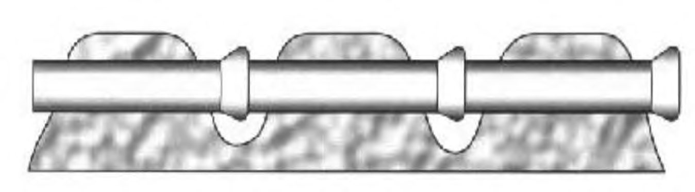
1 - уровень сигнала Рисунок Н.2 - Поиск по минимуму сигнала
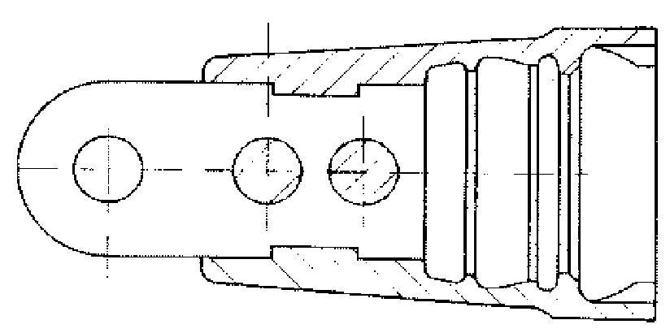
Н.4.3 Определение глубины залегания трубопровода
Глубина залегания - это расстояние от поверхности земли до оси трубопровода.
Для определения глубины залегания трубопровода сначала следует определить его расположение и направление методами, описанными выше. Корпус магнитной антенны фиксируют в положение, чтобы его ось составляла с вертикалью угол 45 («метод 45» -рисунок Н.3) и перемещают перпендикулярно к оси трассы. Правильным положением магнитной антенны является такое, когда нижний конец стержня направлен к оси трассы.
1 - уровень сигнала; 2 - глубина залегания; 3 - расстояние от оси трубопровода до точки минимума
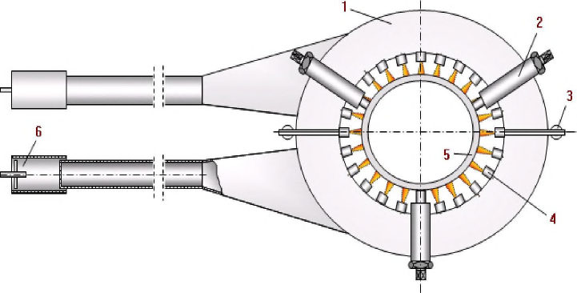
Рисунок Н.3 - Определение глубины трубопровода «методом 45»
Необходимо определить точку, в которой сигнал проходит через минимум (линии магнитного поля располагаются перпендикулярно к антенне). Расстояние от оси трассы до точки минимума будет равно расстоянию от поверхности земли до оси подземного проводника. Если магнитное поле искажено, точки минимума по обе стороны трассы могут располагаться несимметрично и точное определение глубины залегания будет невозможно. Еще одной причиной неточности метода, как видно из рисунка Н.3, является положение магнитной антенны над землей. Ее следует держать как можно ниже к поверхности земли.
Н.4.4 Определение мест повреждения изоляции и мест утечек жидкости
При этом обследовании для измерения потенциала используют два электрода у двух операторов, движущихся на расстоянии от 3 до 5 м друг от друга над трубопроводом. Электроды операторов соединяются экранированным сигнальным проводом из комплекта установки (рисунок Н.4). Чтобы не держать провода в руках, предусмотрены два пояса с контактными зажимами. При этом возможны три различных варианта измерения потенциала.
1 - дефект изоляции; 2 - уровень сигнала
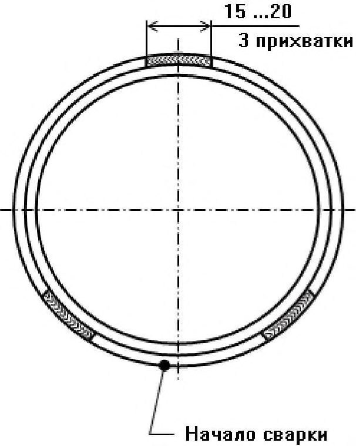
Рисунок Н.4 - Расположение операторов во время приборного обследования
В первом случае операторы используют контактные электроды, закрепленные на ногах. Это удобно при обследовании протяженных участков трасс. Первый оператор может использовать один из приемников с подключенной магнитной антенной для уточнения расположения трассы. На обуви оператора закрепляют электроды, которые подключены экранированным проводом к приемнику второго оператора. К приемнику подключены и электроды второго оператора. Приемник измеряет потенциал на поверхности земли.
Во втором варианте обследования участка измерение потенциала проводится штырями, которые операторы при движении втыкают в землю на 2 см. Способ с ручными штырями может быть полезен при быстром обследовании локальных участков.
В третьем варианте для измерения потенциала используется собственная емкость операторов относительно земли. Этот вариант можно использовать, если сопротивление грунта достаточно высокое (сухой песчаник, асфальтовое или
СП 483.1325800.2020 бетонное покрытие). В качестве датчиков потенциалов на поверхности грунта служит собственная емкость операторов относительно земли. Стержни при этом не втыкают, а просто держат руками.
Методика обследования изоляции и мест утечек одинакова для всех трех способов подключения датчиков. Сначала на объект подают напряжение сигнальной частоты от генератора установки. Обследование изоляции и мест утечки осуществляется двумя операторами. Каждый из операторов подключает токосъемники и приемники в соответствии с инструкцией к прибору и вариантом обследования.
Первый оператор, используя магнитную антенну, движется вдоль оси трассы. Второй оператор идет вслед за первым и с помощью приемника непрерывно следит за изменением сигнала потенциала относительно фонового значения.
Положение аттенюатора приемника второго оператора подбирается так, чтобы стрелка микроамперметра находилась в первой трети шкалы.
По мере приближения операторов к дефекту изоляции или месту утечки наблюдается постепенное нарастание сигнала. Максимальный сигнал второго приемника будет иметь место тогда, когда первый оператор будет находиться точно над местом утечки тока через повреждение в изоляции или утечку жидкости. При дальнейшем движении вдоль трассы сигнал уменьшается, и в момент, когда оба оператора находятся на одинаковом расстоянии от дефекта, сигнал будет наименьшим. В этом случае оба оператора находятся в точках на поверхности земли, имеющих одинаковый потенциал. При дальнейшем движении операторов показания прибора у второго оператора опять возрастают и достигают максимума, когда второй оператор находится над дефектом. Таким образом, при движении второго оператора вслед за первым один и тот же дефект дважды проявляется в виде повышения детектируемого вторым прибором сигнала относительно фонового значения.
При близкорасположенных нескольких местах утечки их выделение друг от друга может быть затруднительно. В таких случаях для более точной локации применяют метод поперечного относительно трассы расположения электродов. В этом случае первый оператор перемещается по оси трубопровода. Второй оператор перемещается параллельно оси трассы на расстоянии длины сигнального провода.
Место утечки или повреждения изоляции определяют по максимальному сигналу второго селективного индикатора. Максимальный сигнал появляется, когда первый оператор находится точно над местом утечки или повреждения изоляции.
В том случае, если состояние изоляционного покрытия трубопровода таково, что на всем протяжении трубопровода индицируются аномалии, то при обходе трассы для установления мест утечек применяются течеискатели.
Н.5Обследование состояния трубопровода в шурфах
Места аномалий, установленные при приборном обследовании, отмечают на трубопроводе колышками и в этих местах проводят вскрытие трубопровода в целях проведения шурфовых обследований.
В состав работ по оценке технического состояния трубопровода в шурфах входят:
- проверка герметичности;
- определение состояния изоляционного покрытия;
- определение состояния поверхности металла и контроль геометрических размеров трубы;
- определение физико-механических свойств металла трубы (при необходимости);
- измерение защитного потенциала;
- определение блуждающих токов.
Результаты обследования заносят в протокол осмотра шурфа.
По результатам диагностирования выносят заключение о техническом состоянии трубопровода, определяют условия и срок дальнейшей эксплуатации трубопровода.
Приборы и аппаратура, рекомендуемые для выполнения технического диагностирования трубопроводов:
- газоанализаторы;
- течеискатели;
- трассоискатели;
- аппаратура для поиска дефектов изоляционного покрытия;
- приборы для контроля состояния изоляционного покрытия;
- приборы для контроля параметров ЭХЗ;
- приборы для определения физических и физико-механических свойств трубы.
Библиография
- [1] Федеральный закон от 29 декабря 2004 г. № 190-ФЗ «Градостроительный кодекс Российской Федерации»
- [2] Федеральный закон от 8 ноября 2007 г. № 257-ФЗ «Об автомобильных дорогах и о дорожной деятельности в Российской Федерации и о внесении изменений в отдельные законодательные акты Российской Федерации»
- [3] Федеральный закон от 21 июля 1997 г. № 116-ФЗ «О промышленной безопасности опасных производственных объектов»
- [4] Федеральный закон от 10 января 2002 г. № 7-ФЗ «Об охране окружающей среды»
- [5] Федеральный закон от 4 декабря 2006 г. № 200-ФЗ «Лесной кодекс Российской Федерации»
- [6] Федеральный закон от 3 июня 2006 г. № 74-ФЗ «Водный кодекс Российской Федерации»
- [7] Федеральный закон от 25 октября 2001 г. № 136-ФЗ «Земельный кодекс Российской Федерации»
- [8] Закон Российской Федерации от 21 февраля 1992 г. № 2395-1 «О недрах»
- [9] Постановление Правительства Российской Федерации от 16 февраля 2008 г. № 87 «О составе разделов проектной документации и требованиях к их содержанию»
- [10] Правила перевозок грузов автомобильным транспортом (утверждены постановлением Правительства Российской Федерации от 15 апреля 2011 г. № 272)
- [11] Строительные нормы и правила СНиП 12-03-2001 Безопасность труда в строительстве, Часть 1. Общие требования
- [12] Строительные нормы и правила СНиП 12-04-2002 Безопасность труда в строительстве, Часть 2. Строительное производство
- [13] Федеральные нормы и правила в области использования атомной энергии НП-031-01 Нормы проектирования сейсмостойких атомных станций
- [14] Ведомственные нормы технологического проектирования ВНТП 3-85 Нормы технологического проектирования объектов сбора, транспорта, подготовки нефти, газа и воды нефтяных месторождений
- [24] Федеральные нормы и правила в области промышленной безопасности «Правила безопасности в нефтяной и газовой промышленности» (утверждены приказом Федеральной службы по экологическому, технологическому и атомному надзору от 12 марта 2013 г. № 101)
- [25] Правила охраны магистральных трубопроводов (утверждены Постановлением Госгортехнадзора России от 22 апреля 1992 г. № 9, Министерством топлива и энергетики Российской Федерации 29 апреля 1992 г.)
- [26] Правила плавания судов по внутренним водным путям (утверждены приказом Министерства транспорта Российской Федерации от 19 января 2018 г. № 19)
- [27] Правила эксплуатации и обслуживания железнодорожных путей необщего пользования (утверждены приказом Министерства путей сообщения Российской Федерации от 18 июня 2003 г. № 26)
- [28] Правила технической эксплуатации железных дорог Российской Федерации (утверждены приказом Министерства транспорта от 21 декабря 2010 г. № 286)
- [29] Правила по охране труда при выполнении электросварочных и газосварочных работ (утверждены приказом Министерства труда и социальной защиты Российской Федерации от 23 декабря 2014 г. № 1101н)